| デート・ア・ライブ アンコール5 <デート・ア・ライブ> (富士見ファンタジア文庫) | |
| 橘 公司 & つなこ | |
| Kadokawa / 富士見書房 (2016) | |
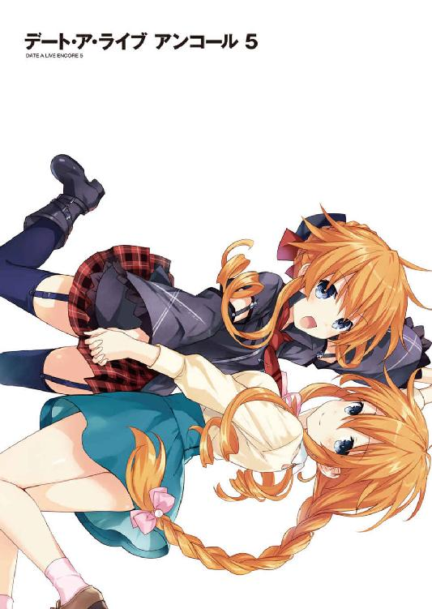
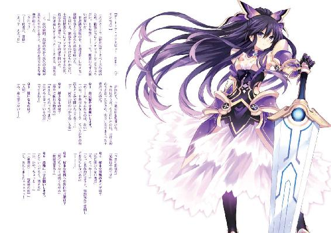
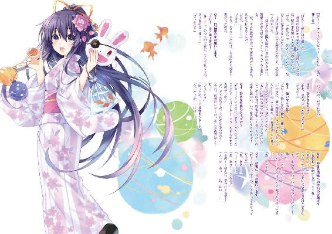
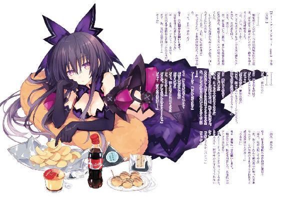
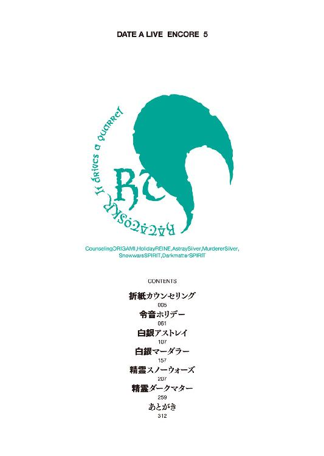
デート・ア・ライブ アンコール５
橘 公司

富士見ファンタジア文庫
本作品の全部または一部を無断で複製、転載、配信、送信したり、ホームページ上に転載したりすることを禁止します。また、本作品の内容を無断で改変、改ざん等を行うことも禁止します。
本作品購入時にご承諾いただいた規約により、有償・無償にかかわらず本作品を第三者に譲渡することはできません。
本作品を示すサムネイルなどのイメージ画像は、再ダウンロード時に予告なく変更される場合があります。
本作品の内容は、底本発行時の取材・執筆内容に基づきます。
本作品は縦書きでレイアウトされています。
また、ご覧になるリーディングシステムにより、表示の差が認められることがあります。
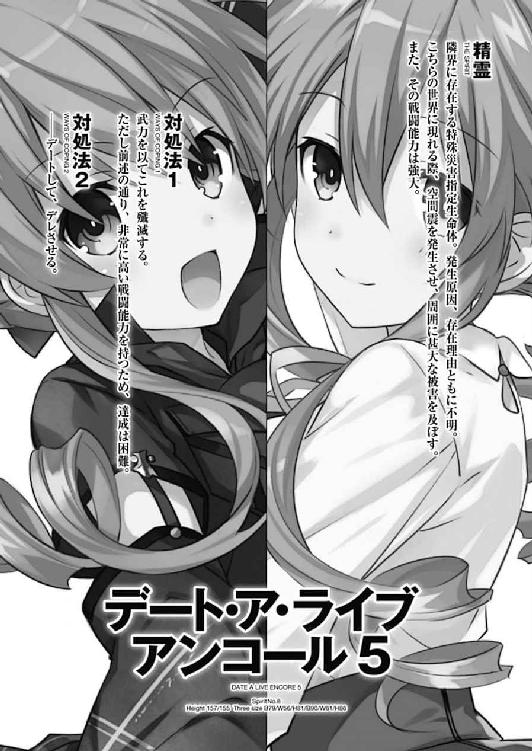
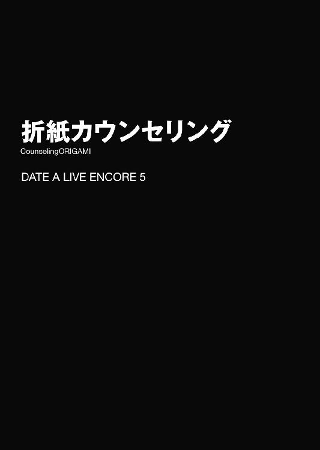
来禅高校二年四組の教室に、昼休みの到来を告げるチャイムが鳴り響く。
「ふぁあ......」
するとそれと同時、窓際の席に座った鳶一折紙は、不意に自分ののどから大きなあくびが漏れるのを感じた。
まさかチャイムに眠気を誘われただなんてことはないだろうが......もしかしたら、授業が終わると認識したことによって少し気が緩んでしまったのかもしれない。あとはまあ、昨日の夜寝るのが遅かったのと、窓から差し込む暖かい日差しも、少なからず影響しているだろう。
「......！」
一拍おいて、ハッと肩を揺らす。
いくら抗い得ない生理現象とはいえ、年頃の女子が人前で大口を開けるだなんて、はしたないにもほどがある。折紙は口元を手で押さえながら、キョロキョロと辺りを見回した。
幸い、ちょうど皆号令に従って礼をしていたため、誰にも見られてはいないようである。折紙ははあと息を吐き出した。
色素の薄い肌に、背を覆い隠すくらいの長い髪が特徴的な少女である。顔の造作は人形のように端整で、しかしその表情は、安堵のためか少し緩んでいる。身に纏っているのは、昨日転校してきたこの都立来禅高校の制服だった。
先生が去ってから、教室の中がにわかにざわめき出す。皆、教科書やノートをしまい込み、昼食の準備をし始めたのである。
「私も......お昼にしようかな」
小さな声で呟き、鞄から弁当箱を取り出す。転校してまだ二日目のため、一緒に昼食をとるような友人はいない。折紙を気にするように視線を送ってくるクラスメートは何人かいるのだが、互いに牽制し合ってか、折紙に声をかけてくるには至っていない様子だった。
かといって、折紙も自分から声をかけるのはあまり得意ではない。ここは手早く昼食を済ませ、この気まずい空気を終わらせてしまうのが得策だろう。そう判断して、折紙は弁当箱の蓋に手をかけた。
と──そこで。
視線の端に一人の男子生徒の姿を捉え、折紙は手を止めた。
折紙の隣の席に座った少年──五河士道である。中性的な顔立ちに、優しそうな双眸。彼もまた、折紙と同じように弁当箱を机の上に取り出していた。
「............」
その様子を見て、折紙の胸がとくん、と鳴った。
彼を意識してしまった理由は、至極単純なものである。
彼、五河士道は昨日──つまり折紙が転校してきたばかりの日に、ひとけのない場所へ自分を呼び出し、その上デートのお誘いをしてきたのである。昨晩折紙が寝る時間が遅れてしまったのも、彼へ送るメールの文面を迷っていたからに他ならない。
なぜだろうか、初めて会話を交わす相手であるというのに、折紙はその誘いを断る気にはなれなかった。否──それどころか、そのデートを楽しみにしている自分がいるのである。今まで感じたことのない感覚に、戸惑いを隠せない折紙だった。
──彼からデートに誘ってきたくらいである。もしかして、今声をかけたら、一緒にお弁当を食べられるのかも......なんて考えが、折紙の頭を掠める。
折紙は意を決すると、ゆっくりと士道に顔を向け、唇を開こうとした。
だが、その瞬間。
「──鳶一さんっ！」
折紙と士道の間に一人の少女が割り込んできて、折紙の言葉は遮られた。アップに纏められた髪に、着崩された制服。クラスメートの山吹亜衣である。
「は、はいっ!?」
突然のことに、裏返った声を発してしまう。しかし亜衣は構わず折紙の手を取ると、感極まった様子でその手をブンブンと振った。
「ありがとう！ 本当にありがとう......っ！」
「え......？ え......っ？」
折紙が呆然としていると、亜衣の後ろからひょこっと二人の少女が顔を出した。確か亜衣の友達、葉桜麻衣と藤袴美衣である。
「あーいー、嬉しいのはわかるけど落ち着きなさいってばー」
「そうよー、鳶一さん驚いてるじゃなーい」
言ってから、折紙に視線を向けてくる。
「ごめんね、鳶一さん。亜衣ったら、鳶一さんのアドバイスのおかげで初デートの約束取り付けたらしくてさー」
「ねー。ていうか今まで岸和田くんと一度もデートしたことなかったってのが逆に驚きなんだけど」
「へ......？」
折紙は目を丸くしてから、「あ」と呟いた。
その日の朝。折紙が学校へ来てみると、教室の真ん中で何やら暗い空気を放っている一団がいた。
一人の少女が頭を抱えながら机に突っ伏し、それを二人の少女が、困り顔で見ている。二年四組の仲良し三人娘、亜衣麻衣美衣だ。昨日転校してきたばかりの折紙であるが、クラスメートからの質問攻めが行われる中、もっともパワーに溢れていたのが彼女らであったため、もう名前を覚えてしまっていたのである。
そんなパワフル三人娘の一角、亜衣が、昨日の元気が噓のように沈み込んでいるのだ。さすがに、少し気になった。
「......もうだめよ、おしまいよぉ、私の恋は儚い海の泡と消えるのよぉ......」
「もー、亜衣ったら。デートのお誘い断られたからって落ち込み過ぎよ」
「ていうか岸和田くんて、見るからに文化系草食男子じゃない。なんでよりにもよってメタルバンドのライブになんて誘ったのよ」
「だ、だって......雑誌の占いにそう書いてあったんだもん......」
わぁぁん、と亜衣が両手で顔を覆う。麻衣と美衣はどうしたものかと顔を見合わせた。
「大丈夫だって。別に亜衣のことが嫌いで断ったわけじゃないでしょ？」
「そうよー、場所を変えてもう一回誘ってみなさいって」
「......どこに誘えばいいの？」
「え？ そりゃ......うーん、駅前でショッピングとか？」
「......それは先週断られた」
「じ、じゃあ......遊園地とか！」
「......それは先々週」
「うーん......」
麻衣と美衣が考え込む。亜衣がさらに派手に嘆き始めた。
「............」
大変そうだとは思ったが、折紙が口を出せるような問題でもなさそうである。折紙は三人の邪魔をしないよう、静かに亜衣の後ろを通り過ぎようとした。
が、その瞬間。亜衣ががばっと上体を起こしたかと思うと、そのまま身体を反らし、まるでブリッジでもするような格好で、折紙の行く手を遮ってきた。
「鳶一さーん......」
「きゃっ!?」
突然のことに、折紙は小さな悲鳴を上げた。だが、亜衣は構う様子もなく、沈んだ表情のままあとを続けてくる。
「......神聖モテモテ美少女鳶一さんはさぞ経験豊富な御仁とお見受けいたします。その溢れ出る知識をこの哀れな非モテ女めに授けてはくれませんでしょうか」
「えっ？ いや私、そんな」
「鳶一さん、気になる男の子をデートに誘うとしたら......どこ行く？」
構わず亜衣が言ってくる。折紙は困惑しながら麻衣と美衣の顔を見た。......が、二人が揃って「どうか迷える子羊に道標を」みたいな慈愛と懇願に満ち溢れた顔をしていたものだから、なんだかもう折紙は回答せねばならない雰囲気になってしまっていた。
「え、ええと............、図書館、とか......？」
「............！」
折紙の回答を聞くなり、亜衣はバネ仕掛けの玩具のように身体を撥ね上げ、
「山吹亜衣......行って参ります」
なんて言いながら、神妙な面持ちで敬礼をした。
麻衣と美衣がこれまた真剣な表情で敬礼を返した。
なんだかそれに倣わねばならない気がして、折紙も鞄を左手に持ち替えてから敬礼をした。
「......あー......」
折紙は額に汗を滲ませながら目を細めた。
──そういえば、確かにそんなことがあった。
「う、上手くいったんですね、よかったです」
亜衣の勢いに押され、戸惑いながらも折紙は言った。すると亜衣が目に涙を浮かべながら言葉を続けてくる。
「本ッッッッッ当ォォォォォォにありがとう！ さすが恋愛マスター鳶一さん！ 前の学校でファンクラブがあったって噂は本当だったのね！」
「へっ!?」
亜衣が言い出した言葉に、目を丸くする。それに続くように、麻衣と美衣も腕組みしながらうんうんとうなずいた。
「まあ確かに、あの奥手な岸和田くんから一発でＯＫを取る回答を用意するとはねー。さすが教育実習生狩りの異名を取る鳶一折紙嬢。アドバイスが的確だわ。敵には回したくないわねー」
「ちょ......っ」
「確か、前の学校で彼女持ち含む男子全員を骨抜きにして、女子たちから命を狙われ始めたからやむなく転校してきたのよね？ よっ、折紙モテ王サーガ！」
「いや、あの......」
亜衣麻衣美衣が大声で折紙の武勇伝を語る。ちなみに、その出所不明の噂はまったくのデタラメである。折紙は恋愛マスターどころか、今まで一度も男女交際というものをしたことがなかった。
だが、そんなことがクラスメートたちに判断できるはずがない。亜衣麻衣美衣の大声に振り向いた生徒たちは「へー」「そうなんだー」「確かにモテそうだもんなあ」ともの凄く無責任に納得していた。
折紙はちらと隣の席──士道の方を見た。なぜだろうか、数多いるクラスメートの中でも、士道には特にそういった誤解をしてほしくなかったのである。
「ちょ、ちょっと、困ります。私はそんなこと......」
「あの、鳶一さん」
と、折紙が抗議の声を上げようとしたところで、背後からそんな声がかけられた。見やると、髪を引っ詰めにした女子生徒が、頰を赤くしながら立っていることがわかる。
「な、なんですか？」
折紙が問うと、女子生徒は意を決したように続けてきた。
「わ、私にもアドバイス、お願いできませんか!? 気になる人がいるんですけど、どうやって声をかければいいかわからないんです！」
「ええっ？」
「是非、お願いします！」
突然のお願いに、折紙は戸惑いながらも言葉を続けた。
「......えっと、まあ、その、まっすぐ向き合うのが大事だと思うので、気持ちに従って、思い切って......」
「なるほど！」
女子生徒はそう言うと、緊張した面持ちで、教室の端で一連の騒動を眺めていた男子生徒のもとに歩いていった。
「その......そういうわけなんだけど」
「え？ あ......お、おう」
男子生徒が、場の雰囲気に吞まれたように、こくりとうなずいた。
瞬間、教室に『おおおおおおおおおおおっ!?』というどよめきとも歓声とも取れる声が渦巻いた。
「おいおい、マジかよ」「なんて的確なアドバイス......」「さすが、女郎蜘蛛の鳶一......」なんて、ヒソヒソと噂が囁かれ始める。最後は新しい二つ名までできていた。
すると、まさかのカップル成立に触発されたように、数名の生徒の目が輝いた。まるで──自分も、折紙に恋のアドバイスを貰いたい、とでも言うかのように。
「あ、あの......」
皆の期待に満ちた視線に、折紙は弁解も忘れてしどろもどろになった。
すると、そんな皆の視線から折紙を守るように、折紙の手を握っていた亜衣がザッと立ちはだかる。
「はーい、駄目よみんな。鳶一さん怖がってるじゃない」
「や、山吹さん」
亜衣が助けてくれたものと思い、折紙は安堵の息を吐いた。しかし。
「アドバイスは一人ずつ！ 奥の空き部屋に相談室作るから、順番はじゃんけんか何かで公平に決めること！」
とてもいい笑顔で発された亜衣の言葉に、折紙は愕然とした顔をした。
◇
果たして、亜衣麻衣美衣の音頭取りによって、校舎の端にある空き教室に、臨時の鳶一恋愛相談室が開設される運びとなった。
空き教室の一角に予備の椅子が向かい合うように並べられ、まるでカウンセリングルームのような空間が作られている。折紙は当然のごとく、半ば強制的に上座側に座らされていた。
「......私、ご飯まだなんですけど」
「大丈夫、私たちもまだよ！」
「でもね鳶一さん、みんなが鳶一さんのアドバイスを必要としてるの！」
「人は感動を食べるだけで生きていけるのよ！」
折紙が不満を呟くと、三人はものすっごくいい顔で、ブラック企業のようなことを言い出した。
「ほらほら、ちゃんとＳＮＳでも告知しといたよー」
「そ、そんなことまでしてるんですか!?」
「まあ、こういうのは雰囲気が大事なのよ雰囲気が。人が集まってればそれだけでも目立つっしょ？」
「あの、そもそもあんまり目立ちたくないんですけど......」
頰に汗を垂らしながら半眼を作る。クラスの面々だけでも大変だというのに、そんな宣伝をしたらより多くの人が来てしまうかもしれなかった。
「だいじょーぶだいじょーぶ。いくら拡散してるって言ってもここ学校の中だし、相談者は基本生徒だけだって」
「ま、秘密の潜入ルートと変装セットとか持ってる人がいたら別だけどさー」
「むしろそこまでして来てくれる人がいたら歓迎しちゃうわよ」
言って、三人が声を合わせて笑う。
......なんだか、もう何を言っても無駄な気がする。折紙ははあと大きなため息を吐いた。
「さ、鳶一先生！ 一人目の相談者が来ますので、お願いしますっ！」
「は、はあ......」
折紙が気のない返事をすると同時、空き教室の扉が開かれ、髪をワックスで逆立てた男子生徒が入ってきた。
「一番！ 二年四組、殿町宏人ですっ！ よろしくお願いしまっす！」
と、無駄に元気よく挨拶をしてから、折紙の向かいの席に腰掛ける。妙に鼻息が荒かった。
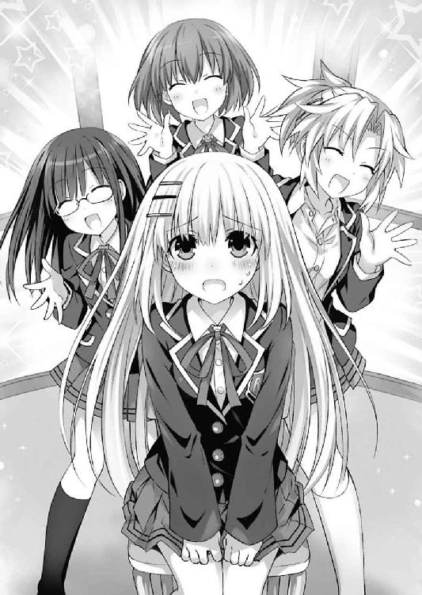
「はいはい、落ち着いて落ち着いて」
「一番目は殿町くんかー」
「それで、相談内容は？」
宥めるように言いながら、亜衣麻衣美衣が折紙の側に立ち並ぶ。
すると殿町は力強く拳を握ると、熱っぽく声を発した。
「実は、俺には親友がいるんだけど......」
「親友......ですか」
折紙はごくりと息を吞みながら返した。この真剣な表情。一体何を相談するつもりなのかはわからなかったが、よほど大事な友人なのだろう。
その意気に気圧されるように、姿勢を正す。──もしかしたら、その親友を好きになってしまった、とかそういうのもあるかもしれない。もしそんなことを訊かれたら、折紙は一体どう答えればいいのだろうか。
まったく気乗りしない上に、勘違いのみで祭り上げられた相談役ではあるが、相談者は真剣そのものなのだ。適当にあしらうようなことはできなかった。自分にできる範囲であっても、きちんと回答を返すことが、せめてもの礼儀だろう。
折紙が言葉を待っていると、殿町がカッと目を見開いた。
「ずっと二人で彼女ナシ同士だったのに、最近そいつばっかり女の子にモテ始めたんだ......！ 一体どーしたら俺もモテるか教えてくれっ！」
「............、はあ、そうですか」
構えていたわりには俗っぽい相談である。折紙は頰に汗が垂れ落ちるのを感じた。
「いやね、別に俺も恨み言を言うつもりはないんだ。でも、なんでこうも急に差が付いちまったのかと思ってさ。去年までは俺たちのことを噂する女子なんて、カップリングにうるさい腐女子くらいだったのに！」
「......ええと」
折紙は困惑気味に眉根を寄せて頰をかいた。......まあ、こんな相談でもわざわざ折紙を頼ってきてくれたのだ。無下にすることもできまい。
「そうですね......その親友さんにあって、自分にないところを探してみる......というのはどうでしょうか」
「あいつにあって俺にないところ......うーん......」
殿町はしばしの間うなっていたが、何か思い当たることがあったのか、ポンと手を打った。
「そうか！ 可愛い妹だ！」
「......は？」
殿町の言葉に、折紙は目を点にした。
「そいつ、中学生の妹がいるんだけど、これがまた可愛いんだ！ はっ......もしかしてあの野郎、妹が育ってきたからって、兄妹でいろいろと大人の階段上ってるんじゃねえだろうな......!? なるほど、最近あいつに漂い始めたリア充感の根源は妹の存在！ そしてそれによって生まれた大人の余裕！ それこそがモテパワーの秘訣だったんだ！」
「ええと......」
「ありがとう！ 謎が解けたよ！ 早速俺も、親父とお袋に妹が欲しいってお願いしてくる！」
殿町は明るい声でそう言うと、椅子から飛び上がるように立ち、そのまま空き教室を出ていった。
「......、よかったんでしょうか、あれで」
その背が見えなくなってから折紙が呟くと、亜衣麻衣美衣は「うーん」と腕組みした。
「まあいいんじゃない？」
「もともとアバウトな質問だったしねー」
「うんうん、殿町家の食卓が数日間気まずくなるくらいだし」
などと、三人は無責任に笑った。
「さ、次いきましょ次」
気を取り直すように麻衣が言って、次の相談者を呼び寄せる。
すると今度は教室に、眼鏡をかけた小柄な女性が入ってきた。
「よろしくお願いしまぁす......」
女性が気まずそうに言って、ぺこりと頭を下げる。その姿を見て、折紙は目を丸くした。それはそうだ。そこにいたのは生徒ではなく、二年四組の担任、岡峰珠恵教諭・通称タマちゃんであったのだから。
「せ、先生、何してるんですか？」
「いやー、教室の前を通りかかったら生徒に捕まって、先生こそ相談してくるべきだ！ って言われちゃいまして......」
言って、あはは、と苦笑する。が、折紙の横に並んだ亜衣麻衣美衣は笑うに笑えない、という顔を作るのみだった。
......そういえば、タマちゃん先生は二九歳にして旦那なし彼氏なしという話を、昨日彼女らから聞いていた。
「............」
緊張にのどを鳴らす。正直、折紙が相談役を務めるには重すぎる相手のような気がした。
「ま、まあとりあえず、相談の方をどうぞ」
「ええと、あの......」
と、タマちゃん先生が何やら言いづらそうに亜衣麻衣美衣たちをちらと見る。
三人は首を傾げていたが、数秒後、タマちゃんの意図に気づいたように「ああ」とうなずいた。
「もしかして、私たちがいたんじゃ話しづらい系のやつですか？」
「ちょっと待ってくださいねー」
「私たちあっち行ってますんでー」
言って、三人が部屋の奥の方へ歩いていき、後ろを向いて耳を塞いでみせる。
タマちゃんはその様子を見てから、声をひそめるように言ってきた。
「あの、これは誰にも言わないでほしいんですけど......」
「は、はい」
「実は私、今年の四月に......プロポーズをされまして」
タマちゃんの言葉に、折紙は目を丸くした。
「えっ、そうなんですか？ おめでとうございます、相手はどんな方なんですか？」
折紙が問うと、タマちゃんはしばしの間悩むようにうなってから、耳打ちするように言ってきた。
「詳しくは言えないんですが、実は......この学校の生徒さんなんです」
「ええッ!?」
まさかのカミングアウトに、折紙は思わず驚愕の声を発した。さすがに耳を塞いでいても聞こえたらしい。亜衣麻衣美衣の肩がぴくりと揺れる。
「しーっ！ しーっ！」
タマちゃんが、慌てて人差し指を立ててくる。折紙はすいません、というように頭を下げてから小さな声で続けた。
「そ、それ、本当ですか？」
「ええ、一応......」
「で、先生としてはその人はどう......なんですか？」
「ううん......そうですねえ、個人的には、なかなか有望株かなあ......なんて。責任感はありますし、面倒見もいいですし、聞くところによると、料理も上手いらしいですし」
「ま、まあ、恋に年齢は関係ないですけど......できれば卒業してからの方が......」
言うと、タマちゃんがあははと苦笑した。
「それもそうなんですけど......実は続きがありまして」
「続き？」
「ええ......どうやら私の食いつきが重すぎたせいか、『そこまでの覚悟はなかった』って逃げられてしまいまして......それから七ヶ月間、何も進展がないんですよ。やっぱり、もう目がないんですかねぇ......」
言って、タマちゃんが遠い目をする。折紙はブンブンと首を横に振った。
「も、もしかしたら、その人も話しかけるタイミングを逸してるだけかもしれません。駄目なら駄目で、もう一度、お話をしてみるべきだと思います」
折紙が言うと、タマちゃんは顔をパァッと明るくした。
「そ、そうですかね？」
「そうですよ！ 自信を持ってください！」
「ありがとうございます！ 私......もう一回彼に訊いてみます！」
タマちゃんは、目をキラキラと輝かせながら去っていった。
それを感じ取ってか、亜衣麻衣美衣が折紙の方に向き直ってくる。
「あ、終わった？」
「どんな相談だったの？」
「って、それ聞いたら耳塞いでた意味ないじゃん！」
言って、亜衣麻衣美衣はあははと笑う。折紙も、なんと答えたものかわからず、誤魔化すように曖昧な笑みを浮かべた。
「む、もう入ってもいいのか？」
するとそれに合わせるかのように、タマちゃんが閉めていった扉が開き、次の相談者が部屋に入ってきた。
「────」
その姿を見て、一瞬言葉を失う。
だが、それも無理からぬことだろう。何しろそこに現れたのは、夜色の髪に水晶の瞳を備えた、冗談のように美しい少女だったのだから。
「あれ、十香ちゃんも何か相談？」
「......うむ」
麻衣に名を呼ばれると、少女──折紙のクラスメート、夜刀神十香はこくりとうなずいてから椅子に腰掛けた。確か、士道の右隣の席の女子生徒だ。その容貌はどことなく、以前折紙が対精霊部隊に所属していた折、戦場で見た精霊のそれに似ている気がしたのだが──まあ、精霊が学校に通っているはずなどないし、他人の空似だろう。
「ここならば適切な助言をもらえると聞いてな。ええと......」
「あ、鳶一です。鳶一折紙」
「む、そうだった。よろしく頼むぞ、鳶一折紙」
なんだか古風な喋り方をする少女である。だが、そんな変わった口調も、彼女の可憐な姿容と相まってか、個性的なチャームポイントにしか見えなかった。
「それで、相談っていうのは？ やっぱり五河くん絡み？」
「え──？」
美衣の言葉に声を発したのは、十香ではなく折紙だった。まさかここで士道の名前が出てくるとは思ってもみなかったのだ。
「ぬ？ どうかしたか？」
「あ、いえ......それより、五河くんがどうかしましたか？」
「うむ......実は一昨日あたりから、シドーの様子がおかしくてな。何か、元気づける方法はないだろうか」
言って、十香が少し不安そうに眉を八の字にする。
折紙はううむとあごに手を当てた。様子がおかしい、というだけでは原因を推測することも困難であるし、細かな対応策などを与えられるはずがない。
だが、折紙はそこではたと気づいた。
自分が今気になっているのは、十香に適切な助言をできるか否かよりも──この少女と五河士道が一体どういう関係なのか、ということだったのだ。
「......いや、いや」
頭の中に浮かんだ雑念を払うように首を振る。別に、この少女が士道とどんな関係であろうと折紙には関わりのないことであるはずだった。確かに折紙は士道にデートに誘われはしたが、別に面と向かって付き合ってくださいと言われたわけでもない。そもそも、折紙があのお誘いをデートと思っているだけで、ただ何か用事があるだけという可能性だってあった。
だから、関係がないのだ。──仮にこの少女が、士道の恋人であったとしても。
「む......大丈夫か？」
折紙が押し黙っていると、十香が心配そうに顔を覗き込んできた。慌てて手を振り、自分の心を落ち着けるようにコホンと咳払いをする。
とにかく、折紙にできるのは、この不安そうな少女が少しでも安心できるよう、言葉をかけてあげることだけだ。折紙は改めて十香の顔を見やった。
全能の造物主でさえ、彼女の造形には細心の注意を払ったに違いない。そう思えるくらいの可憐な容貌。同性の折紙でさえ一瞬目を奪われるくらいなのだ。年頃の男子ならば、彼女に見つめられるだけで胸を焦がすに違いない。
だから、折紙は自信を持ってうなずいた。
──彼を信じて、優しい言葉をかけてあげてください。きっと、それが一番の方法です。
そんな回答を頭の中に思い描きながら、折紙は言葉を発した。
「─────────────、───────────」
すると、亜衣麻衣美衣が一瞬「ん？」と首を捻ってから、不思議そうな顔で折紙を見てくる。
そんな様子に、今度は折紙が小首を傾げた。......今自分は、何かおかしなことを言っただろうか？
「本当か？ それでシドーは元気になるのだな？」
「ええ、もちろんですよ。自分を信じてください」
「わかった！ 恩に着る！」
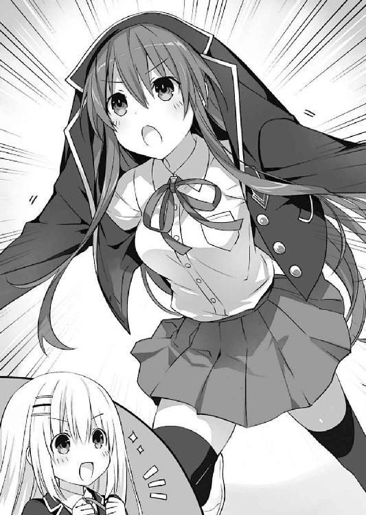
十香は元気よく言うと、突然着ていたブレザーのボタンを外し、そのままフードを被るように奥襟を引っ張り上げ、まるでウルトラ怪獣のような格好になった。
「では、行ってくる！」
そしてその格好のまま、パタパタと部屋の外に走っていく。
その背を見送ってから、折紙はぽつりと呟いた。
「......何だったんでしょう、最後の格好」
『......っ!?』
折紙の呟きを聞いて、亜衣麻衣美衣が驚愕の表情をする。が、折紙にはなぜ三人が驚いているのか今ひとつよくわからなかった。......もしや、あの格好はこの学校では普通のことなのだろうか？
折紙が不思議に思っていると、部屋の扉が開き、次の相談者と思しき少女が二人、入ってきた。
「ほう？ もしや御主は噂の転校生か？」
「依頼。よろしくお願いします」
十香よりも個性的な口調でそう言って、少女たちがなぜか妙に格好いいポーズを取る。
双子であろうか、左右に立った二人の少女は、表情と髪型、あとは体型くらいでしかそれぞれを判別できないほどにそっくりの顔立ちをしていた。
「ええと......あなたたちは」
「ふっ、よくぞ聞いた。我は八舞耶俱矢。万象薙ぎ伏す颶風の御子である」
「挨拶。八舞夕弦です。耶俱矢とともに、二年三組に所属しています」
夕弦の説明に、折紙はなるほどとうなずいた。道理で、二人の顔に見覚えがないはずである。さすがにこんなにも個性が爆発した双子、一度見たら忘れまい。やはり同じクラスではなかったらしい。
が、そこで別の戦慄が鎌首をもたげる。折紙が懸念したとおり、二年四組の教室で起こったはずの騒動が、亜衣の情報拡散によって別のクラスにまで伝播しているようだった。
今日はもう、お昼ご飯を食べられないかもしれない。折紙は小さなうめき声を上げた。
「何をしておる。評判の占術師というから、わざわざ赴いたのだ。早く我を占うがいい」
耶俱矢が、急かすように言ってくる。その言葉に、折紙は「え？」と目を見開いた。
「占術......って、占いのことですか？ 私、そんなのできませんけど......」
「何？ おかしいな。確かに、闇深き現代に光を照らし道を示すと聞いたぞ」
「首肯。『一〇〇発一〇〇中！ 折紙先生のスピリチュアルステーション』と書かれていました」
「しっ、知りません！ なんですかその胡散臭いアオリ!?」
たまらず叫びを上げる。が、折紙が知らぬ間に話が大きくなっていた。
「ふん、まあよい。ではここは何をする場所なのだ？」
「あー、ここは百戦錬磨の鳶一さんに恋愛相談をする部屋よ」
耶俱矢の質問に、亜衣が答える。するとそれを聞くなり、耶俱矢はピクリと耳を動かした。
「恋愛......ふん、なるほどな。衆愚が群がっているから何事かと思えば。くだらぬ。帰るぞ、夕弦」
言って、耶俱矢が鼻を鳴らし、踵を返そうとする。
が、次の瞬間。夕弦が耶俱矢の腕をガッと摑み、その進行を阻害した。
「な、何をする！」
「制止。それよりも、恋愛相談と言いましたね」
「は、はあ......」
「相談。実はこの耶俱矢、気になっている相手がいるのにどうも素直になれないのです。何か方法はないでしょうか」
「ちょ、ちょっと、何言ってんのよ夕弦!?」
夕弦の言葉に、耶俱矢が顔を真っ赤にしながら叫びを上げる。先ほどのような気取ったそれではなく、普通の女の子のような口調だった。
「要請。早く回答を」
「ちょ......っ、そんなん別にいらないってば！」
叫びながら、耶俱矢と夕弦が押し合いを始める。折紙はそんな様子に苦笑しながら声を上げた。
「えっと......じゃあ、今みたいに夕弦さんが耶俱矢さんの言葉を代弁してあげればいいんじゃないですか......？」
「なっ、何言っとんじゃこらぁーっ！ 夕弦にそんなの任せたら、あることないこと勝手に言うに決まってるでしょぉぉぉぉっ！」
「質問。具体的には何と言えばよいのでしょうか」
「え？ それは......まあ、耶俱矢さんがあなたのことを意識してますよ......とか？」
「な......っ」
折紙が言うと、耶俱矢は顔をさらに真っ赤に染めた。折紙に摑みかかろうとしてか、ジタバタと手足を動かす。
しかし、耶俱矢の身体は完全に夕弦に拘束されていた。夕弦が、真剣な顔をしながらジッと折紙の方に視線を寄越してくる。
「──失望。ぬるいです」
そして、半眼を作ったままそう言った。
「えっ？」
「要求。そんな当然の回答は求めていません。もっと生々しく、粘っこく、聞いただけで辛抱たまらなくなるような淫靡な誘い文句を授けてください」
「そ、そんなこと言われても......」
「否定。いえ、あなたならできるはずです。なぜかはわかりませんがそう確信できます」
「私はそんな......」
「燃焼。どうしてそこで諦めるのですか。もっと熱くなるのです」
「じ、じゃあ......その、あなたのことが好きだったんです......とか、そういう？」
「要求。もう一声お願いします」
「......私を滅茶苦茶にして......とか？」
折紙は頰を染めながら躊躇いがちに呟いた。しかし夕弦は納得しない。さらにもう一声、と促してくる。ちなみに、耶俱矢は夕弦に口を押さえられ「んー！ んー！」とうめいていた。
これはもう、中途半端な答えでは納得してもらえないだろう。折紙はしばしの間考え込むと、夕弦の耳に口を近づけ、ぼそぼそと具体例を述べた。
「............！ 驚愕」
すると夕弦は目を見開いたかと思うと、拘束していた耶俱矢を放り出し、その場に跪いた。
「畏敬。やはりあなたは夕弦が見込んだ通りの人でした。──マスター折紙とお呼びしても？」
「はあ......ど、どうぞ......」
折紙が汗を滲ませながら答えると、夕弦は満足げに首肯して、再び耶俱矢の手を取り、歩いていった。
「歩行。行きますよ、耶俱矢。あんなことを言われたらきっと男はイチコロです」
「何!? 何言われたの、ねぇっ!?」
「秘密。それは本番までのお楽しみです」
「いっ、いやぁぁぁぁぁぁぁっ!?」
夕弦が、必死に抵抗する耶俱矢を引きずりながら、部屋を出ていく。
それから数秒の間、部屋の中に沈黙が流れた。
「なんていうか......嵐のような双子だったわねー」
亜衣がぽつりと漏らす。麻衣と美衣、折紙は、同意を示すように首肯した。
と、そこで。
廊下の方からバタバタバタッ！ という激しい足音が響いてきたかと思うと、次の瞬間、部屋の扉が勢いよく開け放たれた。
そしてそこから、一人の女子生徒が息を荒くしながら入ってくる。
その姿を見て、折紙は顔を驚愕の色に染めた。そこに現れたのは先ほど相談をしにきた少女・十香であったのだが......なぜか髪や服の至る所に細かな枝や葉っぱがくっついており、全身が土埃で汚れていたのである。
「どういうことだ！ おまえの言うとおりにしたら、シドーがさらに心配そうな顔になってしまったぞ!?」
「え......ええっ!?」
折紙は思わず声を上げた。とはいっても、それは十香の言葉に対するものというよりも、彼女の様相に対するものであったのだけれど。
「ど、どうしたんですか、その姿」
「何を言っている！ おまえが『──きっと五河くんは邪気に侵されています。このまま放っておいては大変です。今すぐ悪魔祓いをしなければなりません。ブレザーを頭から被ってジャミラの真似をしながら彼の前で高速で反復横跳びをして、そのまま教室の窓からダイブするのです』と言ったのではないか！」
「そんなこと言うはずないじゃないですか！」
折紙が叫ぶと、亜衣麻衣美衣が一斉に『えっ？』という顔をした。
しかし十香は三人の反応など気にしていない様子でブンブンと首を振り、言葉を続けてくる。
「とにかく！ ちゃんとシドーを元気づける方法を教えてくれ！ 一体どうすれば、シドーは元気になってくれるのだ!?」
「わ、わかりました。では、ちょっと大胆な手段ですが......」
折紙は小さく咳払いをすると、思案を巡らせた。
確か以前インターネットで、人間はハグをされると安心感を覚え、実際脳内で精神を安定させるホルモンが分泌されるという情報を目にしたことがあった。この方法ならば間違いはないだろう。しかも相手が十香のような美少女であればなおさらだ。
だがまあ、ここは学校であるし、彼女も五河士道も学生だ。不純異性交遊を助長するようなアドバイスは避けねばなるまい。効果は薄れるかもしれないが、もう少しマイルドにしておいた方が無難だろう。
──彼の手を握って、大丈夫といってあげてください。
折紙は心の中で回答を決め、口を開いた。
「彼がさらに心配そうな顔になった......それは彼に取り憑いた悪魔が苦しんでいる証拠です。あと一踏ん張りです。今度はブリッジしながら彼の周囲をぐるぐる回り、そのままジグソーの『スカイ・ハイ』を歌いながら屋上からプールにダイブしてみてください」
そして再び優しい笑みを浮かべながら、言葉を発する。
『......えっ!?』
するとまたも、亜衣麻衣美衣が意外そうな顔をした。
「今度こそ本当だな!? それでシドーは元気になるのだな!?」
「はいっ！ 今度こそ間違いありません！」
「わかった！ 行ってくる！」
十香は力強くうなずいて、辺りに細かい枝葉を散らしながら部屋を出ていった。
「あ、あのー、鳶一さん？」
麻衣が、頰に汗を垂らしながら問うてくる。
「はい、なんですか？」
「なんで十香ちゃんへのアドバイスだけ、なんていうか、あんななの？」
麻衣の言葉に、折紙は少し視線を逸らした。......やはり、手を握るというのもあまりよくなかっただろうか。
「やっぱり、刺激が強すぎましたかね？」
「刺激......って意味ではまあこの上なく強いと思うけど」
「うんまあ今もう一一月だし......」
「さすがにこの寒い時期は辛いんじゃないかなーなんて......」
三人が難しげな顔を作ってくる。折紙は首を傾げた。どうも話が嚙み合っていない気がする。
「え？ 寒い時期だからこそ効果あるんじゃないですかね？」
折紙の言葉に、亜衣麻衣美衣が戦いたような表情をする。折紙は三人が何をそんなに恐れているのかわからず、困惑するように眉根を寄せた。
と、そんなことをしていると、またも扉が開いて、相談者と思しき人影が入ってきた。
「あ、どうぞ。いらっしゃ──」
それに気づいた亜衣がそう言いかけて、言葉を止める。
しかし、それも無理からぬことだろう。何しろそこにいたのは、サングラスとマスクで顔を覆い隠した、怪しさ極まる長髪の男だったのだから。
身長は一八〇センチを超えているだろうか。一応来禅高校の制服を着てはいるのだが、明らかに丈が足りていない。なんというか、あまり高校生には見えなかった。
「え、ええと、相談者の方......ですか？」
「はい。ＳＮＳでこの相談室のことを知り、いても立ってもいられず」
「ここの生徒さん......ですよね？」
「ははは、当然じゃあありませんか。見てくださいこの制ふ」
ビリッ。言葉の途中で、男の着ていた制服の肩部分が破れた。
「おっと失敬。今〈フラクシナス〉に変装用の制服がこのサイズしか──ではなく、急に成長期が来てしまいまして」
「変装用!? 今変装用って言った!?」
麻衣が叫ぶも、男は意に介さず、折紙の向かいの椅子に腰掛けた。その際、今度はズボンのお尻がビリッと音を立てた。
「............」
明らかに怪しいが、本人が相談者と言っている以上無下にはできない。というかそれ以上に、ぞんざいに扱って暴れられでもしたら大変である。折紙はとりあえず話を聞いてみることにした。
「えと......じゃあまず、お名前いいですか？」
折紙が問うと、男は思案を巡らせるようにあごに手を置いた。
「ふむ......そうですね、わけあって本名を名乗るわけにはいかないので、〈オクトーバー恭平〉とでも呼んでください」
「............」
怪しさしかなかった。
「そ、それで......〈オクトーバー恭平〉さんは何について相談を......？」
「はい。実は、最近司令が、昔ほど『ご褒美』をくれないのです。どうしたらよいでしょうか」
「司令......？」
「はい。あ、ご安心ください。司令といっても、中学生の女の子です。初老の男性に痛めつけられて喜ぶとか、そこまで特殊な性癖はございません。あ、でも女装の似合う少年ならストライクゾーンです」
「............」
純度一〇〇パーセントの怪しさだった。
「それで、ええと、『ご褒美』......？」
「そうなのです。以前は少し生意気な口をきいたり、司令の気に障る動作をするだけで、足を踏んでくれたり、お尻を蹴ってくれたり、目にチュッパチャプスの棒を突き刺してくれたりしていたのですが、最近は私の言動に慣れてしまったのか、反応が鈍い気がするのです」
「え......いや、いろいろ気になるところはあるんですけど、そもそもそれって『ご褒美』なんですか？」
「あ、これは失敬。こちらの流派ではなんと呼ぶのでしょうか。『プレジャー』ですか？『聖者の贈り物』ですか？ それとも『素敵なサムシング』ですか？」
「............」
モンドセレクション最高金賞確実レベルの怪しさだった。
質問の意味不明さもさることながら、なんだか徐々に折紙の方に近づいてきている気がする。折紙は額に汗を滲ませながら、引きつった笑みを浮かべた。
「そ、そうですね......私はその司令さんのことを知らないので具体的にはわかりませんけど......やっぱり、その人が不機嫌になるようなことをするしかないんじゃないですか？」
折紙が言うと、男はふうむと腕組みした。
「やはり王道を突き詰めるしかないのでしょうか。──一つ、新しいネタがあるのですが、見ていただいてもよろしいですか？」
「え？ は、はあ......」
勢いに押されるように首を縦に振ると、男は大仰に礼をした。
「感謝いたします。──では、参ります。〈オクトーバー恭平〉の、司令ものまねシリーズ！」
言って、男が制服のポケットから黒いリボンを取り出し、長い髪を素早く二つ結びにしたかと思うと、胸を反らし、偉そうに脚を組んだ。そののち、これまたポケットから取り出した棒付きのキャンディを口にくわえてピコピコと動かしてみせる。
「だからァ、なんでそんなことができないのォ？ バカナノ？ 死ヌノ？」
そして、妙に甲高い裏声で、やたら憎たらしくそんなことを言った。
「............ええと」
「どうです!? ムカつきましたか!?」
そもそもその『司令』とやらを知らないので似ているのかいないのかはわからなかったが、対象を怒らせようとしていることだけは容易に知れた。なんと返せばよいものかと頰をぴくつかせる。
「そ、そうですね......たぶん、本人が見たら相当怒るんじゃないかと......」
「本当ですか！ ならば！」
と、男が興奮気味に言って椅子から立ち上がり、折紙にお尻を突き出してきた。破れたズボンの隙間から、ハート柄のトランクスが覗いていた。
「遠慮なく、どうぞ！」
「え、えっ!?」
折紙が困惑していると、男はさらにずいずいと尻を寄せてきた。
「手でも足でも、何なら武器を使っても！」
「あ、あの......いや......」
「さあ！ さあ！」
が、男が息を荒くしながら折紙に尻を迫らせていると。
「──いたぞ！ この部屋だ！」
不意に廊下の方から、そんな声が響いてきた。
次の瞬間、体格のいい体育教師が二名、部屋に乗り込んでくる。その姿を見て、〈オクトーバー恭平〉が「ちっ」と舌打ちをした。
「もう見つかってしまいましたか。残念ですが、あなたたちは趣味ではありません！ 美少女になってから出直してきていただきたい！ Ｂカップ未満だとなおよし！」
「不審者め、何をわけのわからんことを！」
「え......？ ええ......っ!?」
折紙が呆気に取られていると、〈オクトーバー恭平〉がビッ！ と指を二本立ててみせた。
「ふっ、残念ながらここまでのようです。アディオスアミーゴシーユーアゲイン！」
〈オクトーバー恭平〉はそう言うと、部屋の窓から華麗に身を躍らせた。
次の瞬間、ガサガサガサッ！ と植え込みに何かが落ちる音と、「あああああああッ！」という恍惚とした叫びが響いてくる。
「な、なんて奴だ......」
「急げ！ 下だ！」
体育教師たちが顔に戦慄めいた表情を浮かべながらも、男を追って部屋を出ていく。
部屋に残された折紙と亜衣麻衣美衣は、しばしの間呆然としたのち、顔を見合わせて乾ききった笑みを浮かべた。
「な、なんだったんでしょう、今の......」
「さ、さあ......」
やはりここの生徒ではなかったようだったが......だとすると、一体どこの誰だったのだろうか。謎は深まるばかりだった。
が、いつまでもぼうっとしているわけにはいかないようだった。それからすぐに、廊下から激しい足音が響いてきたのである。しかも何やら、ビッタンビッタンと濡れた音だ。
「──どういうことだっ！」
凄まじい怒声とともに扉を開けたのは、本日三度目の登場となる相談者、夜刀神十香だった。もう髪に小枝や葉っぱはついていなかったが、その代わり全身がぐっしょりと濡れていた。まるで、この寒空の下プールにダイブでもしたかのような有様だ。
「ど、どうしたんですか！ びしょ濡れじゃないですか！」
「おまえがこうしろと言ったのだろう!?」
「ええっ!?」
折紙は驚愕に目を見開いた。まさか、士道の手を握ったらこうなったというのだろうか。では、十香の全身を濡らしている液体は一体......
折紙がそんなことを考えていると、十香は犬のように全身をぶるぶるっと震わせた。辺りに勢いよく水滴が飛ぶ。折紙は「きゃっ」とその正体不明の液体を避けた。つもりだった。なぜか足が前方へ動き、むしろその液体を多めに浴びてしまった。まるで身体が自動的に動いたかのような感覚だった。
「う、うぁぁ......」
「とにかく！ これでも駄目だった！ むしろシドーの顔が強ばり始めたぞ！」
「そ、そうですか......それじゃあ......」
折紙が言いかけると、十香はその言葉を止めるように手のひらを広げた。
「待て。もうこのままでは埒が明かないと思って、直接連れてきた！」
「えっ？」
「入ってくれ、シドー！」
十香が言うと、その後ろから、額に汗を滲ませた五河士道が、ゆっくりとした足取りで部屋に入ってきた。
「......お邪魔します」
「いっ、五河くん！」
「おう、折紙──じゃなくて、鳶一さん」
士道が小さく手を上げて、挨拶をしてくる。それだけで、なぜか折紙の心臓はドキドキと激しく脈打った。
「さあ、鳶一折紙よ！ 今度はきちんと方法を教えてくれ！」
「え、ええと......」
十香がキッと視線を鋭くしながら言ってくる。そのあまりの気迫に、折紙は気圧されるように身体を反らした。
よく見ると、十香の後ろで士道も困ったように頰をかいている。自分のために頑張ってくれるのはありがたいのだが、十香が無茶をするのは望んでいない......といった様子の顔だ。
......これはもう、十香に何かをしてもらうというよりも、直接士道と話をつけた方が早いかもしれない。
折紙はそう判断すると、椅子から立ち上がって、士道の方に歩み寄った。
「......すいません、ちょっとお話を聞いてもらえますか？」
「え？ あ、ああ」
折紙の言葉に、士道がうなずいてくる。折紙は十香の方に視線を向けた。
「では、ちょっと待っていてくれますか？ すぐに戻ってきますので」
「む......？ それで大丈夫なのか？」
「はい、きっと」
折紙が言うと、十香はしばしの間折紙の目を見つめてから、こくりと首肯した。
「わかった。シドーを任せたぞ、鳶一折紙」
「任されました。......では五河くん、こっちへ」
折紙は士道を連れて、廊下に出ていった。
◇
......士道は、困惑していた。
理由は単純なものである。昼休みが始まったかと思うと、折紙が亜衣麻衣美衣に祭り上げられ、恋愛相談室室長に就任させられたのだ。
いや、それだけならまだいい。それに十香や、隣のクラスの八舞姉妹が興味を持ったのも、まあよしとしておこう。
だが、問題はその相談室から出てきた相談者たちの反応だった。
なぜか殿町が「俺の妹に手を出すなよ!?」と士道を指さしてきたかと思うと（ちなみに、殿町に妹はいない。少なくとも士道の知る限り）、タマちゃん先生が鼻息を荒くして「五河くん！ 四月のことでちょっとお話があるんですけども！ ええ、いきなり家業を継ぐとか血判状とかそういう話は早すぎましたよね！ 少しずつ慣れていきましょうね！」と追いかけてきたり、夕弦が耶俱矢の首根っこを摑みながら寄ってきたかと思うと、口に出すのもはばかられるような淫猥な言葉を並べ立ててきたりしたのである。
極めつけは十香だ。即席相談室から出てくるなり（もうこの時点でブレザーを頭から被っていて若干おかしかった）、士道の前で超高速反復横跳びをし、そのまま教室の窓から植え込みに向かってコードレスバンジーを決めたのである。
そしてダダダッと教室に戻ってきて士道の顔を確認するなり、再び相談室に駆け込み、今度はブリッジの体勢で士道の周りをぐるぐると回り、十香自身も何を歌っているのかわからないような曲を大声で歌い、そのまま屋上へ走っていったかと思うと、両手を広げて季節外れのプールへと飛び込んでいったのである。
ついでに、ここに向かっている途中、ぱっつんぱっつんの制服を着た長身の男が校庭を全力疾走しているのを目撃した。どことなく見たことがあるシルエットのような気がしたが、士道は気にしないことにしておいた。
ともあれ、さすがに普通ではない。相談室の中で違法薬物でも焚かれているのではと疑ってしまう士道だった。
「......まさか」
髪の長い折紙のあとをついて歩きながら、士道は小さく呟いた。
一瞬、この折紙に、もとの世界の記憶が残っているのではないか......なんて考えが頭を掠めたのである。
「......いや、そんなはずはないか。もしそうだとしたら......」
「五河くん？」
と、折紙に声をかけられ、士道は顔を上げた。
「あ、ああ......悪い。何だ？」
「この辺でどうでしょう。この部屋なら、あまり大声を出さなければ会話も聞こえないでしょうし」
言って、先ほどの相談室とは別の空き教室を指さしてくる。士道は了解を示すように首を前に倒すと、折紙とともに部屋に入っていった。
「あの......なんだかすいません、ややこしいことに巻き込んでしまって」
言いながら、折紙がぺこりと頭を下げ、ブレザーのボタンを外す。
「あ、いや。俺も何となく成り行きは見てたから。大変だな、鳶一さんも」
「いえ、そんな」
折紙が苦笑しながら、ブレザーの袖から腕を抜く。
「それより、夜刀神さんのことなんですけど」
「そうだった。あいつ、一体どうしたんだ？」
士道が問うと、折紙がブラウスのボタンを外しながら続けた。
「はい。どうやら夜刀神さん、五河くんを元気づけたいみたいで......」
「俺を？」
言われて、士道はむうとうなった。
確かに士道は、数日前から特殊な事情に巻き込まれ、少々精神が疲弊していた。どうにか表に出さぬよう取り繕ってはいたものの、十香にはバレてしまっていたらしい。
「そっか......あいつ、そんなことを」
「だから、すいません、こういうことをお願いするのはよくないとは思うんですけど......夜刀神さんに、元気な姿を見せてあげてくれませんか？」
ボタンを全て外し終わったあと、折紙がスカートのホックに手をかけ、ジィィィッ......と音を立てながらファスナーを下ろした。
「ああ、それは......って、おい!?」
そこで、ようやく士道は声を裏返らせた。
あまりに自然な動作であったため、数瞬の間スルーしてしまっていたが、折紙は会話をしながら着実に制服を脱ぎ始めていたのである。
「え......？」
士道が指摘すると、折紙は目を丸くしながら自分の身体に視線を落とし、
「──き、きゃぁぁぁぁぁぁぁッ？」
なんて、絹を裂くような悲鳴を上げた。まるで、自分が服を脱いでいたことに今気づいたかのように。
「な、なんで......こんな......！ 五河くん......!?」
「いやいやいや俺は何もしてねえよ!?」
折紙が顔を真っ赤にし、ブラウスの間から覗く肌を隠すようにその場にへたり込む。士道は目のやり場に困り、顔を逸らした。
が、災難はそれだけでは終わらない。折紙の悲鳴に誘われてか、部屋の外から何人もの人間の足音が聞こえてきたのである。
「まず......ッ」
士道は慌てて扉を押さえようとした。が──遅い。
「どうかしたのか、シドーっ！」
士道の反応よりも一瞬早く、十香が扉を開け放った。それから一拍遅れて、十香のあとから駆けつけたと思しき亜衣麻衣美衣が顔を覗かせる。
「なになにー」
「どうしたのよー」
「五河くん何かしてないでしょうねー」
そしてそのまま、部屋の中で展開されている、誤解しか生まないような光景を目の当たりにし、十香と三人娘が硬直する。
「ちッ、違うんだ、これは──！」
「何をしているのだシドーッ!?」
「きゃー！ きゃぁぁぁぁっ！ 同級生から犯罪者がっ！」
「テレビの取材に答える練習しとかなきゃぁぁぁぁぁっ！」
「五河くんねー、彼ならいつかやると思ってましたぁっ！」
士道の弁明は、四人の叫びにかき消された。
◇
「な、なんだったんだろう、今日の......」
その日の夜。自宅に帰った折紙は、クッションを抱えるようにしながら昼休みのことを思い出していた。
まあ、いろいろとおかしなことは起こっていたのだが、極めつけはやはり最後の空き教室での一件だろう。
まったく自覚がないままに、いつの間にか服を脱いでしまっていたのである。あのときは思わず声を上げてしまったが、士道が折紙に指一本触れていないことは折紙自身がはっきりとわかっている。無論、士道が目を見ただけで人間を自在に操る催眠術を使えるというのならば話は別だが、魔術師でもない士道にそんなことができるとは思えない。
折紙が、自分から脱ぎだしたのだ。まるで、自分の中にもう一人自分がいて、身体を勝手に動かしたかのように。
でも、なぜだろうか。同級生に半裸姿を見られたというのに、不思議と、嫌な感覚というわけではなかったのだ。
「どうしちゃったんだろ、私......」
ほう、と息を吐く。
「まさか、本当に五河くんのこと......」
と、その瞬間。携帯電話がメールの着信音を響かせたものだから、折紙は素っ頓狂な声を上げてその場に飛び上がった。
「きゃ......っ！」
しかも確認してみると、メールの差出人は件の五河士道だった。
「い、五河くん......？」
メールには、今日のことを詫びる文、そして、明日のデートに来てくれるかどうかという文がしたためられていた。
泡を食ったのは折紙である。昼の一件に関して、士道は何も悪くないのだ。明日のデートを取りやめにするだなんて、折紙は考えてすらいなかった。
「へ、返信しなきゃ......！」
折紙は慌てて返信画面を開いた。
件名：大丈夫ですよ。
本文：全然気にしていないので、五河くんも気にしないでください。明日は楽しみにしています。でももしあなたがどうしても気になるというのなら、それは態度で示して貰わねばならない。具体的には士道の苗字が欲しい。書類はこちらで用意するのであとは実印と──
「な、なんで!? 指が！ 指が勝手に!?」
途中から言うことを聞かなくなった指を制することができたのは、それからおよそ一時間後のことだった。
正確に言うと、指は一時間くらいでどうにか落ち着いたのだが、そこから力を入れすぎず抜きすぎず、素っ気なさと期待の狭間を衝くちょうどいい文面を考えるのにさらに二時間の時を要したので、士道にメールを返信できたのはそれから三時間後のことだった。
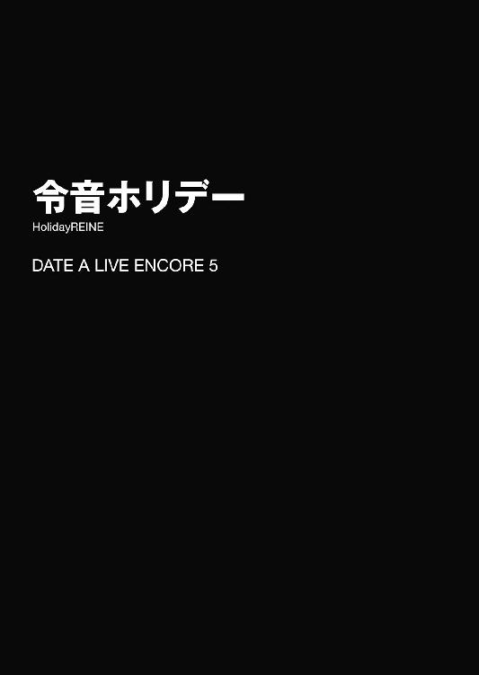
とある日の朝。村雨令音は一人、街を歩いていた。
長い髪を無造作に纏めた、二〇歳くらいの女である。すらりと長い手足に、モデル顔負けのプロポーション。顔立ちも非常に端整ではあるのだが......彼女を見た者にその第一印象を問えば、恐らく一〇人中九人は、見るからに不健康そうな白い肌と、目の下に広がった分厚い隈を挙げるだろう。
実際、大通りの端をふらふらと行く令音の姿は、サナトリウムから脱走してきた病人か、目覚める時間を間違えてしまった吸血鬼のようにしか見えなかった。
とはいえ彼女が身につけているのは、くたびれた病衣でもなければ黒のナイトドレスでもなく、淡い色のカーディガンに灰色のコートである。ポケットから縫い跡だらけのクマのぬいぐるみが顔を出し、令音の歩調に合わせてぷらぷらと手を揺らしていた。
そう。今日は〈ラタトスク〉解析官の仕事も、来禅高校物理教師の仕事もない、久しぶりのオフの日だったのである。
「......さて。どこから回ろうかな」
令音は小さく呟くと、ゆっくりとした動きで辺りを見回した。
休日の街並みには、様々な音が飛び交っている。行き交う車のエンジン音とクラクション。走り回る子供たちの声と、それを注意する母親の声。まだ朝方だというのに喧嘩をするカップルの怒声。街宣車からは昨今の政治を憂う声が鳴り響き、ビルに設えられた大モニタからは、ナントカ国の王女が来日中というニュースが流れていた。
とはいえ、令音自身に関わりのあるようなものはない。令音が街に出てきていたのも、豪華なランチを楽しもうとか、どこかに遊びに行こうというわけではなく、足りなくなっていた生活必需品を買い足すために過ぎなかった。
「......ああ、そういえばシャンプーが切れかけていたな。それと......歯ブラシもそろそろ買い換えよう」
令音は必要なものを整理すると、小さくうなずいてから再び道を歩き出した。
と──そのとき。
「......ねえ！ そこのあなた！ ちょっとだけお時間いいかしら！」
背後から、そんな甲高い声が響いた。
が、令音はさして気にせず、そのまま道を歩いていった。
「ちょ、ちょっとちょっと！ 無視することないじゃないの！」
令音が数歩歩いたところで、背後にいた人影が、前方に回り込んで道を塞いでくる。口調と声からは想像できないような、大柄な男性である。短く刈り込んだ髪に派手な色のスーツ、そしてやたらと腰をくねらせる動きが特徴的だった。
そこで初めて、令音は自分が声をかけられていたことに気づいた。
「......ん？ 私かい？」
「他に誰がいるのよう」
もー、というように、男性が肩をすぼめて「いやいや」をする。体格の割に可愛らしい動きだった。
「......何かご用かな？」
令音がゆらりと首を傾げながら問うと、男性はあごに手を当てながら、令音の全身を矯めつ眇めつ眺め回してきた。
そして、数十秒のあと、
「──うんっ！ イイ！ 実にイイわっ！」
そう言うと、男はスーツの内ポケットから一枚の名刺を取り出してきた。
そこには装飾過多な文字で、『アルトプロダクション 金剛寺かおる』と書いてあった。
「アタシ、こういう者なんだけど......あなた、モデルとかやってみる気、ない？」
「......ん？」
令音は、再びゆっくりと小首を傾げた。
◇
「......あれ？」
街を歩いていた五河士道は、不意に立ち止まった。
理由は単純。視線の先に、見知った少女の姿があったからだ。
小柄な体軀に、黒いリボンで二つ結びにした髪。──士道の妹・五河琴里である。
その琴里がなぜか、壁の陰に身を隠すようにしながら、通りの方を窺っている。その姿は、浮気調査を依頼された探偵か、さもなくばストーカーを思わせた。
「何やってんだ、あいつ......」
琴里の様子を不思議に思い、ゆっくりとその背に近づいていく。
「おい、琴里」
「ふぎゃッ!?」
士道がポン、と肩に手を置くと、琴里は猫のような声を発して身体を震わせた。
「な......し、士道！ 何よ一体？」
「いや、そりゃこっちの台詞だっての。何してんだよこんなところで」
士道が言うと、琴里はハッと目を見開き、慌てた様子で士道の首根っこを摑んで壁の陰に引っ張ってきた。
「わっ！ な、何すんだよ琴里」
「しっ。いいから、ちょっと静かにして」
言いながら、琴里が再び通りの方を覗き込む。
士道は不審そうな顔をしながら、琴里に倣うようにそろそろと通りを覗き込んだ。
するとそこに、見知った女性の姿を発見する。──〈ラタトスク〉解析官にして琴里の親友、村雨令音だ。
「令音さん......？」
と、そこで士道は気づいた。令音の向かいには、やたらと腰をくねらせる大柄な男が立ち、何やら話をしていたのである。
耳を澄ますと、雑踏に紛れて、二人の声が微かに聞こえてくる。
「......いや、私はモデルとか、そういったものに興味はないのだが......」
「あぁん！ そんなこと言わないでっ！ 実は今日、仕事入ってた子がインフルエンザでダウンしちゃって撮影に穴が開きそうなのっ！ お願い、アタシを助けると思って！」
どうやら、あの男が令音をモデルにスカウトしているらしい。士道は驚いたように目を丸くした。
「へえ、モデルだってさ。凄いな、令音さん。まあ、あれだけ綺麗ならなあ」
「......何言ってるのよ！」
士道の言葉に、琴里が苛立たしげな声を上げた。
「な、何だよ」
「確かに令音は美人だしスタイルいいし、スカウトくらいあってもおかしくはないけど......あれって本当のスカウトだと思う？」
「ど、どういうことだ？」
士道が問うと、琴里は真剣な表情を作りながら続けた。
「......よくあるケースじゃない。モデルになりませんか、とか、有名人に会えますよ、とか謳って、撮影料やレッスン料を取る詐欺みたいな」
「ああ......なるほど」
確かに、その手の詐欺はよく耳にする。少なくとも、今令音の前にいるスカウトマンと思しき男は怪しさ満点だった。
「いえ、それならまだマシよ。言葉巧みに連れて行かれた先で、下着同然のきわどい服着せられて写真撮られたりだとか、いいねーもうちょっと脱いでみようかー言われたりだとか、あまつさえ一八歳未満お断りのモザイク入り映像作品に出されたりだとかッ！」
「お、落ち着け、琴里......！」
にわかに興奮し始めた琴里を宥めるように肩を押さえる。琴里は未だ息を荒くしながら、再び令音の方に視線を向けた。
「......とにかく、そういう悪人に騙されないか心配なのよ。ほら、令音っていつもボーッとしてるし、そういう手合いには絶好のカモっぽく見えるじゃない」
......なんだか酷い言いようであるが、まあそれだけ琴里も令音のことが心配なのだろう。
と、士道と琴里がそんな会話をしている間に、令音とスカウトマンの方も話が進んでいるようだった。
「お願い！ ホント！ お洋服着て立ってるだけでいいからっ！」
数瞬の間考え込んだあと、令音がやれやれといった様子で首肯する。
「......まあ、それくらいなら」
令音はああ見えて、押しに弱くお人好しなところがある。困っていると言われ、断りづらくなったのだろう。......琴里の心配が少しわかった士道だった。
「ホント!? ありがとう、恩に着るわ！ じゃあさっそく、こっちよ！」
「......ああ」
言って、令音とスカウトマンが通りを歩いていってしまう。
「お、おい、二人が行っちまうぞ。いいのか？」
「いいわけないでしょ。令音は〈ラタトスク〉の大事な解析官よ。私の大事な友だちよ。本当にまともな仕事なのか、ちゃんとチェックさせてもらうわ......！」
「でも、どうやって。建物の中に入られたら、さすがに追えないぞ？」
士道の言葉に、琴里はフンと鼻を鳴らした。
「──私を、誰だと思ってるの？」
琴里はそう言うと、士道の手を引いて、ひとけのない路地裏の方へと歩いていった。
「──って、おまえ、ここまでやるか？」
数分後。士道と琴里がいたのは、天宮市上空一五〇〇〇メートルに浮遊する空中艦〈フラクシナス〉の中にある、琴里の執務室だった。
そう。琴里は士道を引っ張ってひとけのない場所まで歩くと、そこから転送装置を使って〈フラクシナス〉の中へと移動したのである。
「既に自律カメラを令音のもとに飛ばしてるわ。この方法ならどこにいようと監視できるし、この最新型カメラには小型スタンガンが搭載されているから、いざというときは対象をビリッとさせることも可能よ。ま、その分バッテリーの消費が激しいから、いつもの任務には向かないんだけどね」
「そ、そりゃすげえな......」
士道は頰に汗を垂らしながら苦笑した。令音が心配なのはわかるが、まさかここまでやるとは思っていなかったのである。
「さ、じゃあ早速映像出すわよ。士道はその辺に座ってて」
言って、琴里が机の上の端末を操作し始める。すると数秒後、その画面に自律カメラから送られてきた映像が映し出された。
──ブラとショーツのみを身につけた、半裸状態の令音の姿が。
「ぶ......ッ!?」
「な......っ！」
突然の光景に、士道は思わず咳き込み、琴里は顔を戦慄の色に染めた。
「や、やっぱりかぁぁぁぁッ！ あの変態男、このスタンガンで後遺症残るまで泡吹かせてやる......ッ！」
「お、落ち着け琴里！ 周りをよく見ろ！ 部屋に令音さんしかいないし、服が掛かってるだろ!? これ、更衣室だって！」
「は......っ！」
士道が叫ぶと、琴里は冷静さを取り戻したように目を見開いた。
「そ、そうよね......モデルだもの。着替えくらいするわよね......。ちょっと焦ったわ。騙されるにしても令音脱がされるの早すぎない？ とか思ったわ......」
「ま、まあ、いくらなんでもな......」
士道と琴里は、力なくあははと笑いあった。
「──って、何普通に見てんのよ士道ぉぉぉぉぉッ！」
「理不尽ッ!?」
琴里が放ったコークスクリューパンチが、正確に士道の頰を捉える。士道はその場にもんどり打って倒れ込んだ。
「な、何すんだよ琴里......」
「うっさい！ ちょっと目瞑ってろ！」
叫び、琴里が両手で士道の目を塞いでくる。また殴られてはかなわない。士道はとりあえず大人しくしていることにした。
すると数分後、琴里の手が外される。
「......着替え、終わったみたいよ」
「はいはい......っと」
士道は目を数度瞬かせると、光に目を慣らしてから画面を見やった。
画面の中の令音は、シックなドレスをその身に纏っていた。いつもの軍服や白衣とは違うその姿に、一瞬目を奪われてしまう。
令音が姿見で適当に自分の姿を確認してから、更衣室を出ていく。すると、外で待っていたらしいスカウトマン──名前は金剛寺かおるというらしい──が、『んまぁっ！』と声を上げた。
『やっぱり！ アタシの目に狂いはなかったわ！ ステキ！ ステキよ令音ちゃん！』
『......金剛寺さん、このアクセサリーはどう着けるのが正しいのかな』
『んもう！ そんな呼び方しちゃイヤ！ かおるちゃんって呼・ん・で！』
『......かおるちゃん』
そして、ヘアメイクとメイクを済ませ（目の隈は消えきっていなかったが）、令音の撮影が始まった。
撮影現場には、金剛寺、もといかおるちゃんの他にも数名の人間がいた。カメラマンとそのアシスタント、スタイリストにメイクアップアーティストといった具合である。それと、少し離れた位置に、何やら携帯電話を片手に難しげな顔をしているプロデューサー風の男も見受けられた。自律カメラに搭載された高感度マイクが拾った音声を聞くに、どうやら別の現場の演者が、急病で仕事に出られなくなってしまったようだった。
『はい、じゃあ撮っていきますよ。まずは椅子に腰掛けて、ちょっとアンニュイな感じでお願いしまーす』
カメラマンがポーズを指示し、様々な角度から令音の写真を撮り始めた。
現場には、ワイングラスやティーセット、果てはヴァイオリンなどの優雅極まるアイテムが小道具として備えられていた。それらを駆使しながら、さらに撮影が続いていく。
その光景をカメラ越しに見ながら、士道はほうと息を吐いた。
「なんか、ちゃんとした撮影みたいだな」
「......ん、そうね」
琴里も、険しかった表情を少しだけ緩めて首肯する。
「にしても、令音さんって凄いよな。モデルなんて初めてだろうに、なんかサマになってるし。──ていうかそもそもの話として、〈ラタトスク〉の解析官が、物理教師として高校にいること自体もの凄いんだよな。物理の授業なんて、誰にでもできるようなもんじゃないだろ？」
士道が言うと、琴里が肩をすくめながら笑った。
「令音ってば、どこで覚えてきたのか知らないけど、大体のことは上手くこなしちゃうのよね。〈フラクシナス〉の操舵も一通りできちゃうし、応急手当てとかも完璧だし。ここだけの話、うちの医務官より注射上手いのよ？」
「マジかよ。......でもなんか、わかる気がする」
「でしょ？」
琴里が、機嫌よさげにニッと唇の端を上げる。きっと、自慢の友だちを誉められて嬉しいのだろう。
士道と琴里がそんな話をしていると、カメラマンが新たな指示を発した。
『はい、じゃあ今度はこのヴァイオリンを弾いてるところをお願いします。──ああ、もちろん弾くフリで構いませんので......』
と──
瞬間、撮影現場の空気が一変した。
理由は単純。ヴァイオリンを手にした令音が、流麗な音楽を奏で始めたからだ。
その場の人間全員が、声を失う。迷いのない弓の流れ。別の生き物のような動きを見せる左手の指。その超絶技巧に、しばしの間撮影現場は演奏会の会場となった。
『......ん？』
皆の様子に気づいたのだろう。令音が演奏を止める。
『......別の曲の方がよかったかな？』
言って、令音が首を傾げる。士道はあごの先からぽつん、と汗が一滴落ちるのを感じた。
「......令音さんって、ヴァイオリンなんて弾けたのか......？」
「し、知らない......私も初めて聴いた......しかもパガニーニの『24の奇想曲』の第24番とか、素人が弾けるような曲じゃないわよ......」
琴里までもが驚愕の表情で画面の中の令音を見つめる。
すると、それから一拍遅れて、パチパチという拍手の音が鳴り始めた。
『ぶ......ッ、ブラボー！』
撮影を見ていたプロデューサーらしき男が、興奮した様子で令音のもとに歩みよる。
『素晴らしい演奏だった......！ かおるちゃんがスカウトしてきたという話だが、もしや名のあるヴァイオリニストだったのかな!?』
『......いえ、ただの高校教師ですが......』
『なるほど、音楽の！』
『......いえ、物理の』
令音が言うも、男は気にしていないようだった。そのまま、熱っぽい調子で続ける。
『何にしても、だ！ 君！ その腕を見込んで頼みがある！』
『......頼み、ですか』
『ああ。実はうちのプロダクションは、パーティーや式典向けに演奏家の派遣も行っているのだが......先ほど連絡があってね、今日派遣予定だったヴァイオリニストが急に熱を出して倒れてしまったようなんだ。どうやらインフルエンザらしい。このままでは、大事な仕事に穴が開いてしまう！』
『......そうですか。それはご災難で』
『ああ、とんでもない災難だ。だが、神は私を見捨てなかった！ まさかこんなタイミングでこんな素晴らしいヴァイオリニストに出会えるとは！ 奇蹟としか思えない！ お願いだ、この撮影が終わったら、もう一仕事受けてはもらえないだろうか！』
男が、歌劇を演ずるかのようなオーバーアクションで訴えかける。
『......しかし、私はプロでは』
『問題ない！ それは今君の演奏を聴いた私が保証するっ！ なに、そう構えるような仕事じゃない。ホテルのラウンジで少しばかり演奏をしてくれるだけでいいんだ』
言って、深々と頭を下げる。一拍遅れて、かおるちゃんやカメラマンたちも、触発されたように頭を垂れた。
令音はしばしの間困ったような顔をしていたが、数秒のあと、小さく息を吐いた。
『......まあ、それくらいなら』
『！ 本当かい！ ありがとう、恩に着るよ！ さあ、そうと決まれば準備だ！ 衣装はそのままでいい！ かおるちゃん、車の手配を！』
『は～いっ！』
かおるちゃんが甘ったるい声を発し、部屋から出ていく。
そんな光景を見ながら、士道と琴里は顔を見合わせた。
「......なんか、モデルになったと思ったらヴァイオリン奏者になっちゃったんだけど」
「そ、そうみたいだな......」
二人は、同時に頰をかいた。
◇
「......ふむ」
それからおよそ三〇分後。令音は、連れていかれたホテルのラウンジをぐるりと見回しながら、ぽつりと呟いた。
話に聞いていたよりも規模が大きい。ホテルはホテルでも、案内されたのはインペリアルホテル東天宮。国賓クラスの要人も宿泊することのある超一流ホテルである。実際、ラウンジにいる客たちは、日本人よりも外国人の方が多いくらいだった。
しかし、ここまで来てしまったものは仕方ない。令音は手早く済ませてしまおうと、ヴァイオリン（撮影で使用したものではなく、きちんとした拵えの物である）を手に、ラウンジの中央に歩いていった。
そして一礼をしてから、演奏を開始する。
とはいえ、ここにいる人物たちは、別に令音の演奏を聴きに来ているわけではない。あくまで主たる目的は、賓客との対話や休憩なのだ。令音が演奏を始めようというときも、まばらな拍手があるくらいだった。
この場で音楽はあくまで引き立て役。だから令音は、大人しい曲調の無伴奏ヴァイオリンソナタを選択した。
静かに、しかし美しく、曲を紡いでいく。
すると、時間が経つにつれ、ラウンジの客たちの反応が少しずつ変わっていった。
新聞や本を読むのを止め、あるいは会話を中断し、令音の演奏に耳を傾ける。
──そして、演奏が終わる頃には、先ほどとは比べものにならないくらいの拍手が、ラウンジを包み込んでいた。
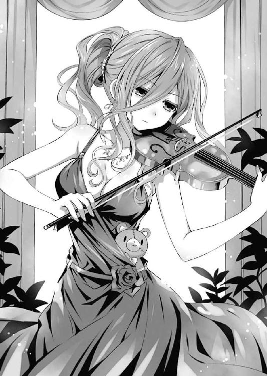
「............」
会話の邪魔にならないようにしていたつもりだったのだが、目立ちすぎてしまっただろうか。
......だがまあ、終わったことを悩んでも仕方ない。とにかくこれで仕事は終了である。令音は再度礼をすると、ラウンジから去っていった。
「令音ちゃーん！」
「ご苦労！ 最高だったよ！」
言って、ラウンジの袖で待っていたかおるちゃんとプロデューサーが出迎えてくる。令音はゆらりと頭を下げた。
「......どうも。これで仕事は終わりですね？」
「ああ。ありがとう、本当に助かったよ。──どうだろう、君さえよければうちのプロダクションに所属しないかい？ モデル路線でも、美人ヴァイオリン奏者でも、売り出しようはいくらでもある！」
「......いえ、今の仕事が忙しいので──」
と。
そこで、令音の言葉を遮るように、ぱちぱちと拍手をしながら一人の女性が歩み出てきた。
年齢や背格好は令音と同じくらいだろうか。シンプルだが仕立ての良い服と、どこか高貴な雰囲気をその身に纏った女性である。後方に、スーツを着た男たちを数名連れていた。
「ん？ なんだい君は──って、はッ!?」
突然現れた女性を不思議そうに見ていたプロデューサーが、驚愕したように目を見開く。
だが女性は気にした風もなく、微笑を浮かべながら唇を動かしてきた。
【──いい演奏だったわ。あなたはどちらのヴァイオリニスト？】
そして、日本語ではない言葉で、そんなことを言う。
「へ？ なんて......？」
言っている言葉が理解できなかったのだろう、かおるちゃんが首を傾げる。すると女性が、後ろに控えていた男の脇腹を肘で小突いた。
【ちょっと、早く通訳してよ】
【は、はい。少々お待ちを......】
男は体格に似合わぬ弱々しい声を発してから、一歩前に歩み出てきた。
「アー......ワタシ、オモウ、キョク......イイ」
そして、身振りを交えながら、拙い日本語でそう言ってくる。
どうやら日本語は得意ではないらしい。令音は女性に視線を移すと、口を開いた。
【......直接で構わないよ】
【！ オウ！】
令音が相手方の言葉で話しかけると、女性が驚いたように目を丸くした。
【凄いわねあなた。英語とかならまだしも、うちの母国語が話せる日本人なんて初めて見たわ】
【......日常会話くらいさ。しかし、これが母国語ということは、君はクレルの人かな？】
クレル王国は、南アジアに位置する小国である。母国語は国名と同じクレル語であるが、クレル以外ではほぼ使用されない言語であるため、わざわざ修める日本人は少なかった。
【ええ。本当は専門の通訳が何人かいたんだけど、今朝方からインフルエンザで寝込んじゃってね。残ってるのがこのカタコトＳＰだけってわけ。ごめんなさいね】
【......それは構わないが】
と、令音と女性が会話をしていると、かおるちゃんが肩をすぼめて首を振ってきた。
「んもうっ、二人で何をお話ししてるの？ 仲間はずれにしないで──」
「こ、こら！」
プロデューサーが、泡を食った様子でかおるちゃんの首根っこを引っ張る。
「わわっ、何するのようプロデューサー」
「おまえこそ、失礼な真似をするんじゃない！ テレビくらい見ておけ！ こちらのお方は──クレル王国第三王女、エリヤラット・ヴァーヤナディー様だッ！」
「え、ええっ!?」
かおるちゃんが、顔を驚愕の色に染める。令音は「......ああ」と手を打った。
【......そういえば、王女様が訪日中と言っていたな。これは失礼を】
令音が言うと、王女はあははと笑った。
【やめてやめて。堅苦しいのは嫌いなの。──それより、あなたは？】
【......村雨令音だ。これは本業ではないのだが、なりゆきでね】
ヴァイオリンを軽く持ち上げながら言う。すると、王女は興味深げに言葉を続けてきた。
【へぇ。本業は何をやってるの？】
【......高校教師だ】
【なるほど！ 語学系？】
【......いや、物理だ】
令音が訂正するも、王女はあまり気にしていない様子だった。
【ふぅん。──ねえ、それよりレーネ。お願いがあるんだけど】
【......お願い？】
【ええ。今日一日でいいから、私の通訳になってくれない？ さっき言ったようにウチの通訳が寝込んじゃって、困ってたのよ】
【お、王女!?】
王女の急な要請に驚愕の声を上げたのは、令音ではなく王女のＳＰだった。
【突然何を仰っているのですか！ 今会ったばかりの人物をお側に置くなどと......！】
【ええ？ いいじゃない、別に】
【よくありません！ もしかしたら、第一王女派の送り込んだスパイという可能性も......】
【さすがに考えすぎよ。いくら陰湿なあいつでも、私が誰に声をかけるかまでわかるわけないじゃない】
【しかし......】
【......何、あんたたち、私に逆らうの？】
王女がギロリと睨み付けると、ＳＰたちは戦くように後ずさった。
【──と、いうわけで、レーネ。通訳、やってくれるわよね？ ああ、それがいいわ。うんっ、そうしましょ、けってーい！】
有無を言わさぬ調子でそう言って、王女が元気よく手を上げる。令音は困ったようにむうと唸った。
【......悪いが、私は買い物に】
【えええー】
令音が返すと、王女は途端に駄々っ子のような声を発した。
【いいじゃないのー。お願い！ あなたしかいないのよお。今日一日！ 今日一日だけでいいから！】
言って、クレル式に礼をしてくる。さすがに、王女が一般市民にお願いをする光景は目を惹いたのか、ラウンジにいた客たちもギョッとした様子で視線を送ってきた。
「......むう」
令音はしばしの間考えを巡らせたあと。
【......まあ、それくらいなら】
小さなため息とともに、そう言った。
◇
「......おい。令音さん通訳になったぞ。しかも王女様の」
「......そうみたいね」
士道と琴里は、頰をぴくつかせながらモニタを見つめていた。......なんだかもう、数時間の間にいろんなことが起こりすぎて、事態が把握しきれなくなってきている。とんでもないわらしべ長者である。
ホテルから移動した令音は、王女一行と共に空港に向かうと、クレル王族専用と思しき小型飛行機に乗り込み、そのまま空に飛び立っていった。
ちなみに今の令音の服装は、黒で纏められた、パンツルックのスーツ姿だった。見るからに仕事ができそうなキャリアウーマンといった様相である。ポケットから覗くクマのぬいぐるみが、妙にシュールだった。
ファーストクラスどころではない、ホテルの一室のような機内で、令音が隣に座った王女の方を向く。
『......エリヤラット王女』
『ん？ あー、いいわよエリで。日本人にはそっちの方が発音しやすいでしょ？』
王女が軽い調子で笑う。ちなみに、士道も琴里もクレル語は話せないのだが、〈フラクシナス〉のＡＩがリアルタイム翻訳をしてくれているため、数瞬のラグはあるものの、二人の会話を聞き取ることができていた。
『......では、エリ。飛行機に乗るとまでは聞いていなかったのだが』
『あら、なに、レーネったら高所恐怖症？』
『......いや、そうではなく。あまり遠出になると困るのだが、どこへ行くんだい』
『キョートよ。国際会館で空間震問題に関する意見交換会が行われるの。私だけじゃなくて、アジア諸国からも代表が来るはずよ』
『......まさか、それの同時通訳を私にしろと？』
『そーだけど、言ってなかったっけ？』
『......初耳だ』
言って、令音がふうと息を吐く。しかしその顔からは、焦ったような様子はあまり見受けられなかった。
「......しっかし、令音さんってホントに何者なんだ？ クレル語とか、名前すら聞いたことがねえぞ。一体どこで覚えたんだ......？」
「さあ......でも確かに、人生でいつ使うのかわからないようなマイナー言語幾つか喋れた気がするわね......」
士道の言葉に、琴里が乾いた笑みを浮かべる。するとそれに合わせたように、画面の中のエリ王女が、令音に矢継ぎ早に質問を投げ始めた。
『ねえねえそれよりレーネ、なんでそんなに眠そうなの？ すっごい隈よね。あとそのクマのぬいぐるみ、ずいぶんボロボロだけどどうしたの？ 歳はたぶん私と同じくらいよね？ 恋人はいるの？ てかキョートって行ったことある？ 私は初めてなんだけど、どんなところ？ 会が終わったらキンカクとギンカクってやつ見てみたいんだけど一緒にどう？ 確かあれでしょ？ 名前を呼ばれて返事をすると吸い込まれちゃうんでしょ？』
『......質問は一つずつにしてもらえるかな』
どうやら、エリ王女は令音がいたく気に入ったらしい。まあ、同年代で同じ言葉を話せる異国の友人というのは、彼女にとって得がたいものなのかもしれなかった。
「......ま、でも琴里。ここまで来ちまったら、逆にもう安心なんじゃないか？ なんてったって王女付きの通訳だぜ？」
「そ、そうね。いくらなんでもこれ以上、何か起こるとも思えないし......」
──と、琴里が言いかけた、その瞬間。
『わ、わわっ!?』
『......ん？』
突然、ガクンと機体が揺れた。テーブルの上に置かれていたグラスが床に落ち、派手に砕け散る。
『大丈夫ですか、王女！』
『え、ええ......でも一体どうしたの？』
王女が問うと、それに合わせたように、勢いよく機内の扉が開いた。
『たっ、大変です！ 機長と副機長が突然倒れて......！』
『な......っ!?』
『ど、どうしたというのだ、一体！』
『とにかく、医務官を早く！』
『駄目だ、医務官はインフルエンザで寝込んでいたので東京に置いてきてしまった！』
『なんてこった、こんなときに！』
『......私でよければ、診てみようか。あいにく、免許はないがね』
『レーネ!? あなた、そんなこともできるの!?』
『......まあ、それくらいなら』
令音が、ＳＰについてコックピットの方に歩いていく。
そんな様子を見ながら、士道と琴里は頰をぴくつかせた。
「......なあ、琴里」
「......何よ、士道」
「俺の認識が間違ってなければ......何か起きてるみたいに見えるんだが」
「奇遇ね......私にもそう見えるわ」
二人は、額に汗を浮かばせながら呟くように言った。
「......ふむ」
コックピットに入った令音は、操縦席の上で意識を失った機長と副操縦士の様子を見始めた。脈を測り、眼球運動を見、心音を確認する。
【どう、レーネ、何かわかった？】
【......詳しく調べてみないと断言はできないが、ただ眠っているだけのようだ】
令音が言うと、エリ王女は眉根を寄せた。
【はぁ？ フライト中にお昼寝ってこと？ ちょっと、ふざけないでよね!?】
エリ王女が機長の肩を摑み、その身体をぐらぐらと揺する。と、その際操縦桿か何かに触れたのか、機体も連動するように微かに揺れた。
【お、王女、おやめください！】
【墜ちちゃいますよ！】
ＳＰが泡を食ってエリ王女を止める。そんな様子を見ながら、令音はふむ、とあごに手を当てた。
【......機長と副操縦士、二人が同時に昏睡するとは考えづらい。遅効性の薬か何かを盛られた可能性があるな。ちょうどフライト中に、飛行機が操縦不能になるようにね】
【く、薬!? それってまさか......】
【......ああ。失礼だが、命を狙われるような心当たりは？】
令音が落ち着き払った声で言うと、皆が一斉に押し黙った。
だが、数瞬のあと、エリ王女が肩をすくめてみせる。
【──第一王女派の連中ね。姉貴の奴、継承権の序列が横並びなのが不満らしくて、私や下の姉貴を目の敵にしてるのよ。相変わらずやることが陰湿なんだから】
【王女、それは......】
【いいわよ、慣れてるし。ったく、そんなに序列が大事なのかしら。理解に苦しむわ】
エリ王女がやれやれと息を吐く。どうやら、王族には王族なりの苦労があるようだった。
【とにかく、今は飛行機をどうにかしないと。飛んでるうちはまだしも、着陸はそうもいかないでしょ。──あんたたち、飛行機の操縦は？】
言って、エリ王女がＳＰたちを見回す。ＳＰたちが一斉に首を横に振った。
【はァ!? あんたたち、そんだけいて一人も操縦できないの!?】
【そ、そう言われましても......】
【飛行機の操縦なんて特殊技能じゃないですか......】
ＳＰたちが情けない声を上げる。まあ、とはいえ彼らを責めるのも酷というものだろう。令音はふうと息を吐いた。
【......仕方ないね。私がやろう】
【レーネ!? まさか、そんなことまで？】
【......まあ、それくらいならね】
令音は小さくうなずくと、ＳＰの手を借りて、機長を椅子から降ろした。
そして空いた機長席に深く腰掛けると、ぐるりと視線を巡らせ、計器を見渡す。
非常時のため〈フラクシナス〉の操舵手順は一通りマスターしていたし、小型セスナくらいならば操縦したことがあったが、さすがに王族専用機の機長席に座るのは初めてだった。
「......なるほど」
いくつか見覚えのない装置もあったが......まあ、なんとかなるだろう。
令音はそう判断して、操縦桿に手を置いた。
【......そろそろ目的地だ。万一ということもある。座席について、シートベルトを締めておいてくれ】
【わ、わかったわ！】
令音の指示に従い、エリ王女たちが座席に戻っていく。
令音はそれを見届けてから、徐々に高度を落とし、機体からランディングギアを出した。
──ずん......と一瞬沈み込むような感覚が、全身を通り抜ける。
滑走路を走りながらブレーキをかけていき、徐々に減速。
数十秒後。飛行機は、完全に停止した。
果たして──王女の乗った飛行機は、一人の死者も出すことなく、着陸に成功したのである。
【レーネ！】
するとすぐに、コックピットの扉が開き、エリ王女が飛び込んできた。
【凄いわ、レーネ！ 最高よ、あなた！】
【......お誉めにあずかり光栄だ】
令音が答えると、エリ王女はさらに興奮した様子で続けた。
【ホント、あなたなんでもできるのね！ なんで学校の先生なんてやってるの？ にしても姉貴の奴、えらいことしてくれたわね。せっかく生き残ったんだし、証拠揃えて母上にチクってやるわ！ 何なら──】
と。
熱っぽい調子で喋っていたエリ王女が、突然その場に倒れ込んだ。
【......エリ？】
【お、王女!?】
【大丈夫ですかっ!?】
ＳＰたちが慌てて駆け寄る。令音はエリ王女を仰向けにすると、その額に手を当ててみた。
【......凄い熱だ。エリ、こんな体調で騒いでいたのかい？】
【あっはは......通訳のインフルエンザ......もらっちゃってたみたいね......】
エリが力なく笑う。令音は小さく首を振った。
【......せっかく京都まできたが、この調子では、会に出席するのは難しいね】
【だ、駄目よ。大事な会なの。欠席はできないわ】
【......しかし】
令音は困ったように眉根を寄せた。今のエリ王女の様子では、スピーチはおろか席に座っていることさえ困難だろう。
それに、懸念材料はそれだけではなかった。──第一王女派とやらの存在だ。
令音にクレル王室のいざこざなどはわからないが、少なくとも相手は、エリ王女の乗った飛行機を墜とそうとしてくるような人物なのである。会場でも何かを仕掛けてくる可能性は否定できなかった。
そんな令音の考えを察したのか、エリが苦しげに言葉を紡いでくる。
【私は......こんなことで公務に穴を開けるわけにはいかないの。もし失点を作ろうものなら、陰険な第一王女は間違いなくそこを突いてくるわ。......別に王位になんて興味はないけど、あの女だけは駄目。あいつにだけはクレルを任せられないわ......だから......！】
そこまで言ったところで、エリ王女が激しく咳き込む。──やはり、まともに公務を行えるような状態ではない。
「............」
令音は、しばしの間考えを巡らせたのち、ふうと息を吐いた。
【......確か、クレル式の正装では、公的な場でも顔にベールをかけることが許されていたね？】
【え......？ そうだけど......それが何か？】
【......幸い、君と私は、背格好がほとんど変わらない。顔立ちも、何となくではあるが似ている。上手くメイクをすれば、遠目からは気づかれないのではないかな？】
【......！ レーネ!? そ、それって......】
どうやら、令音の言っている意味を察したらしい。エリ王女が、驚愕に目を見開く。
【......ああ。私が君の代わりに出席しよう。それなら、問題ないだろう？】
【で、でも、レーネも気づいてるんでしょう......？ 飛行機で私を殺せなかった第一王女派が、何かしてくる可能性があるわ......私のせいでレーネを危険に晒すことはできない......！】
【......大丈夫さ。それくらいならね。それに......私も、その第一王女とやらが女王になるのはぞっとしないのでね】
令音は、エリ王女を安心させてやるように、頭にそっと手を置いた。
◇
「............」
「............」
〈フラクシナス〉内の執務室で画面を見つめながら、士道と琴里は頭痛を抑えるように額に手を当てていた。
それはそうだ。つい数時間前、街中でモデルにスカウトされたかと思った令音が、今や一国の王女様（の影武者）になってしまっていたのである。どんな偶然が重なればそんなことが起こるのか、こうしてカメラで様子を見ていなかったなら見当すらつかなかっただろう。
今画面に映し出されているのは、京都にある国際会館のホールであった。既に意見交換会は始まっており、会場内には各国の要人や記者たちが集まっている。
そしてその中に──クレル式の正装を纏った令音が、ごくごく自然に腰掛けていた。......ある意味、もの凄くシュールな光景である。
それだけではない。前の出席者のスピーチが終わると、会場にクレル王国第三王女、エリヤラット・ヴァーヤナディーを呼ぶアナウンスが流れた。
すると鳴り響く拍手の中、令音が壇上へ上がり、流暢なクレル語でスピーチを始めたのである。
その所作は完璧に気品あるお姫様そのもので、少なくとも、彼女が偽者であると疑っている人物は、会場の中には見受けられなかった。......本当に、何でもこなしてしまう人である。
だが、士道と琴里が無言になっている理由は、それだけではなかった。
「......なあ、琴里」
「......何よ、士道」
「王女様に化けて会議に出席って......なんだかものっすごく嫌な予感がするんだが......」
「......奇遇ね。私もそう思うわ」
二人は、まったく同時に頰に汗を垂らした。先ほど令音が言っていたように、第一王女派がエリ王女の命を狙って何かをしてくることは十分考えられる。
「大丈夫かな、令音さん......」
「うーん......一応、こっちも気をつけておきましょう」
「そうだな......まあ相手方も、こんな目立つところで王女を襲撃しようなんて思いはしないだろうけど......」
「そ、そうよね。それに、そう何度も映画みたいな出来事が起こってたまるもんですか。だいいち──」
が、琴里がそう言った、次の瞬間。
──パン！ と。
乾いた音が、会場に響き渡った。
どうやら、記者席にいた男が、壇上の令音に向かって発砲したらしい。
『うっ、うわぁぁぁっ！』
『警備は、警備は何をしているの？』
幸い銃弾は令音の服の裾を掠めて背後の壁に飛んでいったようだが、突然の銃撃に、会場が騒然となる。
「やっぱりかぁぁぁぁぁッ！」
「噓でしょもぉぉぉぉぉッ！」
五河兄妹は、二人揃って悲鳴じみた声を上げた。
記者に紛れていた男が、自分に向かって発砲してきた。
その事実を認識すると同時、令音は一瞬のうちに自分の置かれた状況と、周囲の様子を把握した。
壇上にいる自分と男との距離は、目算でおよそ一〇メートル。ＳＰたちが男を取り押さえようと駆け出しているが、逃げ惑う参加者たちに阻まれてしまっている。これでは、男が再び引き金を引く方が早いだろう。
「......仕方ないな」
令音は誰にも聞こえないような小さな声で呟くと、床を蹴って男の方へと走り出した。
令音とて、〈ラタトスク〉の機関員。いざというときのために、最低限の護身術は身につけている。それに、完全に男を無力化できずとも、時間さえ稼げれば、すぐにＳＰがやってくるだろうと判断したのである。
【なんだと......ッ!?】
さすがにその反応は予想外だったのか、男が驚愕の声を発してくる。──しかも、エリ王女たちと同じ、クレル語で。
国際会議の場で発砲、というだけでは目的が絞れなかったが、その言葉を聞いた瞬間に確信する。やはり、機長たちに薬を盛ったのと同じ一派だ。令音は姿勢を低くしながら、男に向かってさらに一歩踏み込んだ。
とはいえ、相手も暗殺者である。一瞬驚いた顔を見せはしたものの、すぐに冷静さを取り戻し、令音に銃を向け、引き金を引いてくる。
【死ねッ！】
「......、──」
パン！ という音が、再び会場内に響き渡る。
だが、その銃口は令音ではなく、天井の方を向いていた。
【あが......ッ!?】
男が、身体を痙攣させながら、白目を剝く。一瞬、ＳＰが男に向かって発砲したのかとも思ったが──違う。
どちらかというと......そう、まるで、目に見えない誰かに、強力なスタンガンを食らわされたかのような反応だった。
「............」
何が起こったのかはわからなかったが、好機である。令音は男に肉薄すると、そのまま腕を捻り上げて、地面に組み伏せた。
【れ......王女！ ご無事ですか！】
【......ああ、あとは頼むよ】
数秒後、ようやく駆けつけたＳＰにバトンタッチをし、ぱん、ぱん、と手を払う。
すると、その瞬間。万雷の拍手と、割れんばかりの大歓声、そして、凄まじい量のカメラのフラッシュが、会場内を包み込んだ。
──それから、およそ三時間後。
【レーネ......！】
令音が病室に入ると、ベッドに寝ていたエリ王女が身を起こし、名を呼んできた。
テロリストの乱入によって、会議が仕切り直しとなったため、令音は一旦会場から抜け出し、近くの病院に搬送されていたエリ王女のもとにやってきたのである。
......本当はもっと早く来られるはずだったのだが、お姫様がテロリストをやっつけてしまった、というセンセーショナルに過ぎる出来事にマスコミが食い付き、会場を出るのが遅くなってしまったのである。
とはいえ、令音はエリ王女ではない。至近距離でインタビューなどを受けてはボロが出る可能性があるため、どうにかやり過ごしてここまでやってきていた。
【......やあ、体調はどうだい】
【私の方はなんでもないわ......！ それよりレーネ！ 話は聞いたわ。あなたが無事でよかった......！】
エリ王女は感極まったようにそう言うと、がっしと令音の手を握ってきた。
【レーネ！ レーネ！ あなたは私の英雄よ。お願い。私の側近になってちょうだい。報酬は望むまま用意するわ！】
言って、懇願するように令音の目を見てくる。
しかし、令音は静かに首を振った。
【......ありがたいお話だが、それはできないよ。私には、やるべきことがあるからね】
令音の言葉に、エリは大きなため息を吐いた。
【そう......残念よ。あなたがそこまで言うんだもの。きっと......大事なことなんでしょうね。──でも、それじゃあ私の気が収まらないわ。何かお礼をさせてちょうだい！ ねえ、何か欲しいものはない？ 豪邸？ 土地？ 金塊？ 島？ 私に手に入れられるものなら、なんでも用意するわ！ 言ってみてちょうだい！】
エリが、キラキラした目で令音を見つめながら言ってくる。
令音はふむ、と数秒の間考えを巡らせ──言葉を発した。
【......ああ、そういえば、ちょうど欲しいものがあったんだ】
◇
翌日。士道と琴里は朝早くから〈フラクシナス〉の艦橋にやってきていた。
理由は単純。令音の顔を見るためである。
昨日、自律カメラを京都まで同伴させた二人だったのだが、テロリストが令音に銃口を向けた瞬間、カメラに搭載されたスタンガンを炸裂させたため、バッテリーが切れてしまい、そこからの情報が得られなくなっていたのである。
「......令音さん、ちゃんと来るよな？」
「と、当然じゃない。令音は〈ラタトスク〉の解析官なんだから」
士道の問いに答える琴里の声には、微かに動揺の色が窺えた。
しかしそれも当然だろう。令音は昨日、モデルになり、ヴァイオリニストになり、通訳になり、医者代理になり、パイロットになり、王女の影武者にまでなっていたのだ。その後のことはわからなかったが、〈ラタトスク〉よりも好待遇で彼女を迎えたいという話が出ていてもおかしくはない。
が──そんな琴里の心配をよそに、令音は、いつもと変わらぬふらついた足取りで、艦橋に現れた。
「......ん？ 今日は早いね、琴里。それにシンまで」
「令音さん......！」
「お、おはよう令音」
士道と琴里の反応に、令音は不思議そうに首を傾げた。
「......どうかしたのかい？」
「い、いや、別に......なあ琴里」
「そ、そうよ。なんでもないわ。......あ！ それより令音、昨日はオフだったでしょ。......ど、どうだった？」
琴里が、曖昧に過ぎる訊き方をする。
だが、士道に琴里を責めることはできなかった。あまりに色んなことが起こりすぎていたため、質問を絞れなかったのだろう。きっと士道でも、同じような言葉になってしまっていたに違いない。
「......昨日、か」
令音はあごに手を当てると、数瞬考えを巡らせるように小さく唸った。
そして、
「......いや、別に、いつも通りの休日だったよ」
あっけらかんとした様子で、そう言った。
「な──」
「え......？」
令音の言葉に、士道と琴里は目をまん丸に見開いた。
令音の様子はあまりに自然すぎて──本当のことを言っても信じてもらえないと思ったのか、話すのが面倒だったのか......それとも、文字通り『いつも』あんなことが起こっているのか、判別が付かなかったのである。
「......？ なんだい、二人とも」
令音が、キョトンとした様子で小首を傾げる。
その際、無造作に纏められた彼女の髪から、普段よりも高級そうなシャンプーの香りが漂った。
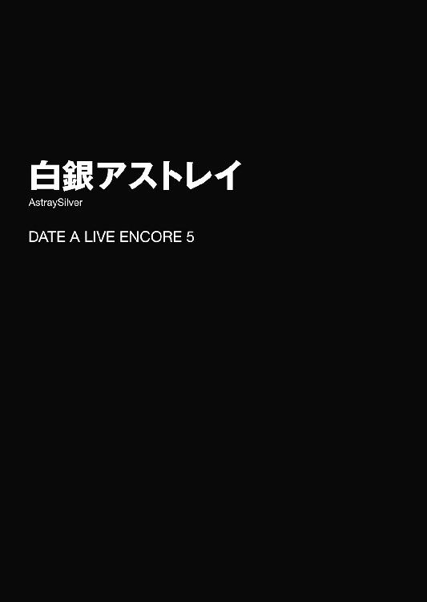
「............」
心臓の音が、やたらと大きく聞こえる。
五河士道は絶望的な心地で、どうにか動悸を抑え込むように胸元に手を当てた。
当然、骨と肉と布に阻まれた心音が体外に漏れ聞こえることなどあるはずはないのだが、今の士道には、それが自らの存在を『捕食者たち』に知らせてしまうアラームに思えて仕方がなかったのである。
そう。今の士道は、逃げることが叶わない檻の中に囚われた草食動物に等しかった。
──絶対的な絶望。もしも檻の中にいるのが草食動物のみならば、それは愛玩用や観賞用、研究用である可能性もある。だがその中に、獰猛な肉食獣がともに収められているとなれば──その草食動物には、別の名前が付くことになるだろう。
つまりは、餌。
或いは──肉、と。
「............っ」
それを自覚すると同時、士道は背後に視線を感じ──身体を震わせた。
もとよりここは、まるで冷蔵庫の中のように気温が低い。肩も指先も小刻みに震えている。だが今士道の身体を襲っている震えは、単純な寒さからくるもののみではなかった。
恐怖。士道が生物である以上避け得ない原始的且つ本能的な恐れが、士道の歯の根を鳴らしていたのである。
──士道の肩に、冷たい手が触れる。
「......ッ！」
瞬間。士道は声にならない悲鳴を上げ、身を竦ませた。
だが無慈悲な捕食者たちは、そんなものには構わず、士道ににじり寄ってきた。
「あ......あ......」
士道は消え入りそうな声を発しながら、なぜこのようなことになってしまったのかを思い返した。
◇
──ときは、数時間前まで遡る。
「おおっ！ これは凄いな！」
車から外に出た瞬間、十香が驚いたように声を上げ、辺りを見回した。
夜色の髪を揺らし、水晶の瞳をまん丸に見開きながら、興奮したように飛び跳ねる。
とはいえそれも無理からぬことだろう。何しろ今、士道たちの周りには、見渡す限りの銀世界が広がっていたのだから。
今士道たちがいるのは、天宮市から車を五時間ほど飛ばした場所にある、とあるスキー場だった。
そう。士道たちは休日を利用して、皆でスキーに来ていたのである。
野に、山に、美しい白銀の絨毯が敷かれ、陽光を浴びてキラキラと輝きを放っている。まるで映画のワンシーンにでも紛れ込んだかのような錯覚さえ覚える、幻想的な光景であった。
士道でさえそんな感想を持ってしまったのである。十香たちがその景色に感動を覚えるのは、当然と言えば当然のことだった。
「ほう！ 美しいではないか！ くく......この穢れなきキャンバスに、我が足跡を残してくれよう」
「阻止。させません。とうっ」
耶俱矢が足を踏み出そうとしたところに、一瞬早く夕弦が割り込む。
「あっ、夕弦！ 何すんだし！」
「微笑。油断大敵火がぼうぼうです」
「あーん、二人していちゃついてずるいですー！ 私たちもまぜてくださーい！」
「......!? ちょ、なんで私まで──」
十香だけではなく他の精霊たちも、その真っ白な景色にはしゃぎ始める。八舞姉妹が小競り合いをしているところに美九が参入し、ついでに傍観を決め込んでいた七罪までもが引き込まれた。
「まったく......」
と、後方からそれを見てやれやれと肩をすくめるのは、士道の妹・琴里であった。口にくわえたチュッパチャプスを揺らしながら、ふうと息を吐く。
「元気なのはいいけど、はしゃぎすぎないようにね？ 雪山は危険なんだから」
「うむ、わかっている！ ほら琴里、凄いぞ！ 雪がさくさくだ！」
「くわっ、十香まで！ 負けるかっ！ うおおおおお！」
「おお、凄いぞ耶俱矢！」
「......本当にわかってるのかしら」
琴里がため息を吐きながら頭をかく。それを見て、士道は小さく苦笑してしまった。かくいう琴里も、マイクロバスの中で付箋でいっぱいになったガイドブックを熱心に読んでいたのである。
「何よ」
「いや、なんでも。──それより、今日泊まるとこってあそこだよな？ 早いところ荷物を運んで準備を済ませようぜ。せっかく来たんだから、いっぱい滑らないともったいないだろ」
言いながら、前方を指さす。そこには、屋根に綺麗な雪化粧が施された、趣のあるコテージが建っていた。
「それもそうね。ほらみんな、自分の荷物運んでー」
琴里が首肯し、乗ってきたバスの車内を示す。
そう。いつもならば空中艦〈フラクシナス〉でひとっ飛びの距離なのだが、今は改修中のため、〈ラタトスク〉が用意したマイクロバスでの移動となっていたのである。
しかしそれによって皆が不満を口にしたかといえば決してそんなことはなく──むしろ皆、バスに揺られての旅を楽しんでいたようだった。
「はい、士道」
と、士道がそんなことを考えていると、背後から声をかけられた。見やると、いつの間にかそこに、士道のボストンバッグを持った少女が立っていることがわかる。肩口をくすぐる髪に人形のような面。──鳶一折紙。士道のクラスメートであり、士道が力を封印した精霊の一人である。どうやら自分の荷物を取るついでに、士道のものも持ってきてくれたらしい。
「ああ、ありがとう、折紙」
士道は礼を言って鞄を受け取り、「ん？」と首を傾げた。
「なあ折紙。なんだか俺の鞄に一度開けた跡があるんだが......」
「そんなはずはない。私はそんな痕跡など残さな──」
言葉の途中で、折紙がピクッと眉の端を動かした。どうやら、鎌をかけられたことに気づいたらしい。折紙の言うとおりそんな痕跡などは見受けられなかったのだが......念のため尋ねておいて正解だった。
「......やっぱりか」
「さすが士道。私のことを知り尽くしている。うれしい」
「誤解を招くようなこと言うんじゃねえよ......ったく」
言って士道は鞄を開けると、中を簡単に確認した。しかし、これといってなくなっているものも、増えているものも見受けられない。
「......別におかしなところはないな」
「当然。私は何もしていない」
「じゃあ何のために......」
「情報は力」
「............」
なんだかそれ以上聞くのが怖くなって、士道は無言で目を逸らした。
「さ、さて......みんな荷物は持ったか？」
言いながら、周囲を見回す。するとそれに応ずるように、大きな荷物を携えた精霊たちがこくりとうなずいた。
改めて見てみると、なかなかに大所帯である。士道をはじめとして、十香、折紙、琴里、耶俱矢、夕弦、美九、七罪、それに──
「ん？ そういえば四糸乃はどうした？」
皆の顔を確認するように辺りを見回していた士道は首を傾げた。居並んだ精霊たちの中に、四糸乃の姿がなかったのである。
「む、そういえば......」
「さっきまでいたんですけどねー」
「一体どこに......って、あれ、あそこ」
七罪が何かに気づいたようにコテージの方を指さす。するとそこには、右手に鞄、左手にウサギのパペットを着けた小柄な少女が、頰を紅潮させ目をキラッキラさせながら、皆を待っている姿があった。
「皆さん、急ぎましょう......！」
『ほらほらー、早くー』
四糸乃とパペットの『よしのん』が、急かすように言ってくる。
そういえば、このスキー旅行も元はといえば四糸乃の希望であった。先日、休みに皆でどこかへ遊びに行こうという話になった際、普段はあまり自己主張をしない四糸乃が、雪山に行ってみたいと希望を出してきたのだ。
四糸乃はもともと、水と冷気を操る精霊であった。もしかしたら、何か感じ入るところがあるのかもしれない。
大人しい四糸乃には珍しいはしゃぎっぷりに、皆は一瞬顔を見合わせると、誰からともなく微笑を浮かべた。
それからおよそ一時間後。各自部屋に荷物を置き、色とりどりのスキーウェアに着替えた士道たちは、リフトに乗って山の中腹にやってきていた。
比較的斜面がなだらかな初心者向けコースである。士道たちの他にも、経験が浅そうなスキー客がちらほらと見受けられた。
「さて......じゃあ滑っていくか。みんな、一通りの動作は覚えたよな？」
言いながら、ゲレンデに居並んだ精霊たちの方を見やる。すると皆が一様に、こくりとうなずいた。
そう。さすがに未経験者が多いということで、ここに来る前に、基本的な動作を一通り教わっていたのである。
「うむ、大丈夫だ！ では行ってくるぞ！」
元気よくそう言って先陣を切ったのは十香だった。大きなゴーグルを着けると、そのまま力強くストックで勢いを付け、白銀の斜面に二本の軌跡を描いていく。
「おおおおおおおお────っ！」
と、楽しそうな声を発しながら、十香の背が小さくなっていった。ただ真っ直ぐ滑っているだけだったが、初心者とは思えない思い切りのよさである。
「はは、凄いな。初めてだっていうのに」
「吞み込みが早いってのもあるでしょうけど、とにかく物怖じしないのよね」
士道の声に応えるように言ってきたのは、隣に立っていた琴里だった。赤のウェアに黒のスキー板という出で立ちで、悠然とゲレンデを眺めている。こちらも、初心者には見えない風格だった。
「確かに。十香はその辺凄いよな」
「ええ。怖がって急に止まろうとする方がかえって危険だもの。大事なのは思い切りよ」
言って、琴里が不敵に唇の端を上げる。
が、それからしばらく経っても、琴里はその場から動こうとしなかった。
「......で、琴里は行かないのか？」
「......っ！」
士道が言うと、琴里は小さく息を詰まらせた。心なしか、頰が赤く染まっている。
「い、行くわよ。でもほら、私は〈ラタトスク〉の司令官としてみんなを見守ってから......」
「大丈夫だって。ここは斜面もなだらかだし」
「いや、でも」
「ん？ もしかして琴里、滑れないのか？ 悪い悪い。中学の修学旅行でスキー行ってたからてっきり滑れるもんだと......」
「......！ す、滑れるに決まってるでしょ！ 見てなさい！」
琴里は士道の言葉に被せるようにそう言うと、ゴーグルを着け、ストックを握ってごくりとのどを鳴らした。
そして、腕に力を入れ、スキー板を大きなハの字にしながら、なだらかな斜面をゆっくりゆっくりと──それこそ、スキー板を外して歩いた方が速いくらいのスピードで──滑っていった。
「ほ、ほら！ どうよ！」
「いや、どうよって言われても......」
「だーりーん！」
と、士道が苦笑していると、不意に後方から声が響いてきた。──美九だ。
「私やっぱりちょっと怖いですー。なので改めてだーりんに手取り足取り......って、わ、わわわっ！」
スキー板を履いたまま歩み寄ってきた美九が、体勢を崩しよろめいた。
その際、どうにかバランスを取ろうとジタバタさせた手が、近くにいた琴里の背を押してしまう。
「へっ？ ちょ、まっ──うきゃぁぁぁぁぁぁっ!?」
そんな悲鳴を残して、琴里が素晴らしいスピードでゲレンデを滑っていく。
「こ、琴里!?」
「ああっ、琴里さん！ すみませんー！」
美九が謝るも、もはや琴里には聞こえていなかった。十香に勝るとも劣らぬ速さで、琴里の背が小さくなっていく。そして比較的平らな場所に抜けたあと、バランスを崩して顔面から派手に倒れ込む。
「あいつ......苦手なら苦手って言えばいいのに。......念のため様子見てくるか。俺、先に行くけど大丈夫か？」
「はい。ゆっくり滑れば大丈夫だと思うので、だーりんは琴里さんのところに行ってあげてくださいー」
「おう。じゃあ無理せず来いよ」
士道はそう言うと、ストックで勢いをつけ、琴里の描いた軌跡を追うように斜面を滑り降りていった。
士道もそこまでスキーが得意というわけではないが、以前修学旅行でやったのを身体が覚えていたため、初心者コースであれば人並みに滑ることができていた。ほどなくして、雪まみれになった琴里のもとに辿り着く。
「おーい、大丈夫か？」
「う、うぐ......」
琴里はよろよろと身を起こすと、差し出された士道の手を握ってようやく立ち上がった。身体についた雪を払い落とし、拗ねたような顔をしながら視線を逸らす。
「......ふん、何よ。笑いたかったら笑いなさいよ。いつも偉そうなこと言ってる司令官がスキーのひとつも滑れないなんて、可笑しくてたまらないでしょ」
「別にそんなこと思ってねえよ。誰にだって得手不得手はあるだろ。それに、みんなスキーは初めてなんだ。みんな一緒に滑れるようになっていけばいいじゃねえか」
「士道......」
士道の言葉に、琴里は小さく呟くと、少し頰を赤くしながら腕組みした。
「そうよね。みんな初めてなんだし──」
だが、琴里が言いかけたところで、折紙が、アルペンスキーの選手を思わせる見事なフォームで、素早く斜面を滑り降りてきた。
シャッ、と弧を描くようにスキー板を滑らせてその場に停止し、ゴーグルを上げてふうと息を吐く。なんとも絵になる動作だった。
「............」
それを見て、表情が和らぎかけていた琴里が無言になった。慌ててフォローを入れるように声を上げる。
「ほ、ほら、折紙はもともと陸自のＡＳＴ所属だったし、スポーツ万能だったじゃないか。これくらいできてもおかしくないだろ？」
「......そ、そうね。仮にも自衛隊員だったものね」
琴里が、自分を納得させるようにこくこくとうなずく。
しかし、それに次ぐようにして、今度はスノーボードに乗った八舞姉妹が、互いに競い合うようにしてゲレンデを滑ってきた。
しかも、ただ滑っているだけではない。複雑な軌跡を描きながら、スピンやドライブなどのグランドトリックを華麗に、しかも二人で左右対称に決め、まったく同じタイミングでゴールする。
「かか、どうやら腕は鈍っておらぬようだな、夕弦よ」
「同意。耶俱矢も技のキレが落ちていないようですね」
言って、二人が拳をカッカッと打ち合わせる。
「............」
それを見て、琴里がさらに無言になった。
「こ、琴里？ よく考えろ。ほら、耶俱矢と夕弦は昔から二人で色んな勝負してたじゃないか。多分スノーボード対決とかもしてたんだよ」
「......え、ええ、わかってるわ。そうよね。あの二人ならあれくらいできてもおかしくないわよね......」
琴里が、頰をぴくぴくと揺らしながらも、どうにか首肯する。
すると今度は、左手にゴーグル付き『よしのん』を着けた四糸乃が、八舞姉妹と同じくスノーボードでやってきた。
『よしのん』で片手が使えなくなるためスノーボードを選択することは当然と言えば当然だったのだが、普段の四糸乃の印象とそのワイルドなスタイルがあまりにミスマッチに思えたのだろう。琴里が「な......ッ!?」と息を詰まらせた。
しかも、四糸乃は初めて扱うであろうスノーボードを華麗に操ると、耶俱矢や夕弦に勝るとも劣らないトリックを決め、皆のもとにやってきた。それを見た十香や八舞姉妹が、ぱちぱちと拍手をする。
「凄いぞ四糸乃！ こんなことができたのだな！」
「あ、あの......えっと、〈氷結傀儡〉に乗るのと感覚的には似ていたので......」
『ふふーん、雪や氷の上では四糸乃は無敵だよー？ 今度はスケートでもいってみるー？』
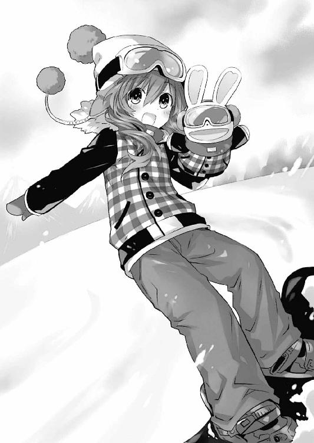
四糸乃が恥ずかしそうに、『よしのん』が得意げに言う。
「............」
琴里が、悲愴な表情のまま無言になった。
「いや、あの、琴里？ あんまり気を落とさないで......」
と、士道が琴里を慰めようとしていると、斜面の上から、先ほどの琴里のような悲鳴じみた声が響いてきた。
「ギャーッ！ どいてどいてどいてぇぇぇぇぇっ！」
そしてその声と同時、琴里目がけて、雪の塊が転げ落ちてくる。
「な......」
スキー板を履いていた琴里は、咄嗟に避けることもできなかったのだろう。そのまま巨大な雪玉に追突され、再び雪まみれになってその場に倒れ込んだ。
それと同時、その衝撃で割れた雪玉の中から七罪の姿が現れる。どうやら滑り出したはいいものの、斜面の上の方で転んで、そのまま雪だるまを作るような要領でここまできてしまったらしい。
「お、おい、大丈夫か!?」
士道は慌てて叫ぶと、二人を助け起こした。
「う、うーん......」
「あいたたた......」
琴里と七罪が今し方ぶつけたと思しき額をさすりながら身を起こす。と、目が合ったところで七罪が気まずげに視線を逸らした。
「......ご、ごめん......」
「............」
申し訳なさそうに言う七罪に、しかし琴里は声を荒らげることもなく──
ただ、はしっ、と七罪を抱きしめた。
「ふ、ふぇっ!?」
よほどその行動が予想外だったのだろう。七罪が、素っ頓狂な声を上げる。しかし琴里は構うことなく、その身体をぎゅうと抱きしめ続けた。
「そうよね。普通はそうよね。ありがとう七罪。一緒に、少しずつ進んでいきましょう......」
「えっ？ はっ......えっ!?」
七罪は未だに意味がわからないといった様子で、目を白黒させていた。
遅れてやってきた美九がそれを見て、「あらー」と目を輝かせた。
◇
それからしばらくの間、士道たちは雪山を存分に楽しんだ。
初心者組はなだらかなコースで練習を重ね、折紙や八舞姉妹といった上級者たちは、もっと難度の高いコースへと移動していた。
四糸乃や十香は初心者とはいえ十分上級者コースで滑ることができる実力を持っていたのだが、琴里や七罪、美九が気がかりなようで、士道と共にマンツーマンで指導に当たっていた。
その甲斐あってか、三時間も練習した頃には、皆滑る姿が様になってきたのだった。......まあ、琴里専属の十香コーチは「考えるな、感じろ」の感覚型であったため、琴里はニュアンスを摑むのにだいぶ苦労したようではあったけれど。
「──ふう、みんなかなり上手くなったじゃないか。これならもう少し傾斜のあるコースに行っても大丈夫そうだな」
「ええ、おかげさまで。──とはいえまあ、あとは明日にしましょうか。少し雲行きも怪しくなってきたし」
言って、琴里がゴーグルを外しながら空を見上げる。確かに空には先ほどまでなかった分厚い雲が広がり、風も吹き始めていた。山の天気は変わりやすいというし、ここは念のため、早めに戻った方がいいだろう。士道はこくりと首肯した。
「それもそうだな。──おーい、みんな。一旦戻るぞー」
士道が声を上げると、辺りにいた四糸乃と七罪、十香が顔を向けてきた。
「あれ？ 美九はどこに行ったんだ？」
「あ......さっき、もう一滑りしてきます、ってリフトに乗って......」
四糸乃がゲレンデの上の方を見ながら言う。士道はぽりぽりと頰をかいた。
「なるほど......ま、でもそれならすぐに降りてくるだろ。俺が待ってるから、みんな先に行っててくれ。折紙たちもまだ上にいるみたいだし、残りのみんなを集めてから俺も戻るよ」
「ん......わかったわ。でも、くれぐれも気をつけてよね？」
「おう、わかってるって」
士道がヒラヒラと手を振ると、琴里は皆を引き連れてコテージの方へと歩いていった。
「さて、あいつらは......っと」
琴里たちの背を見送ってから、ゲレンデを見上げる。初級者コースと上級者コースは木々を挟んで隣り合っているため、美九も折紙たちも、滑り終えたあとは士道のいる場所に到着するはずだった。
するとほどなくして、隣の上級者コースから、折紙と八舞姉妹が、競うようにして滑り降りてきた。相変わらず見事な動きである。
そして、すぐにその場に士道がいることに気づいたのだろう。三人は示し合わせるでもなく、士道の方へとやってきた。
「士道」
「くく、出迎えご苦労。どうだ我らの滑りは。思わず雪の女神も見とれようというものであろう」
「質問。他の皆はどうしたのですか？」
「ああ、もうだいぶ時間も経ったし、天気も怪しいっていうんで、先に戻ったよ。美九がきたら、俺たちもコテージに行こう」
士道が言うと、三人はなるほど、というように首肯した。
「確かに、随分と雲が出てきた」
「ふむ......って、あ、雪降ってきたじゃん」
「驚愕。本当です。風も強くなってきました。早めに戻った方がいいかもしれません」
三人の言うとおり、天候がみるみるうちに悪化していった。スキー場の各所に設置されたスピーカーから、危険なのですぐ施設に戻ってください、というアナウンスが流れてくる。
「おいおい、マジかよ。美九のやつ何やって......ん？」
と、士道が心配そうに山を見上げると、そこに、小さく薄紫色のウェアが見えた。──美九の着ていたものである。
一瞬、士道は美九がこちらに滑ってきているのだと思った。だが、違う。美九がいるのは、整備されたゲレンデの上ではなく、そこから立ち入り禁止のフェンスを越えた山肌だったのである。しかも、美九がいる辺りから恐ろしい急斜面になっており、足でも滑らせようものならそのまま森の中に転落してしまいそうだった。
「あいつ、あんなところで何してるんだ？ 危ないじゃ──」
言葉の途中で、士道は息を吞んだ。視界が悪いせいで見えづらかったが、そこにいたのは美九一人ではなかったのだ。美九が片手で木に摑まりながらもう片方の手を伸ばし、山肌から転げ落ちそうになっている小さな女の子の手を握っている。
「あれは──！」
「まさかあやつ、子供を助けようと......!?」
「無謀。あれでは自分まで落ちてしまいます」
夕弦がそう言った瞬間、美九は女の子を引っ張り上げると、手近な木に摑まらせた。だがそれと同時、踏ん張っていた足下の雪が崩れ、美九の身体が木々の間を転げ落ちていってしまった。
「わっ、きゃぁぁぁっ!?」
「み、美九!?」
士道は慌てて声を上げた。しかし美九は止まることなく、急斜面の下にある森の中へと消えていってしまった。
「く──！」
考えるより先に、身体が動く。士道はストックで勢いを付けると、美九の消えた方向へと滑っていった。
「士道、待って。危険」
「追跡。──仕方ありません、追いましょう。しかし、全員で行くのは上手くありません。耶俱矢はあの女の子を助けてあげてください」
「わ、わかった！ 気をつけて！」
背後からそんな声が響いたかと思うと、折紙と夕弦があとを追ってきた。
「ふ、二人とも......！」
「士道だけで追っては、二次遭難の危険がある。私も行く」
「首肯。士道は考えなしに動き過ぎです。まあ、そんなところも、らしいのですが」
「......すまん、恩に着る......！」
士道はのどから絞り出すように礼を言うと、立ち入り禁止のフェンスを越え、木々の間を進んでいった。
そして、どれくらい行った頃だろうか──前方に、うつぶせに倒れ込んだ美九の姿を発見する。
「美九！ 大丈夫か？」
士道が側に滑り寄ると、美九が弱々しく顔を上げた。
「あ......だーりん......あの子は......」
「大丈夫、耶俱矢が助けにいった」
「そうですか......う──っ」
言葉の途中で、美九が苦痛に顔を歪める。
「ど、どうした？」
「見せて」
士道が狼狽していると、隣から折紙が進み出てきて、美九の足を触り始めた。
「骨に異常はない。きっと、雪と木がクッションになったのだと思う。でも、一人で歩くのは多分困難」
「そうか......わかった。折紙、夕弦、俺と美九のスキー板をお願いしてもいいか？」
士道はそう言ってスキー板を外すと、美九の前に背中を向けるようにしてしゃがみ込んだ。
「ほら、美九」
「えっ、だーりん......」
「何だよ、こういうときは遠慮するのか？」
士道が苦笑しながら言うと、美九は頰を紅潮させて「じゃあ、失礼しますー」と背中に負ぶさってきた。
瞬間、分厚いスキーウェア越しでもはっきりとわかる美九の胸が、ぎゅうと士道の背に押しつけられる。緊急事態ということでそれを失念していた士道は思わず「うっ」と声を発した。
「あっ、重かったですかー？」
「いや......そういうわけじゃ」
「............」
「............」
士道が曖昧な返事を返すと、理由を察したらしい折紙と夕弦が半眼を作ってきた。
「士道、私も足を挫いてしまった」
「同調。実は夕弦も」
「......はいはい、コテージに戻ったらな」
美九を背負い直し、足に力を入れて立ち上がる。コースから随分離れてしまったため、今自分たちがどの辺りにいるのかはわからなかったが、とにかく元来た道を戻っていけば、先ほどの場所に出られるだろう。
しかし、問題は天候だった。士道たちが美九を追って山肌を滑り降りている間に、雪と風はどんどん強くなり、吹雪の様相を呈していたのである。
「く......ろくに前も見えないぞ、これじゃあ」
「私が先導する。士道はあとをついてきて。夕弦はしんがりを」
「了解。任せてください、マスター折紙」
折紙と夕弦がそう言って、士道と美九を挟み込むように前後に展開する。
「だ、大丈夫なのか、折紙」
「雪中訓練は済ませている。任せて」
言って、折紙が前方を見据えたままビッと親指を立ててくる。士道は苦笑しながら「......さすが」と呟いた。
「むう......シドーたちは遅くはないだろうか」
一足早くコテージに戻った十香は、みるみるうちに悪化していく空模様を窓越しに眺めながら、表情を不安げな色に染めていた。
それはそうだ。窓の外はもう吹雪と言ってもいいくらいに荒れているのに、まだ士道たちは戻ってきていなかったのである。
「まあ、ここからそんなに離れてるわけでもないし、大丈夫だとは思うけど......」
と、琴里が言ったところで、コテージの入口の方から、扉を開け放つような音が聞こえてきた。
「！ シドーか!?」
十香は目を見開くと、玄関の方に駆け出した。そのあとを追うようにして、琴里と四糸乃、七罪もやってくる。
するとそこに、頭と肩に雪を積もらせた耶俱矢が、小さな女の子の手を引きながら立っている姿があった。──しかし、その後ろには、他に誰の姿も見受けられない。
「む......耶俱矢？ 皆はどうしたのだ？ その娘は？」
十香が言うと、耶俱矢は濡れた犬のようにブルブルブルッと身体を揺すって玄関に雪を落とすと、慌てたように声を上げてきた。
「た、大変なの！ 美九が──」
耶俱矢は普段の大仰な口調も忘れ、状況を簡潔に説明してくる。
それを聞いて、十香たちは目を丸くした。
「な、なんと......！ シドーたちが雪山に!?」
「ったく、何してるのよ一体......！」
言ってから、耶俱矢と一緒にいた女の子に目を向ける。
「あなたはとりあえず、コテージの中で待っててくれる？ あとで親御さんに連絡してあげるから」
「は、はい。あの......」
「何？」
「あのお姉さんを......助けてあげてください。私、何のお礼も......」
女の子が、今にも泣き出してしまいそうな顔をする。琴里は女の子の頭をわしわしと撫でると、「任せときなさい」と言って、コテージの奥にある暖炉の方へと女の子を連れていった。
そして、難しげな顔で戻ってくると、少し小さな声で続ける。
「──とにかく、スキー場に連絡しましょう。念のため、〈ラタトスク〉の方でも捜索隊を組むわ」
「......で、でも、この天気の中、まともに捜索なんてできるの......？ いや、そりゃ〈ラタトスク〉の捜索隊ならなんとかなるんだろうけど、〈フラクシナス〉って今改修中なんでしょ？ 捜索隊がここに来るのにどれくらいかかるの......？」
琴里の言葉に、七罪が難しげな顔をしながら言う。琴里が「くっ」と眉根を寄せた。
確かに七罪の言うとおりである。しかし、そうこうしている間にも吹雪はどんどん強くなっていった。このまま放っておいては、士道たちが凍え死んでしまうかもしれない。
「一体、どうすれば──」
すると、それまで無言だった四糸乃が、恐る恐るといった調子で手を挙げてきた。
「あ、あの......琴里さん」
「？ どうしたの、四糸乃」
「その......私に、やらせてもらえませんか？」
「へ？」
琴里が首を捻っていると、四糸乃は耶俱矢の脇を通って、吹雪くコテージの外へと出た。冷たい結晶が横殴りに、彼女の小さな身体を襲う。
しかし四糸乃は微塵も狼狽えることなく、祈るかのような姿勢を取ると、静かに唇を動かした。
「お願い......士道さんたちを助けるために......力を貸して」
すると、その言葉に応えるように、四糸乃の身体が淡く発光し──その身を、外套のような霊装が覆っていった。
そしてそれに次いで、四糸乃の目の前に、大きな白いウサギの人形が現れる。
「あれは──」
「......〈氷結傀儡〉!?」
十香と琴里は驚愕の声を上げた。そう。天使〈氷結傀儡〉。水と冷気を操る、四糸乃の天使である。
四糸乃は小さくうなずくと、〈氷結傀儡〉に跨がり、その背に両手を差し入れた。
瞬間、〈氷結傀儡〉の目に赤い光が灯り、その周囲に、冷気の壁が展開される。
まるで、〈氷結傀儡〉を中心に目に見えないドームが形成されたかのような光景である。これならば確かに、この吹雪の中でも進むことができそうだった。
「四糸乃！」
「......！」
十香が名を呼ぶと、四糸乃が無言でこくりとうなずいた。
「く......さすがに、きついな......」
美九を背負いながら吹雪の中を歩いていた士道は、身を刺すような寒さに思わず顔をしかめた。手足の先にはもうとうに感覚がない。このままでは、コテージに辿り着く前に力尽きてしまうかもしれなかった。
「──士道、見て」
と、そこで、前方を歩いていた折紙が声を上げてきた。士道はその声に反応するように顔を上げ──「あっ」と目を見開いた。
士道たちの前方に、何やら小さな山小屋のようなものが見受けられたのである。
「助かった」
折紙は短く言うと、山小屋の方へと歩いていき、至極自然な動作で鍵を壊すと、士道たちを呼ぶように手招きをしてきた。
「お、おまえなあ......」
「道徳心より命が大事」
確かに折紙の言うとおりである。あとで弁償しますと心の中で唱えてから、士道は山小屋の中に入っていった。
吹雪が凌げるだけでも、随分と身体は楽になった。屋根に天井とはありがたいものである。ゆっくりと美九を降ろし、ふうと息を吐く。
とはいえ、寒いことに変わりはない。このままでは低体温症になってしまいかねなかった。
「な、何か、暖房器具はないのか......？」
「発見。薪ストーブがあります。ですが、肝心の火種がありません」
「火種......か。ライターなんて持ってないしな......」
士道が困り顔をしていると、折紙が積んであった薪をストーブにくべたのち、ポケットを探り、そこから小さなペンライトとポケットティッシュ、そしてガムを包んでいたと思しき銀紙を取り出した。
「折紙......？」
「任せて」
折紙は短く言うと、ガムの銀紙を細く千切り、それでペンライトから取り出した乾電池の両端を押さえた。すると、銀紙の中央辺りから煙が立ち始める。
そしてその種火をティッシュに引火させてから、薪ストーブの中に放り込む。程なくして中の薪に火が点き、士道たちの影をゆらゆらと揺らし始めた。
「おおっ!?」
「感嘆。素晴らしいです、マスター折紙」
「きゃー！ 折紙さんたら素敵ー！」
士道たちが口々に言うと、折紙は表情を変えぬまま小さくうなずいた。
「サバイバルの初歩」
とにかく、これでどうにか暖を取れそうである。士道たちは薪ストーブを囲むように集まって手をかざした。
まもなくして、冷え切っていた手がようやく動くようになってくる。士道は安堵の息を吐いた。
「はあ......ありがとうな、折紙、夕弦。おまえらがいなかったら俺と美九は凍死してたかもしれない」
「本当にありがとうございますー。だーりんと一緒っていうのは吝かではないですけど、やっぱり天に召されるのはベッドの上がいいですー」
士道と美九が言うと、折紙と夕弦は気にするな、というように首を振った。
「一晩も経てば、雪も止むはず。天候が落ち着くまではここにいた方がいい」
「同意。それに、耶俱矢が琴里たちに知らせてくれているはずです。そのうち助けも来るでしょう」
「ああ、そうだな。まあ一晩くらいならなんとかなるだろ」
「そうですねー。うふふ、不謹慎かもしれませんけど、なんだかワクワクしませんか？ よく漫画とかであるじゃないですかー。吹雪の中、山小屋に閉じ込められた男女の話とか......」
と。
美九は、言葉の途中、何かに気づいたようにピクッと眉の端を揺らした。
否、美九だけではない。折紙と夕弦も同様に小さく表情筋を動かし、視線を交じらせ合う。
「今は非常に危険な状況。生き残るために最大限の努力をする必要がある」
「首肯。たとえ何が起ころうと不可抗力です」
「ですよねぇ。生き残るためですもんねー......」
「ん......？」
士道は一瞬呆けたように三人を見ていたが、そこでとあることに気づき、ウェアのポケットを探って携帯電話を取りだした。
そう。もし電波が通じているなら、琴里に連絡を取っておいた方がよいと思ったのである。
「お、弱いけどアンテナ立ってるな。これなら......」
士道は呟きながら、アドレス帳に登録されている琴里の番号を呼び出した。
「シドー！ どこだー！」
「ゆーづーるー！ 聞こえてたら返事しなさいよー！」
もうすっかり日が落ち、暗くなった雪山の中、琴里たちは〈氷結傀儡〉の結界に守られながら士道たちを捜し回っていた。
とはいえ、吹雪のため視界は悪く、声も上手く通らない。捜索は非常に難航していた。
「くっ......さすがに簡単には見つからないわね」
「諦めちゃ......ダメです。今度はそっちを捜してみましょう」
「ええ、そうね。──っと、あれ？」
と、琴里は不意に声を発すると、ウェアのポケットを探った。──ポケットの中に入れてあった携帯電話が振動したのである。
先ほど捜索隊の要請を出した〈ラタトスク〉からかとも思ったが──違う。携帯電話の画面に記された名前は『おにーちゃん』となっていた。
「士道!?」
「なに!?」
「士道さん......ですか？」
琴里の声に反応し、十香たちも驚愕を露わにしてくる。琴里は慌てて電話を耳に押し当てた。
「士道！ 今どこにいるの!? みんな無事なんでしょうね!?」
『ああ......悪い、心配かけたな。こっちは全員無事だ。耶俱矢はコテージに着いたか？』
「ええ、女の子も無事よ」
『そりゃあよかった......こっちはなんとか山小屋を見つけてな。ストーブもあるからどうにか凍え死ぬことはなさそうだ。とりあえずここで吹雪が止むのを待つよ』
電話口から、存外元気そうな士道の声が聞こえてくる。琴里は安堵の息を吐くと、十香たちに視線をやった。
「無事だって。今はみんなで山小屋に避難してるらしいわ」
「おお、そうか！」
「かか、やはり幸運の女神に愛されておるな」
「よかった......です」
精霊たちが、ホッとしたように息を吐き、緊張していた表情を緩ませる。
だが、なぜだろうか。七罪だけが、何やら難しげな表情をしていた。まあ七罪は普段からどこか不機嫌そうな顔をしているのだが......どうも様子が違う。琴里は不審そうに首を捻った。
「......？ どうしたのよ、七罪」
「いや......士道たち、山小屋に避難してるって言ったわよね。吹雪が止むまで」
「ええ、そうだけど......」
「......それって、あの折紙、夕弦、美九と一緒に、密室で一晩過ごすってことよね？」
「は......っ!?」
言われて、琴里は身を震わせた。
確かにその通りである。今士道と共にいるのは、アルティメットストーカー折紙と、彼女を師と仰ぐデモンズシード夕弦、そして恐怖のクレイジーペロリスト美九なのである。
そんな三人と士道が密室で、しかも身体を寄せ合う言い訳まで与えられた、吊り橋効果抜群のスリリングな状況で、一晩。
そんなもの、虎とライオンと豹がいる檻に、震えるウサギを放つようなものだった。よしんば命が助かったとしても、貞操が危ない。琴里は泡を食って携帯電話を持つ手に力を込めた。
「士道！ 気を付けて！ 意志を強く持つのよ!?」
『は？ 何を言って......って、ん？ お、おい、なんでそんなにくっついてくるんだ折紙。夕弦に美九まで......!?』
「士道!? 士道ッ!?」
『わっ、ちょっ、待──』
そこで、電話が切れる。
琴里はツー、ツー、という無慈悲な音を響かせる電話を手にしながら、顔面を真っ青にした。
「ど、どうしたのだ琴里。シドーに何かあったのか？」
十香が、不安そうに問うてくる、琴里は携帯電話を乱雑にポケットにしまい込むと、バッと顔を上げた。
「このままじゃ士道が危ないわ！ 四糸乃！ もっと結界を広く張れる!? 一刻も早く士道を見つけ出さないと大変なことになるわ！」
「わ、わかりました。頑張ってみます......！」
琴里の言葉に応え、四糸乃が慌てたように〈氷結傀儡〉を操作する。〈氷結傀儡〉がグイと顔を上げ、毛を逆立てるようにしながら身震いを始めた。
すると、その瞬間。辺りから、ゴゴゴゴゴゴ......という凄まじい音が響いてくる。
「へっ？」
予想外の事態に、琴里は目を丸くした。
「お、おい、おまえら、一体──」
士道は一瞬呆けたように三人を見ていたが、すぐにハッと息を詰まらせた。
この山小屋の中にいるのは、士道、折紙、夕弦、美九の四人のみ。天候にもよるが、最悪の場合この四人で夜を明かさねばならないのだ。
そう。──精霊たちの中でも超行動派である、この肉食系三人娘の中で。
『............』
三人の『捕食者』が、ゆっくりと視線を士道に向けてくる。
士道は、幾分か温かくなったはずの背筋に、冷たい汗が流れるのを感じた。
「──士道。寒くはない？ 人肌が必要？ 何平方センチ必要？」
「......だ、大丈夫だよ。折紙がストーブを点けてくれたおかげで暖かいし......」
「提言。士道、服が濡れたままでは身体が冷える可能性があります。今のうちに全部脱いで乾かしておくべきかと」
「い、いや、ほら、スキーウェアは一応防水だから、そこまででは......」
「ねぇだーりん、日中ずっと滑ってましたし、疲れたんじゃないですかー？ 私が番をしてますから仮眠を取ってもいいんですよー？」
「み、美九こそ眠いんじゃないか？ 俺が起きてるから、美九から眠ってもいいぞ？」
右から折紙が、左から夕弦が、そして後ろから美九が、囁くように言ってくる。
正直なところ、ストーブが点いているとはいえまだまだ寒いし、雪と汗で濡れている服は乾かしたいし、横になれば数秒で眠りにつけるくらいには疲れているのだが、もしどれか一つでも許そうものなら、緊急避難という大義名分の下に、彼女らに何をされるかわからなかった。
しかも厄介なことに、種族保存本能というのだろうか、先ほど命の危機に瀕していたものだから、何やらいつもよりも妙に心臓がドキドキと脈打っていた。加え、低体温と眠気による判断力の低下も手伝ってか、なんだかもう折紙たちに身体を預けてしまいそうになる。
「......いや、いや......」
士道はゆらゆらと首を振ると、自分を鼓舞し、心を強く持った。
しかし、そんな抵抗をあざ笑うかのように、折紙が士道の手を取ってきた。
「やはり、手が冷たい。温めた方がいい」
「お、おう、そうだな。もっとストーブにかざした方がいいな」
「それでは埒があかない。任せて」
言って折紙は士道の手をホールドしたまま、おもむろにウェアのファスナーを開け始めた。そして士道の手を、自分の服の中に導こうとしてくる。
「なッ、ど、どこで温めようとしてんだよ？」
「手が冷えているときは脇の下に挟むのが効果的」
「だとしても！」
士道は顔を真っ赤にしながら叫びを上げた。
すると今度は、夕弦が何かを思い出したようにポケットを探り、包装された飴玉を取り出してきた。
「質問。士道、お腹は空きませんか」
「え？ ま、まあそりゃあ減っていないって言ったら噓になるけど......」
士道が答えると、夕弦は小さくうなずきながら飴玉を自分の口に放り込んだ。そして、数秒の間口の中で転がしたあと、口を開けてくる。
「じょうと。えんりょなくろうぞ」
そしてそう言って、まるでキスをするかのように目を伏せる。その淫靡な様に、士道は思わず汗を滲ませた。
「い、いや......やっぱり減ってない。全然減ってない！」
士道が叫ぶと、今度は背後から、何やら優しい子守歌が聞こえてきた。
「ねぇーんねーんこーろーりーよ、おーこーろーりーよぉー......♪」
「............」
その穏やかな旋律に、士道はなんだか瞼が重くなるのを感じた。
だが、次いで耳に届いた「うふふー......おやすみなさい、だーりん」という声を耳にして、ハッと目を見開く。
「............、はっ！ み、美九！ それはなんか反則じゃないか!?」
「えー？ 何がですかー？ 大丈夫ですよ、皆さん寝ちゃっても。あとは私が、ちゃぁーんと見張ってますからねー」
言って、美九がにっこりと微笑む。士道は顔を戦慄の色に染めた。
とにかく、眠るわけにはいかない。この状況下で、三人の前に無防備な姿を晒すだなんてこと、恐ろしくてできるはずがなかった。
「......！ あれは」
と、折紙が何かを見つけたように短く言うと、山小屋の隅に歩いていき、とあるものを持って戻ってきた。
「士道、毛布があった。──一枚だけ」
『......！』
折紙の言葉に、夕弦と美九がピクッと反応を示す。
そして三人でアイコンタクトを取ると、じりじりと士道に迫ってきた。
「これで暖を取るべき」
「同意。天の恵みです」
「でも、一枚しかないなら仕方ないですねー。みんなで入らないと不公平ですよねー」
「四人でも、身体を密着させればギリギリ収まるはず」
「提案。それでは、少しでもスペースを作るために服を脱ぎましょう」
「きゃー！ 夕弦さんナイスアイディアですー！」
そして相談を終えた三人が、同時に士道の方に視線を送ってくる。士道はビクッと肩を震わせた。
「も、毛布は三人で使ってくれていいぞ。俺はこのストーブで十分だから──」
士道が言いかけたところで、折紙がのしのしと山小屋を出ていくと、外から両手いっぱいに雪を持ってきて、ストーブの中に放り込んだ。
「いいッ!?」
すぐにシュゥゥゥ......と音を立てて、ストーブの中の火が消えてしまう。士道は思わず目を剝いた。
「な、何してんだよ折紙！ これじゃ朝までもたないぞ？」
「低体温からくる判断力の低下が原因。折紙ミステイク」
「どう見ても明晰な状態なんですけど!?」
「大丈夫。電池も銀紙も残っている。湿気った薪を取り出してまた火を点ければ問題ない」
「......そ、そうか、なら早く......」
「ただ、それをするためにはストーブの中を乾かす時間が必要。その間、どうにかして身体を温めないと」
折紙はそう言うと、毛布を手に取り、ふぁさっと広げてみせた。
するとその動作に合わせるように、夕弦と美九が折紙の両脇に鎮座する。
そして三人で毛布を肩にかけ、スキーウェアのファスナーを下ろして白い胸元をはだけながら、士道を手招きしてきた。
「さあ、士道」
「誘引。来てください、士道」
「あったかいですよー、だーりーん」
折紙が、夕弦が、美九が、優しい声で言ってくる。
ストーブの火が消え、一気に温度が下がってしまった小屋の中で、その呼び声には抗いようのない力があった。
「あ......ああ......」
一度暖かな火の温度を知ってしまった士道は、弱々しく声を上げると、よろよろとした足取りで、誘蛾灯に導かれる虫のごとく、三人の方へと手を伸ばした。
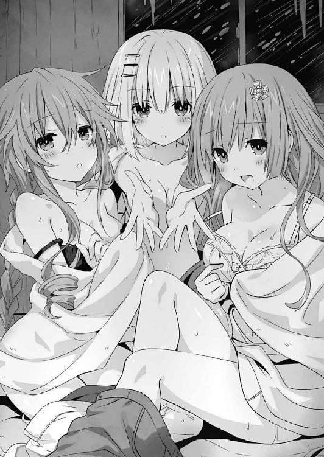
が、その瞬間。
突如、ゴゴゴゴゴゴゴ......という地鳴りのような音が辺りに響いたかと思うと、山小屋がミシミシと軋み始めた。
「な、なんだ......!?」
突然の異常に、ぼんやりとしていた士道の意識が覚醒する。するとそれに合わせるように、凄まじい音を立てて山小屋の屋根が吹き飛んだ。
「いいッ!?」
思わず、目を剝く。それはそうだ。家屋に比べれば簡単な造りになっているのかもしれないが、小屋の屋根など、そう簡単に壊れるものではない。それこそ──記録的な台風でも起こらない限りは。
だが不思議なことに、見晴らしのよくなった天井からは、いつまで経っても吹雪が吹き込んで来なかった。
その代わり──外に、奇妙なものが見える。
「あれは......雪だるま......？」
士道は呆然と呟いた。そう。ウサギの耳のようなものがついた雪だるまが、外に聳えていたのである。
士道の言葉に疑問符が付いたのは当然と言えば当然だった。何しろそれは、全高数十メートルはあろうかという超巨大な雪の塊だったのである。
「一体、これは......」
「──シドー！」
と、士道が目を点にしていると、聞き知った声が響いてきた。
見やると、雪だるまの前に、十香や琴里たちの姿があることがわかる。その後方には〈氷結傀儡〉を顕現させた四糸乃がおり──それを中心とするように、冷気が渦を巻いていた。
そこで、士道は今起こっている現象をなんとなく理解した。
そう。四糸乃の〈氷結傀儡〉が、この辺り一帯に吹雪いている雪を全て吸い集め、巨大な雪だるまの形に生成していたのである。その証拠に、数百メートル先では未だ吹雪が続いていた。
どうやら、士道たちを助けにきてくれたらしい。まさに危機一髪である。士道ははあと安堵の息を吐いた。
だが。
「な──何してるのよ士道！」
士道の前方にいた折紙たちの姿を見てか、琴里が裏返った声を上げる。
「夕弦!? 折紙に美九まで......何その格好!?」
「......うわっ、そんなお約束な感じだったの......さすがリア充は違うわ」
「そんな......士道さん......」
「ち、違うんだみんな！ これは緊急避難というか、やむにやまれぬ事情が──」
士道はどうにか弁明をしようとした。しかし、その言葉の途中で、琴里がビッ！ と親指を下に向けた。
「......よしのん。ちょーっとだけ、頭冷やしてあげましょうか」
『はいきたー』
「ちょ──」
〈氷結傀儡〉からくぐもった声が響いたかと思った瞬間、上空から士道目がけて、どさっと雪が降り注いだ。
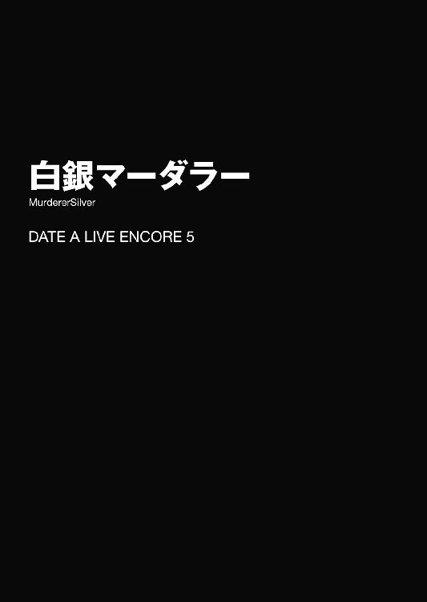
「ぱ......ぱ......ぱ......」
バスタオル一枚のみを身体に巻き付けた美九が、目の前に広がる光景を見ながら、ふるふると手を震わせた。
「ぱぁぁぁらだぁぁぁぁいすッ？」
そして大声でそう叫び、勢いよくバスタオルを取り払って『そこ』へと飛び込む。
──一糸まとわぬ精霊たちが集結した大浴場へと。
「ヘイシスター！ 今宵はイカしたメンバーを紹介しますよー！ まずはこの方夕弦さん！ ああっ、なんて豊満なバストッ！ このハリ！ ボリューム！ 形！ まさに世界の至宝と呼ぶに相応しいですー！ 私を惑わす深き業を持つ双丘！ 双丘の業ッ!?」
「驚愕。なんなのですかいきなり」
「お次はお隣、最強プリンセス十香さん！ きゃー！ やっぱり十香さんのプロポーションは完璧ですぅぅうぅっ！ このまま美術館に飾ってあってもおかしくありませんー！ 芸術のような美しさと少女の可愛らしさを併せ持つハイブリッドォォォッ！」
「うぬっ！ ど、どうしたのだ美九」
「はいはい次は夕弦さんと双璧を成す耶俱矢さんですよぉぉぉ！ 耶俱矢さんの魅力はなんといってもそのバランス！ 手のひらに収まらなさそうで収まる胸！ きゅっとくびれたお腹！ 美味しそうもとい可愛らしいお尻！ まさに黄金比！ ゴールデン耶俱矢！」
「それ褒めてんの!?」
「さあそしてお次は精霊界が誇るミス・スレンダー鳶一折紙嬢ぉぉぉぉ！ 自衛隊上がりの引き締まった筋肉で形作られた少女の艶めかしい肢体というギャップにもう出血多量ですぅぅ！ 衛生兵！ 衛生兵！ 誘宵美九殉死！ 二階級特進でありますっ！」
「............」
「さて次は我らがマスコット四糸乃すわぁぁんっ！ 小さいながらも柔らかそうなぷにぷにバディにもう私はメロメロですぅ！ 成長性は断トツＳクラス！ ああッ！ 一日ごとの成長記録を付けさせてくださいぃぃッ！」
「あ、あの......」
「そしてついに来た！ ちっちゃい司令、五河・膨らみかけ・琴里っ！ 思春期まっただ中のぴっちぴち素肌が眩しいですっ！ 四糸乃さんとはまた違ったぷりぷりバディにもう目は釘付けですぅぅぅっ！」
「またテンション高いわねー......」
「そして最後を飾るのは七罪さんですぅぅぅっ！ 抱きしめたら折れちゃいそうな華奢な魅力がたまりませんんんんん！ ああっ、その浮き出たアバラを一本ずつ舌でなぞりたい......っ！」
「気持ち悪い......ていうかこれ何の順番なの。ねえ何の順番なの」
「はふー」
ひとしきり皆のもとを巡った美九は、満足したように微笑み、湯船にぷかー......と浮いた。ちょうど皆の浸かっている湯の真ん中くらいに陣取り、周囲を見回すようにくるくると回りながらだらしない笑みを浮かべる。なんとも幸せそうな顔だった。
その様子を見て、周りの皆もようやくほうと息を吐く。
今精霊たちがいるのは、彼女たちが住む精霊マンションではなく、とある雪山に佇むコテージの大浴場であった。本来であれば近くに露天風呂もあったのだが、今はあいにくの吹雪のため室内の風呂に入っていたのである。
「にしても......元気ねえ、美九。昨日遭難しかかったっていうのに」
琴里が半眼を作りながら言う。美九は昨日、スキーをしている最中、崖から落ちそうになっている女の子を助けて、あわや遭難という事態になっていたのである。
幸い、皆の助けで事なきを得たが、確か足を挫いていたはずだ。
「あぁーん、そんなの、皆さんから漂う癒やしオーラの前ではかすり傷みたいなものですよー」
言いながら、美九が手をヒラヒラと振ってみせる。
「確かにそうみたいね。なんだかお風呂入る前より肌がつやつやしてる気がするわ」
「あー、わかりますー？」
美九がそう言って、自分の頰を撫でる仕草をする。琴里ははっと肩をすくめた。
「むう......」
と、入浴からどれくらい経った頃だろうか、十香が少し頭をくらくらさせるような仕草をしながら、ざぱっと湯船から上がった。
「少し長く入りすぎたか。のぼせてしまったぞ」
「あら、大丈夫？」
「うむ......大事ない。先に上がらせてもらうぞ」
「はーい、先にベッドで待っててくださいねー」
美九が手を振りながらそう言う。一部の精霊は苦笑し、一部の精霊は不思議そうに首を傾げた。
──そして、十香から遅れること十数分後。浴場に残っていた精霊たちも湯船から上がり、脱衣所で部屋着を着てコテージ内に戻っていった。
するとそこに、先に風呂から上がっていたらしい士道の姿があった。
「あ、士道」
「おお、琴里たちも今上がったのか」
「ええ。──あれ、十香は？」
琴里が問うと、士道は「ん？」と首を傾げた。
「いや、見てないけど......もしかしてもう寝ちまったか？」
「わ、私......見てきます」
士道が言うと、四糸乃が小さくうなずいた。その左手に装着されたウサギのパペット『よしのん』も、それに合わせるように首肯する。
『ちょっくら行ってくるねー』
「あ......四糸乃が行くなら私も......」
と、それに続いて、七罪が声を上げる。四糸乃が「ありがとうございます、七罪さん」と言うと、七罪が恥ずかしそうに頰を染めながら目を逸らした。
四糸乃と七罪と『よしのん』、二人と一匹が連れ立って階段を上り、廊下を渡って十香の部屋へと歩いていく。
「十香さん......大丈夫ですか？」
「......寝てるの？ 開けるわよ？」
言って、二人が部屋の扉を開ける。
そして。
「──きゃぁぁぁぁぁぁぁっ!?」
「ギャァァァァァァァァァッ！」
部屋の中を覗き込んだ二人が、まったく同時に、凄まじい悲鳴を上げた。
「な、何よ、どうしたっていうのよ」
「......！」
さすがに皆も異状を察知した。一斉に顔を上げ、バタバタと階段を上っていく。
「どうした、二人とも......、──ッ!?」
そして──開け放たれた扉から部屋の中を見て、硬直する。
しかしそれも当然だろう。何しろそこには、血で真っ赤に染まった空間が広がっていたのだから。
まるで扉一枚を隔てて、世界が変わってしまったかのような感覚。部屋の壁、床、天井に血がしぶき、その真ん中に、物言わぬ十香が横たわっていた。
「と、十香......!?」
「な、何よこれ......何なのよこれッ！」
その光景を見た皆に、動揺が伝播していく。
しかしそれは、今宵繰り広げられる血の惨劇の、ほんの序章でしかなかったのである。
◇
ごうごうという猛吹雪に、乱雑に扉を叩くような音が混じる。
それが響くたび、部屋にいる面々は、顔面を蒼白にしながらカタカタと身を震わせた。
しかしそれも無理からぬことだろう。何しろ今この部屋の扉を叩いているのは、世にも恐ろしい殺人鬼であったのだから。
──最初は、誰も本気にしていなかった。
この山にはかつて脱獄した殺人鬼が潜んでおり、猛吹雪が起こるたび、下山できなくなった観光客たちを狙ってコテージにやってくる、だなんて。
誰が聞いても質の悪い冗談か都市伝説である。実際、その話を誰かがもったいぶってしたときも、皆軽く笑っていた。
しかし、それから数時間後。二階の部屋で、血に塗れた少女の遺体が発見された。
部屋の窓は外から割られ、床には大きな足跡が残されていた。
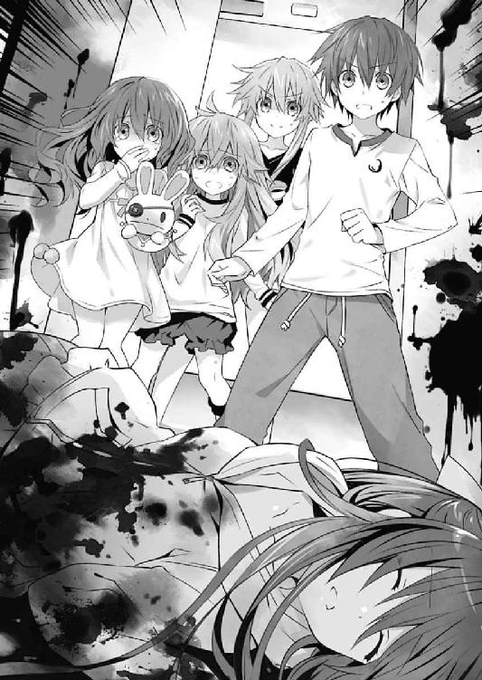
コテージに泊まっていた客たちはパニックになった。それはそうだ。少女を殺した殺人鬼が、建物の中に潜んでいるかもしれないというのである。
だが、外は猛吹雪。今外に出れば、下山はおろか途中で凍死してしまいかねない。
そうこうしているうちに、一人、また一人と宿泊客が殺されていった。
そして今──皆が集まった部屋の扉を、殺人鬼が荒々しく叩いていたのである。
扉の前にはソファや棚などでバリケードが作られていたが、そんなものがいつまで保つかはわからなかった。実際、扉の向こうから音が響くたび、それらは頼りなげに揺れてギシギシと軋みを上げていた。
しかしそれから数秒後。扉の向こうから音がしなくなる。
まさか、諦めて山に帰っていったのでは......？
皆の心の中にそんな希望が芽生えた瞬間、部屋の窓にぬっと巨大な影が現れ──
「──見づげだぁぁぁぁぁぁぁッ!!」
「おわっ!?」
「ギャーッ！」
「......っ！」
話の途中で不意に大声を発した耶俱矢に、士道たちはビクッと肩を震わせた。
皆が集まっていたのは、照明を落とし、懐中電灯の灯りのみになった部屋である。窓の外には雪が吹雪き、まさに今耶俱矢がした怪談話と同じような状況になっていた。
無論そんな光景が、士道たちの住んでいる東京都天宮市でそうそうお目にかかれるはずはない。
ここは、とある雪山にあるコテージの一室である。士道たち一行は、休日を利用して雪山にスキーに来ていたのだ。
今日は悪天候のため早めにスキーを切り上げてコテージに戻っていたのだが、耶俱矢が何か面白いことをしようと皆を部屋に集め、懐中電灯を巧みに使いながら怪談話を始めたのである。
「き......っ、ききき急に大声出すんじゃないわよ耶俱矢っ！ びっくりするじゃない！」
顔中に脂汗を浮かべた琴里が、必死に表情を取り繕いながら言う。自分では平静を装っているつもりらしかったが、どう見ても装いきれていなかった。そういえば、琴里はこういった怪談話の類が苦手だった気がする。
「う、うむ、驚いたぞ......」
「怖かった......です」
同様に、十香も驚いたように目を丸くし、四糸乃も小刻みに肩を震わせている。それを見てか、耶俱矢が満足そうに腕組みした。
「くく......御主等に我が伽は少々刺激が強すぎたか？ しかしそれも無理からぬこと。我が語りし物語は力ある言霊。幽世の空言を現世に顕す魔性の技なれば」
しかしそれに反して、部屋の右側にいる面々はまったく動揺していなかった。
「............」
「うふふー、そうですかー、それは怖いですねー」
「......えっと、うん、まあ」
「苦笑。耶俱矢が怪談話とは意外です」
折紙は話を最後まで聞いてもぴくりとも表情筋を動かしておらず、美九は話などあまり聞いていない様子で皆のリアクションを微笑ましげに見守り、七罪はなんだか最初からオチがわかっていたような調子で目を逸らし、夕弦に至っては耶俱矢を見て「......ぷっ」と含み笑いまで漏らしていた。
「な、何よ......」
「想起。以前行った肝試し勝負では途中で涙目になって夕弦に縋り付いてきたのを思い出しまして」
「こ、こら夕弦っ!?」
耶俱矢が顔を赤くしながら声を上げる。しかし夕弦はくすくすと笑いながら続けた。
「推測。きっとこの話もあれです。昼間地元の人に聞いた話が怖すぎて、夜中に一人でおしっこに行けなくなってしまったので、仲間を作ろうとみんなを集めたのです」
「ちょ......ッ、なに適当なこと言ってんのよっ！ 別にそういうわけじゃないし！ トイレくらい一人で行けるし！ ただ、他の誰かが行けないって言うんならついていってあげないこともないってだけで......」
耶俱矢がごにょごにょと口ごもる。それを見て、夕弦が一層可笑しそうに笑った。
「微笑。やはり耶俱矢は怖がりっ子です。明日の朝は、耶俱矢のベッドに見事な世界地図が描かれているかもしれません」
「ば......っ、誰が描くかっ！」
耶俱矢が飛びかかるも、夕弦はひらりとそれを避け、部屋を出ていってしまった。耶俱矢はすぐに床を蹴ると、その背を追って廊下に出ていった。
「待てこら、夕弦ぅぅぅぅっ！」
「逃走。逃げるが勝ちです」
そしてバタバタバタッとけたたましい足音が廊下から響く。〈ラタトスク〉が用意したコテージで、他に宿泊客がいないからいいものの、あの二人はどうも周囲の騒音に気を配らないところがある。士道ははあとため息を吐いた。
「まったく、相変わらずだな」
肩をすくめながら言ってから、よいしょと膝に手を突いて立ち上がる。
「まあ、そろそろ夕飯時だし、腹が減ったら大人しくなるだろ」
と、士道が部屋を出ようとすると、不意に服の裾が摘ままれた。──琴里だ。
「ん？ どうした、琴里」
「......いや、あの」
琴里は恥ずかしそうにキョロキョロと皆を見回したのち、声をひそめて士道の耳に顔を近づけてきた。
「......ちょっと、トイレ行きたいんだけど、ついてきてくれない......？」
◇
夕食後。士道は、満足げにお腹をさする十香とともに廊下を歩いていた。
コテージとはいうものの、士道たちが宿泊しているそれはかなり広い。それぞれ二階建て構造のＡ棟とＢ棟がＬ字型に連結しており、部屋数も一〇以上あった。それゆえ、食堂から皆の集まる共有スペースに戻るのにも、少し長めの距離を歩かなければならなかったのである。
「ふう......美味しかったな、シドー。あれは何という料理なのだ？」
そんな道中、先ほどの食事を思い返すように、十香が言ってくる。士道は首を傾げた。
「あれ？」
「あれだ。あの、白いスープのような」
「ああ、クラムチャウダーか。貝を使ったシチューみたいなもんだ。気に入ったなら今度うちでも作ってやるよ」
「おお、本当か！」
士道の言葉に、十香が目を輝かせる。士道は微笑みながら首肯した。
と、二人がそんな会話を交わしながら歩いていると、そこに横から小さな声がかけられた。
「......眷属たちよ。我が呼びかけに応えるがいい」
「ん？」
見やると、廊下の曲がり角に身を隠すようにして、耶俱矢が立っていることがわかった。何やら人目を避けるように肩をすぼませ、士道と十香に手招きをしてくる。
「......？」
士道と十香は目を見合わせると、それに従うように歩いていった。そしてそのまま、耶俱矢の部屋まで誘導される。
バタン、と扉を閉めると、耶俱矢はバッと身を翻し、大仰に手を広げてみせた。
「召喚に応じよくぞ参った、我が最強の眷属たちよ！」
「むう？」
「......えーと、で、何の用だ？」
十香と士道が不思議そうに首を捻ると、耶俱矢はコホンと咳払いをしてから続けてきた。
「......実は折り入って、二人に頼みがあるの」
「頼み？」
「うん......」
耶俱矢は少し気まずそうにうなずくと、その『頼み』の内容を伝えてきた。
「な......っ」
それを聞いて、士道は驚愕に目を見開いた。
「──『雪山の殺人鬼』が、本当にいるように見せる？」
「む......どういうことだ？」
「だから、さっき私が話した怪談、あるでしょ？ あれを本当に起こして、みんなを怖がらせたいの」
「な、なんでまたそこまでするんだ......？」
「決まってるでしょ！ 折紙や、美九、それに夕弦の鼻を明かすためよ......っ！ 怖いことが起これば怖がるのは当然ってわからせてやりたいの......！」
「おいおい......」
士道が苦笑すると、耶俱矢はバッとおおげさに頭を下げてきた。
「お願い！ 協力して！ こんなこと......眷属である二人にしか頼めないの！ 私を助けると思って......！」
「うーん......」
「むう......」
士道と十香は顔を見合わせたのち、しばらくうなってから、首肯した。
「仕方ないな。今回だけだぞ」
「まあ、耶俱矢がこんなに頼み込むなんてそうないしなあ......」
「！ ホント!? ありがとう！」
耶俱矢は、士道と十香の手を取ると、嬉しそうにそう言った。
──そして、現在に至る。
十香の部屋は血のりで赤く染まり、凄惨な光景が広がっている。......耶俱矢の指示通りではあるのだが、少々血をしぶかせ過ぎである気がしないでもなかった。この惨状、もし本当の血だとしたら明らかに頸動脈をやられている。あとで掃除をするのが大変そうだった。
まあとはいえ、士道も耶俱矢も、これで皆を欺けるとは思っていない。夕弦や美九ならまだしも、琴里や折紙がこの程度で騙されてくれるとは思えなかった。実際、十香は死んでなどおらず、血塗れで寝転んでいるだけである。胸元か手首にでも手を当てればすぐばれてしまうだろう。というかそれ以前に、この位置からでもよく見ると微かに胸が上下しているのがわかった。
しかし、それはそれで構わないのだ。十香には、誰かが近づいてきたらむくっと起き上がって驚かせてくれ、と言い含めてある。
そして、既に耶俱矢はポケットの中に『ドッキリ大成功』と書かれた紙を忍ばせていた。要は、一瞬皆を驚かせることができればＯＫだったのである。
「............」
士道がちらと目配せをすると、耶俱矢がニッと唇の端を上げてきた。──いい感じ、と言うかのように。
あとは折紙か琴里、欲を言えば夕弦あたりが十香の生死を確認しに近づき、派手に驚いてくれれば目的達成である。耶俱矢がワクワクしているのが、傍から見てもよくわかった。
──しかし。
「と、十香......？」
「そんな......噓でしょ......一体どうして十香が！」
「いやぁぁぁぁっ！ 十香さんっ!?」
なぜか、士道と耶俱矢の予想に反して、皆が十香の状況に疑問を持つことなく事が進み始めたのである。
「え？ いや、あの、みんな？」
耶俱矢が頰に汗を垂らしながら十香を指さすも、誰も聞いていなかった。折紙が深刻そうな顔をしながら口を開く。
「落ち着いて。現場を荒らしてはいけない。犯人の痕跡があるかもしれない」
「戦慄。犯人とは」
「詳しくはわからない。でも、明らかにこれは他殺。十香は、誰かに殺された」
「いや、折紙。もっとよく見てからの方がいいんじゃないか？ もしかしたらまだ生きてるかもしれないし......」
士道が促すように言うと、折紙は優しく肩に手を置き、ゆっくりと首を横に振ってきた。
「認めたくない気持ちはわかる。でも、現実から目を背けては駄目」
「や、ええとだな」
「は......っ、まさか──」
士道の言葉を遮るように、琴里がハッと肩を揺らす。
「『雪山の殺人鬼』......!?」
『......！』
琴里がその名を呟くと、皆が顔を驚愕の色に染めた。
「そ、それってまさか......」
「耶俱矢さんが言ってた脱獄犯......ですかー？」
「ええ......そうとしか考えられないわ」
「疑問。しかし、十香は精霊。そう簡単に人間にやられるとは思えません」
「私だってそう思うわ。でも、結果として十香は殺されてしまった。きっとその殺人鬼は長い間山野で生活をするうち、人間以上の身体能力を身に着けてしまったんでしょう」
「そんな......」
四糸乃が不安そうに眉を八の字にする。琴里は険しい顔をしながらポケットから携帯電話を取りだし、画面を操作してから眉根を寄せた。
「くっ、繫がらないわ。もしかして、これはジャミング......!?」
「まさか」
折紙が息を詰まらせ、急に部屋を出て廊下を走っていく。
そして数分後。戻ってきた折紙の肩や頭には、うっすらと雪が積もっていた。
「折紙、どこに行ってたの？」
「駐車場を見てきた。──私たちの乗ってきたバスのタイヤが、鋭利な刃物のようなものでパンクさせられていた」
『な......っ!?』
突如もたらされた絶望的な情報に、皆は困惑の声を上げた。
士道と耶俱矢は、別の意味で困惑の声を上げた。
「............」
無言で、耶俱矢を見やる。すると耶俱矢は、「私じゃない！」というようにブンブンと首を横に振った。
暖炉の中でぱちぱちと燃える薪を囲むようにして、蒼白な顔をした精霊たちが椅子に腰掛ける。
それからしばらくの間、気まずい沈黙が流れた。美九がすすり泣く声だけが、辺りに響き渡る。
だがそれも当然だろう。何しろ、つい先ほどまで皆と談笑していた十香がこんなことになってしまったのである。しかも、十香を殺した犯人がまだ近くにいるかもしれないというのだ。悲しみと恐怖で混乱してしまうのも無理からぬことではあった。
「......で、これからどうするかだけど......」
口火を切ったのは琴里だった。微かに指先を震わせながらも、気丈に振る舞おうとしてか、皆の顔を見回す。
するとそれに応えるように、夕弦が小さく手を挙げた。
「提案。もし『雪山の殺人鬼』がいるというのが本当だとするなら、今すぐここから逃げなくては」
「そりゃあ、できることならそうしたいわ。でも、無理よ。外は猛吹雪で歩くことは困難、バスはパンクさせられてるんだから......」
「じ、じゃあ私たち......殺人鬼がうろついてる中、このコテージに閉じ込められたってこと？」
七罪の声に、精霊たちが絶望的な顔をする。その様子を見て、耶俱矢が腕組みしながら顔を伏せた。
周りの皆からは、考えを巡らせているか、恐怖に耐えかねたかに見えただろう。だが、ちょうど後方に座っていた士道からは、耶俱矢が顔を引きつらせているのがよく見えていた。
実際士道も耶俱矢も、ここまで大事にするつもりはなかったのである。だが、予想以上に皆のノリがよかったものだから、あれよあれよという間に事が進み、なんだかもう引っ込みがつかなくなってしまっていたのである。
そんな耶俱矢に気づく様子もなく、次いで折紙が声を上げる。
「ならば、迎え撃つしかない」
「迎え撃つって......」
「確かに相手は十香を殺した異常者。でも、この数の精霊を相手に勝てる人間がいるとは思えない。きちんと支度をして警戒を怠らなければ、殺される道理はないはず」
「そうね......折紙の言うとおりだわ」
琴里は折紙の言葉にうなずくと、気を取り直すように頰を張って立ち上がった。
「──今日はみんなで、ここに寝ましょう。交代制で見張りを立てて、朝まで凌ぐのよ。いい？ みんな。絶望しちゃあ駄目よ。吹雪が止むまで耐えれば逃げられるわ」
『............』
琴里が拳を固めながら言うと、皆がこくりと首肯した。
「じゃあ、まずは準備よ。必要なものを手分けして集めましょう。でも、絶対に一人で行動しちゃ駄目。必ず二人以上で動くこと。──美九と七罪は水と食料の確保、士道と耶俱矢は人数分の寝袋を。四糸乃と夕弦は暖炉の前にみんなが横になれるスペースを作っておいてくれるかしら」
「......え、なんで私ナチュラルに美九と組まされて」
「私の部屋に、護身用の武器の用意がある。予備の９ｍｍ拳銃と、その弾くらいだけれど」
「......折紙、前から思ってたけどあなた、銃刀法って知ってる？」
「もちろん」
「......まあ、今は助かるわ。じゃあ折紙の部屋には、私と折紙が行くから」
「あの、話を......」
七罪が何やら言いたそうにしていたが、我が儘を言っている場合ではないと判断したのだろう。むぐうと黙り込んだ。
それを見てから、琴里が「よし」と腰に手を当てる。
「では、行動開始よ。くれぐれも気をつけて」
皆はうなずくと、先ほど定められたペアに分かれ、コテージの中に散らばっていった。
「さ、ほら、士道と耶俱矢もお願いね」
「ん、あ、ああ......なあ、琴里」
「士道。きっと......みんなでここを脱出しましょうね」
「............ええと、ああ、そうだな」
真っ直ぐな目で見つめられ、士道は曖昧な調子でそう応えた。
仕方なく耶俱矢を伴い、廊下を歩いていく。
「......えっと、士道」
と、皆の目の届かない場所まで来たところで、耶俱矢が小さく声を発してきた。
「......どうしよう」
「どうしようって言われても」
士道は頰をかきながらため息を吐いた。
「とにかく、打ち明けるなら早めの方がいいだろ。あんまり長引かせると余計言いづらくなるぞ」
「うん......そうね。夕弦たちが怖がる顔も見られたし、もう満足かな。十香もいつまでも一人じゃつまらないだろうし......って、ん？」
と、耶俱矢が不意に窓の方を見たかと思うと、不思議そうに首を捻った。
「ねえ、今窓の外、何か通らなかった？」
「え？」
言われて、窓を見てみる。しかし、そこに見えるのは横殴りに吹き付ける吹雪のみだった。
「何も見えないぞ......って、おいおい。まさか俺まで怖がらせるつもりかよ」
「いや、そういうわけじゃないんだけど......うーん、気のせいかな」
耶俱矢はポリポリと頰をかくと、「ま、いっか」と息を吐いた。
「それより、早く寝袋取りにいこうよ」
「ん？ ネタばらしするんじゃないのか？」
「するよ。でも、みんなで寝るのは楽しそうじゃん。それにもしネタばらししても、みんな部屋で一人寝るのが怖くなってるんじゃないかなーなんて」
「......おまえ、まさか自分で演出しといて怖くなったんじゃ」
士道が半眼を作りながら言うと、耶俱矢が頰をかぁっと染めた。
「ば──ッ、馬鹿にすんなし！ そんなんじゃないし！」
「はいはい、わかったわかった」
「むー......ホントにわかってるの？」
耶俱矢が疑わしげな眼差しを向けてくる。士道はどうどう、と宥めるように手のひらを広げた。
と、その瞬間。
キッチンの方からガシャンという音がしたかと思うと、それに次いで甲高い悲鳴がコテージ中に響き渡った。
「き、きゃぁぁぁぁぁぁぁぁぁっ！」
「う......うぎゃあああああああっ!?」
水や食料を取りにいった、美九と七罪の声である。突然の絶叫に、士道と耶俱矢は思わず目を見合わせた。
「な、なんだ......？」
「ゴキブリが出た......にしては驚きすぎよね」
「とにかく、行ってみよう」
「あ......うん！」
士道は耶俱矢とともに、音と声のした方に走っていった。
するとその途中、皆が元いた場所で準備をしていた四糸乃、夕弦と鉢合わせする。どうやら二人も、先ほどの声につられてきたらしい。
「四糸乃、夕弦！」
「士道......さん！」
「先導。こっちです。急ぎましょう」
言って、夕弦がキッチンへと走っていき──足を止める。
その理由は、あとを追った士道にもすぐにわかった。
非常用の食料が備蓄されたキッチンの奥。
そこが、鮮血で真っ赤に染まっていたからだ。
「う、うわぁぁぁぁぁぁぁっ!?」
士道は目を見開き、叫びを上げた。
キッチンの一角が、文字通り血の海と化している。そしてその直中に二つ──見覚えのある少女のシルエットが横たわっていた。
一つは、美九。もう一つは、七罪。
間違いない。つい先ほどまで士道と会話をしていた精霊たちである。
その変わり果てた姿を見て、士道はカタカタと歯の根を鳴らした。
「うそ......だろ......？」
「な、何よこれ......何なのよこれ......一体誰がこんな......」
耶俱矢が、士道と同様に混乱したような調子で頭を押さえながら呻く。すると夕弦が顔をしかめながらそれに返してきた。
「指摘。何を言っているのですか、耶俱矢。......『雪山の殺人鬼』に決まっています」
「......！」
「な──」
夕弦の言葉に、士道と耶俱矢は目を見開き、顔を見合わせた。
確かに夕弦の言うとおり、今目の前に広がっている惨状は、先ほど十香の部屋で見たものとよく似ていた。派手に頸動脈を切り裂いたと思しきおびただしい出血。血に濡れた遺体。キッチンの奥にあったガラス戸は割られ、そこからビュウビュウと雪が吹き込んでいる。
だが。そんなことは有り得ない。あるはずがない。士道と耶俱矢はアイコンタクトで会話をした。
そう。十香の部屋の一件は、耶俱矢たちが仕組んだドッキリであり、偽の殺人事件なのだ。
『雪山の殺人鬼』なんて、いるはずがないのだ。
──しかし、だとしたら、今目の前で起こっているこれは、一体。
「ど、どういうことだよ、耶俱矢......」
「し、知らないわよ、そんな、私に訊かれても......」
と、士道と耶俱矢が小声で話していると、後方からバタバタと何かが走ってくる音が響いてきた。
「......ッ！」
一瞬身構えるが──すぐにそれが、琴里と折紙であることがわかる。彼女らも美九たちの悲鳴を聞きつけ、ここにやってきたのだろう。
「士道。何が──、......っ！」
言いかけて、琴里が口元を覆う。
「美九、七罪......そんな......」
「......ここは危険。先ほどの場所に戻った方がいい」
折紙が、微かに眉をひそめるだけにとどめ、そう言ってくる。彼女とてまったく動揺していないわけではないだろう。だが、元自衛隊員である彼女は、今何を優先すべきかを頭の中で整理できているのだ。
「あ、ああ......そう......だな」
いないはずの殺人鬼に、美九と七罪が殺された。その意味不明な事実に、未だ頭の中はぐちゃぐちゃにミキシングされている。
だが、このままここに棒立ちになっていてはいけないということだけは理解できた。美九と七罪の亡骸に手を合わせてから、折紙の指示に従い、ショックで立ちすくんでしまっていた四糸乃の手を引いてもとの共有スペースに戻っていく。
暖炉の前は、四糸乃と夕弦の手によって綺麗に片付けられていた。それだけではなく、その周囲を覆うように椅子が並べられ、簡易的なバリケードのようになっている。士道たちはその合間を縫って暖炉の前まで来ると、ようやくふうと息を吐いた。
折紙が、油断なく辺りを見回しながら、手にしていた９ｍｍ拳銃をカチャリと鳴らす。
「──とにかく、吹雪が収まるまでここで凌ぐしかない」
「......そうね」
言って、琴里も折紙と同様に、手にした拳銃の照準を確認するように構えてみせる。
「琴里......おまえ、銃なんて使えたのか？」
「......一応、訓練だけは受けてるわ。嗜み程度だけどね」
「............」
妹の知られざる一面を思わぬところで見てしまったが、そんな感慨よりも今は困惑の方が大きかった。
とはいえ、それは士道に限った話ではない。先ほど美九と七罪の死体を見てからの耶俱矢の狼狽っぷりは、傍から見ていても手に取るようにわかった。
「おい、耶俱矢、大丈夫か」
「あ......あ......」
耶俱矢が、弱々しく肩を震わせながら頭を抱えるようにする。
「......なんで、美九と七罪が......も、もしかして、私があんなこと言ったから......？ 私が『雪山の殺人鬼』なんて話をしたから、それが本当に......」
「耶俱矢！」
「......っ！」
士道が大きな声を発すると、耶俱矢がハッと肩を揺らした。
「そんなの、関係あるわけないだろ。気をしっかり持つんだ、耶俱矢」
「あ......うん、ごめん......」
耶俱矢が弱々しくうなずく。
するとその瞬間、辺りを照らしていた電灯が、急にチカチカと明滅を始めた。
そして数秒後、完全に暗くなってしまう。
「！ な、何!? どうしたの!?」
「戦慄。停電でしょうか......」
皆が動揺しながら、辺りをキョロキョロと見回す。
幸い士道たちがいたのは暖炉の前であったため、周囲が全く見えなくなるということはなかった。ぱちぱちと燃える火の灯りで、周りがぼんやりと照らされる。
しかし、光量は電灯のそれと比べるべくもない。視認できるのは僅かな範囲のみで、廊下の先や階段の上には暗い闇が蟠り、皆の恐怖心を煽り立てるようにその深淵を覗かせていた。
「なんでこんなタイミングで......」
「く......ちょっと待て。今ケータイのライトを......」
と。そう言いながら士道がポケットを探ったとき。
廊下の奥の方から、小さな足音のようなものが聞こえてきた。
「......っ!? だ、誰っ!?」
「動かないで」
琴里と折紙が警戒に満ちた声を上げ、銃口を音のした方向に向ける。
しかし、足音の主は止まらなかった。ザッ、ザッ、という音と、何か重いものを引きずるような音を響かせながら、ゆっくりと、だが確実にこちらに近づいてくる。
そして『それ』はやがて、暖炉の炎に照らされた範囲に至り──その異様な姿を士道たちの目に晒した。
身の丈二メートルはあろうかという大柄な身体を、ボロボロの外套で覆った人影である。顔はフードにすっぽりと覆い隠され窺い知ることができないが、時折コヒュー、コヒュー、という荒い息が漏れるのが聞こえてきた。手には血に濡れた巨大な斧を握り、その先端をゴリゴリと廊下に押しつけるように引きずっている。
「うわぁぁぁぁぁぁぁぁぁぁぁぁッ!?」
「きゃぁぁぁぁぁぁっ！」
「なっ、なによこいつぅぅぅぅッ！」
その異様としか言いようのない風体を目にした瞬間、士道たちは思わず叫びを上げた。
異様な人影──『雪山の殺人鬼』はその声に反応するようにピクリと身体を揺らすと、ゆらりと顔を上げ、士道たちのもとへ向かう歩調を速めてきた。
「止まって。フリーズ」
折紙が警告するも、殺人鬼は足を止めなかった。折紙が小さく舌打ちをしたのち、少し銃口を下げ、殺人鬼の足に向かって発砲する。
タン！ という乾いた音。しかし、それが響いたのちも、殺人鬼の勢いは止まらなかった。
「な──」
折紙が息を詰まらせ、二発目、三発目の銃弾を発射する。そこで琴里もハッと肩を揺らし、引き金を引いた。
コテージの中に、何発もの銃声が響き渡る。だが──殺人鬼は、止まらない。
いかに暗いとはいえ、この距離で折紙たちが全ての弾を外してしまったとは考えづらい。いや、それ以前に、仮に外してしまっていたとしても、通常の人間であればその銃声に驚き、逃げるのが普通だろう。
だというのに、殺人鬼は足を止めるどころか歩調を速め、こちらに迫ってきていた。まるで、その身に銃弾を受けても痛みを感じていないかのように。
「士道、ここは私たちが食い止める。逃げて」
折紙が目前に迫った殺人鬼を油断なく睨み付け、慣れた手つきで銃の弾倉を入れ替えながら言ってくる。
「で、でも」
「いいから、早く行って！ 私たちだけの方が逃げやすいわ！ 四糸乃たちを頼んだわよ！」
「く......」
言われて、士道は眉根を寄せながらものどを震わせた。
「わかった。すまない......！ 行くぞ、四糸乃、耶俱矢、夕弦！」
「はい......っ！」
「う、うん......」
「首肯。お願いします、琴里、マスター折紙」
四糸乃、耶俱矢、夕弦は士道の言葉に応ずるようにそう言うと、士道のあとについてきた。
椅子をかき分けるようにして共有スペースから抜け、暗い廊下を進んでいく。背後からけたたましい銃声と、斧を振り回すような音が響いた。
「──くっ！」
「きゃぁぁぁっ！」
数秒後、折紙と琴里の悲鳴が聞こえてくる。それきり、背後からは何も聞こえなくなった。
「──！ 折紙、琴里......！」
否、何も聞こえなくなった......というのには語弊があるだろう。闇の向こうから、殺人鬼の足音と、巨大な斧を引きずる鈍い音が響いてきたのである。
「ま、まさか......」
四糸乃が不安そうな声を発する。彼女が何を思っているのかはすぐに知れた。が──士道はその先を言わせぬようにその肩を強く抱いた。
「......大丈夫だ。折紙と琴里だぞ？ あの二人がやられるはずがない。きっと上手く逃げたんだ」
士道が言うと、四糸乃は一瞬眉を弱々しげに歪めたものの、すぐに思い直すように首を縦に振った。
「誘引。とにかく、今は逃げましょう」
「ああ──！」
うなずき、追ってくる足音から逃れるように廊下を走っていく。
だが、如何に広いとはいえコテージはコテージ。士道たちはすぐに行き止まりに差し掛かってしまった。
「く......廊下はここで終わりか......！」
「！ 士道、そこ、部屋がある！」
耶俱矢が左方の壁を指さしながら言ってくる。暗がりで気づかなかったが、確かにそこには扉があった。
部屋に逃げ込むというのは、言い換えれば袋小路に追い詰められることでもある。だが、今はそんなことを言っている場合ではなかった。ゆっくりと近づいてくる殺人鬼の足音を聞きながら、士道はドアを押し開け、精霊たちを部屋へと誘導した。
「さあ、入れ！」
そして、自身も部屋に入り込み、扉に鍵をかける。
しかし無論、そんなもので安心などできはしない。士道たちは部屋にあった棚や椅子、ソファなどを運び、扉が開かないようバリケードを形成した。
するとその数秒後、足音が扉の前で止まり──
ガッ！ という凄まじい音が響き渡った。
恐らく、斧で扉を破壊しようとしているのだろう。断続的にガッ、ガッと木に金属を叩き付けるような音が鳴り、そのたび扉と、それに立てかけられている家具が微かに震える。
「......！ し、士道さん......」
「大丈夫だ、大丈夫だからな......！」
士道は震える扉を睨み付けながら、皆を安心させるように肩に手を置いた。扉に斧が打ち付けられる音が鳴るたび、皆の身体が小さく揺れる。
「く......」
大丈夫、とは言ったものの、このままではいずれ扉が破られてしまうだろう。一体どうすれば──
と、士道が思案を巡らせていると、不意に扉を破壊する音が止んだ。
それに次いで、扉の向こうから殺人鬼の気配が消え、足音が段々と遠ざかっていく。
「え......？」
「怪訝。どうしたのでしょう」
耶俱矢と夕弦が呆然と目を見開きながら言う。四糸乃の左手の『よしのん』が、大仰に首を傾げる仕草をした。
『もしかして、扉が開かないから諦めたのかなー？』
「うーん......それならいいんだが......」
士道は難しげな顔をしながらあごに手を当て──
「......あっ」
とあることを思い出し、小さく肩を揺らした。
「ちょっと待ってくれ。──なあ、耶俱矢。おまえが夕飯の前にした話、覚えてるか？」
「え......？ う、うん。でも、それが何か？」
「いや......確か、あの話の最後も今みたいに──」
と、士道が言いかけたところで。
士道たちの右方にある窓の外に、ぬっと巨大な影が現れたかと思うと、ガシャン！ と凄まじい音とともにガラス窓が砕かれた。
「ひ──」
その音に驚いたように、耶俱矢がはしっ！ と士道に抱きついてくる。
「耶俱矢、大丈夫か？」
「だ、大丈夫だし！ こ、ここ怖くないし！ 死ぬとしても......士道と一緒なら平気だしっ！」
などと、涙目になりながらそんなことを叫ぶ。
殺人鬼はその声に導かれでもするかのようにのっそりと歩みを進め──士道たちの目前まで至ったかと思うと、手にした斧を高々と振り上げた。
その圧倒的な恐怖に、耶俱矢が、耳をつんざく絶叫を上げる。
「きゃ──」
「きゃぁぁぁぁぁぁぁぁぁぁぁぁぁぁぁぁぁぁぁぁぁっ！」
すると──その声に合わせるように部屋中に濃密な風が渦巻き、圧縮された竜巻となって殺人鬼の方へと吹き抜けていった。
「......!?」
部屋にあった家具や小物を巻き込み、床や天井を剝がし、風の奔流が部屋の壁を突き抜けていく。どうやら、精神が不安定になったことにより、霊力が一部逆流したらしい。
さすがの殺人鬼もこれには耐えられなかったようだ。巨大な人影は壁と一緒に風に吹き飛ばされ、吹雪く雪原に大の字になっていた。
「！ し、士道さん、あれ......！」
四糸乃が驚いたような調子で、倒れ込んだ殺人鬼を指さす。
「ん？ 何か──って、あ」
士道はそれを見て、目をまん丸に見開いた。
吹雪に煽られ、殺人鬼の身体を包んでいたボロボロの外套が剝がれて、その中身が丸見えになっていたのだが......
そこに伸びていたのは、美九と、それに肩車された七罪だったのである。
「美九に......七罪？ どういうことだ？ あの二人はさっき......」
「あー、ばれちゃった」
「............」
士道が呆然としていると、見晴らしの良くなった壁の向こうから、ぴょこん、と琴里と折紙が顔を出した。
「え？ は......？」
士道は、間の抜けた声を発した。
◇
「──ドッキリだったぁ!?」
その後。美九と七罪が意識を取り戻すのを待ってから状況を説明され、士道は素っ頓狂な声を上げた。
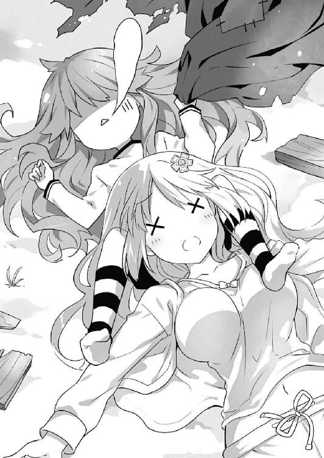
「そ」
琴里が肩をすくめながら続けてくる。
「夕飯のあと、耶俱矢たちが話をしてるのを偶然聞いちゃってね。なんでも、偽の事件を起こして私たちを怖がらせようとしてくれたみたいじゃない？ そんな悪いこと考える子にはちょーっとキツめのお灸を据えてあげなきゃいけないかなあ、なんて」
「じ、じゃあ、十香の件も......」
「気づいてないわけないじゃない。あんなお粗末な殺人現場。だいいち、精霊がそんなに簡単にやられるわけないしね」
琴里が半眼を作りながら言うと、耶俱矢が気まずそうに「うぐ......」と視線を逸らした。
「みんな知ってたのか......？」
「いいえ、全員ってわけじゃないわ。四糸乃と夕弦は知らないはずよ。ごめんね、二人とも。巻き込んじゃって」
「ごめん......四糸乃......」
七罪が、申し訳なさそうに肩をすぼませる。四糸乃が「いえ、そんな」と手を振った。
「大丈夫です。それより、七罪さんたちが無事で、本当に良かったです......」
「四糸乃......」
七罪が感極まったような表情になり、四糸乃に寄っていこうとする。が、その進路は美九によって阻まれた。
「あぁん、四糸乃さんたら優しいですー！ そんなに私のことを心配してくれてたなんてー！」
「み、美九さん......！」
「......あの、ちょ、邪魔なんだけど」
そんなやり取りを横目で見ながら、琴里が耶俱矢の鼻をちょん、とつつく。
「怖がらされる方の気持ちもわかった？ これに懲りたら、あんまり悪戯ばっかりするんじゃないわよ」
「む、むぐぐ......」
耶俱矢はしばし悔しそうに渋面を作っていたが、すぐに観念したようにはあと息を吐いた。
「......ごめんなさい」
「よろしい。──こっちこそごめんね。さすがにちょっとやりすぎたわ。霊力が逆流するくらいまで怖がらせるつもりはなかったんだけど」
琴里はそう言うと、耶俱矢の頭を優しく撫でた。
が、そこで、耶俱矢が何かを思い出したようにピクリと眉を動かした。
「それなんだけどさあ......」
そしてそう言いながら、つつつ......と視線を移動させ、夕弦の方を見やる。
「あのとき美九と七罪を吹き飛ばしたのって、私じゃない気がするのよねえ......」
「............」
夕弦が、耶俱矢の視線から逃れるように顔を逸らす。が、耶俱矢がそれを阻止するようにガッと両手で顔を摑んだ。
「ねえ夕弦ぅ？ あのとき、いつもの二字熟語も忘れてかわいいかわいい悲鳴を上げちゃったのって、一体誰だっけぇ？」
耶俱矢が、妙に嬉しそうな調子で口元をニマニマさせながら言う。
「不明。耶俱矢が何を言っているのかわかりません」
「またまたぁ、いいじゃない怖かったなら怖かったって言えばぁ。誰も責めたりしないわよぉ。ほぉらぁ、夕弦ぅ」
「拒否。離してください」
「素直になりなさいってばぁ。大丈夫よ、殺人鬼は噓だったんだからー」
耶俱矢はひとしきり夕弦をからかうと、満足げに、はふうと息を吐いた。
そして、何かを思い出したように目を見開く。
「やっふふふ......あ、そういえば、私と士道が寝袋を探しに行ったとき、窓の外を通ったのは誰だったの？ あのときはまだ美九と七罪はコテージの中にいたのよね」
「え？」
耶俱矢の言葉に、琴里、折紙、七罪、美九が首を傾げた。
「窓の外......？」
「私は知らない」
「......私も、違うわよ」
「なんのことですかー？」
その返答に、朗らかだった耶俱矢の顔に、たらりと一すじ汗が伝った。
「え......ちょ、ちょっと待って。じゃあ、あのとき私が見たのって──」
と──耶俱矢が言いかけたとき。
階段の方から、ぎし......という足音が聞こえてきた。
「......ッ!?」
耶俱矢がビクッと身体を震わせる。
否、耶俱矢だけではない。その場にいた皆が、何か不穏な気配を感じ取って、音のした方へ注意を向けていた。
ぎし。ぎし。ぎし。
足音はゆっくりと近づき──その姿を皆の目に晒す。
その──全身余すところなく血に塗れた身体を。
「で、でたぁぁぁぁぁぁぁッ！」
「うきゃぁぁぁぁぁぁっ！」
「うそぉぉぉぉぉッ!?」
精霊たちは、悲鳴を上げてその場から逃げていった。
「ふぁあ......ん？」
十香は、眠たげなあくびをしながら身体を反らし、辺りをきょろきょろと見回した。
あのあと、部屋に一人残された十香は、いつの間にか眠りに落ちてしまっていた。
そしてつい今し方目を覚ましたため、皆の声がする方へと下りてきたのだが......なぜか皆十香の姿を見るなり、大声を上げて逃げていってしまったのである。
「む......皆、どうかしたのか？」
血のりに塗れた頰をかきながら、十香は不思議そうに首を傾げた。
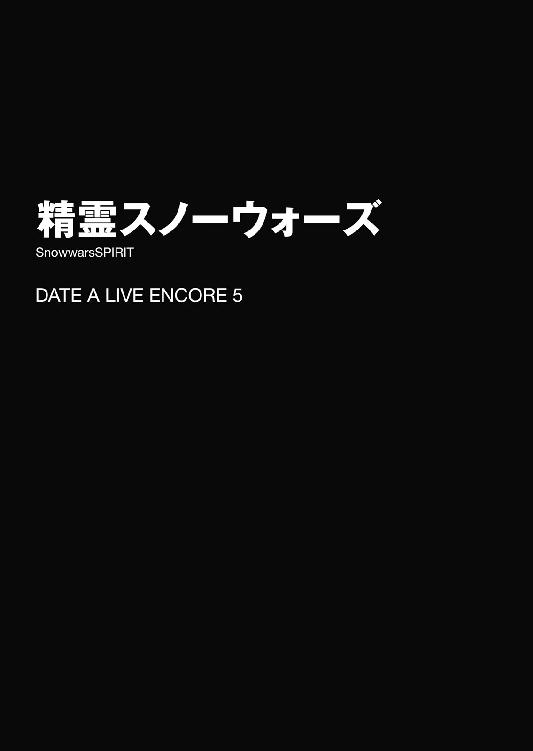
「──士道！ 危ない！」
「......ッ！」
琴里の声に弾かれるように、士道は頭を防護壁の後ろに引っ込めた。
するとその一瞬あと、今の今まで士道の頭があった場所を無数の『弾丸』が通り過ぎていき、後方の壁にガガガガガガガッ！ と着弾する。もし士道が首を引っ込めていなければ、今頃士道の頭部は、胴体から独り立ちしてしまっていたやもしれなかった。
「す、すまん。助かった、琴里」
「気を付けてちょうだい。一瞬の油断が命取りよ。無闇に顔を出さないこと。──七罪も、いい!?」
「......う、うん。出さない。絶対出さない」
琴里が声を上げると、防護壁の後ろで青い顔をしながら蹲った七罪が、ビクッと肩を震わせてそう答えた。琴里に言われるまでもなく、壁の後ろから顔を出そうなどとは微塵も考えていない様子である。
士道、琴里、七罪の三人は今、頑丈に作られた防護壁の陰に隠れ、辛うじて『敵』の攻撃から逃れている状態であった。
しかし、このままではやがて押し切られてしまうだけだ。琴里もそれをわかっているのだろう、悔しげに奥歯を嚙みしめながら、打開策を考えるように額に手を置いている。
「琴里、このままじゃジリ貧だ。俺が囮になるから、その隙に二人で前に進んでくれ」
「駄目よ。危険過ぎるわ。それに、仮にそれが成功したとしても、一メートルや二メートル進んだくらいじゃ状況は覆らないわ。何かもっと──」
と。琴里が言いかけたところで、ガガガガガガッ！ という音が響き、士道たちの隠れている防護壁が微かに振動し始めた。
「な、な......!?」
「おいおい、噓だろ。まさか......」
「......威力に任せて、この防護壁ごと吹き飛ばそうっていうの......!?」
三人は戦慄の声を上げた。
そう。一向に顔を出さない士道たちに焦れてか、『敵』はまさかの強行手段に出てきたようである。
「琴里、七罪！ 壁が削り切られる前に攻撃に移るぞ！」
「く......仕方ないわね」
「う、うそっ、マジで......？」
士道の言葉に、琴里が忌々しげに、七罪が愕然と返してくる。士道は緊張に渇くのどを唾液で湿らせながら、その手に『弾丸』を取った。
そして、いつでも壁の陰から駆け出せるような姿勢をとりながら、声を張り上げる。
「なあ、琴里！」
「何よ、士道！」
「......雪合戦って、こういう遊びだったっけ!?」
士道の悲痛な叫びは、暴風雨のような雪玉の一斉掃射にかき消された。
◇
その日の朝。士道の意識を覚醒させたのは、肌に突き刺さるような寒気だった。
廊下からバタバタバタッという足音が響いたかと思うと、次いでバタンと扉が開けられ、いきなり布団が剝ぎ取られたのである。
「シドー！ 大変だ！」
「......うがっ!?」
安寧と温暖の化身・お布団大明神の加護のもと、安らかな眠りに就いていた士道は、突然の寒気に思わず身を捩った。まるで太陽の下に晒された吸血鬼か、熱せられたアスファルトの上でのたうつミミズのような調子である。
そうしてしばらくベッドの上で舞い踊ること十数秒。士道はようやく、しょぼしょぼした目を擦りながら、その来訪者の顔を見上げた。
士道の布団を手にして立っていたのは、見覚えのある一人の少女だった。長い夜色の髪に水晶の瞳。人形のように端整な貌は今、微かな興奮の色に染まっている。
「......十香、どうした？ 今日は随分早いな」
「うむ！」
士道がのそのそと身を起こしながら名を呼ぶと、十香はこくりとうなずき、士道の部屋のカーテンを一気に開け放った。
「これを見るのだ、シドー！」
「なんだ......って、あ──」
言いかけて、士道は十香の意図を察した。
窓の外に広がる、見慣れた天宮市の景色。
それが、一面の銀世界に変貌していたのである。
「へえ......随分寒いと思ったら、雪が降ってたのか。にしても、見事に積もったもんだな」
「うむ！ もう皆、マンションの裏庭で雪だるまを作っているのだ！ シドーも早く来るといい！」
十香が目をキラキラと輝かせる。この寒さの中だというのに、大した元気である。士道は思わず苦笑した。
「わかったわかった。着替えたら向かうから、先に行っててくれるか？」
「うむ、心得た！」
十香は大仰にうなずくと、元気よく部屋を出ていった。するとその数秒後。士道の妹・琴里の部屋の方からバタンという音が響き、「うひゃぁぁっ！」という悲鳴が聞こえてきた。どうやら十香は、士道だけでなく琴里も起こしにきたらしい。
士道は小さく肩をすくめると、ベッドから下りて着替えを済ませ、部屋から出た。
するとそこで、黒いリボンで髪を括った少女と遭遇する。士道と同じく十香にお布団様を誘拐されたらしい妹、五河琴里である。
「......おはよ、士道」
「ああ、おはよう。琴里」
士道が挨拶を返すと、琴里は「ふぁああ」と眠そうなあくびをした。
「まったく、マンション組は元気ね。ついこの前雪山にスキー旅行に行ったばかりだっていうのに」
「そういえばそうだな。......でもまあ、雪山で見る景色と、日頃見慣れてる街が雪に包まれてる景色っていうのは、また別の魅力があるんじゃないのか？」
「......ま、わからなくはないけどね。じゃあ行きましょうか。せっかくお呼ばれしたんだし、あんまり待たせちゃかわいそうだわ」
「ああ、そうだな」
二人は着替えと簡単な食事を済ませると、そのまま外に出、五河家の右隣──精霊たちの住むマンションの裏手に向かった。
「おーい、十香ー」
「おお、来たか二人とも！」
士道が小さく手を上げながら言うと、大きな雪玉を転がしていた十香が振り向いてきた。
次いで、十香の後方で、雪だるまのパーツに使うらしい小枝を集めていた小柄な少女が、顔を上げてくる。
「あ......士道さん、琴里さん」
『いいところに来たねー。今まさに頭をドッキングさせるところだよー』
少女──四糸乃と、その左手に装着されたウサギのパペット『よしのん』が声を上げてくる。
するとそれに合わせて、そのさらに奥でもう一体の雪だるまを作っていたらしい双子が、士道たちの方に視線を向けてきた。
「くく、漸く常闇の眠りより醒めたか、従僕よ。世界は白銀に満たされた。さあ狂宴に耽ろうではないか」
「同意。こんな日に寝ているのはもったいないです」
言って、八舞耶俱矢・夕弦姉妹が、グッと拳を握る。ちなみに夕弦が手に着けていたのは暖かそうなミトン。耶俱矢は指先が出た革製のグローブだった。さすがに雪を弄るのに適しているようには見えなかった。
「......っと、あれ？ そういえば七罪は──」
士道はそこで言葉を止めた。四糸乃のさらに後方で、寒そうに肩をさする小さな影を発見したのである。
「......悪かったわね。存在感なくて」
そう言って、七罪が陰鬱そうな目で士道を見てくる。士道は頰に汗を垂らしながら苦笑した。
「い、いや、そういうわけじゃ......」
と、士道が後頭部をかきながら困り顔をしていると、不意に十香が「よし！」と声を上げてきた。
「では頭をつけるぞ！......とうっ！」
十香は転がしていた雪玉を抱え上げると、あらかじめ作ってあった胴体の上にそれを載せた。
そしてそののち、四糸乃が手元に集めていた小枝や松ぼっくり、手袋などでそれに装飾を施していく。士道に不満げな視線を寄越してきていた七罪も、四糸乃の手伝いを始める。
数分後。そこには見事な雪だるまが完成していた。
「おお、凄いじゃないか」
「結構愛嬌があるわね」
「だろう！ 私たちの合作だからな！」
士道たちが言うと、十香が得意げにえっへんと胸を反らした。それを見てか、四糸乃も腰に手を当てる。それから一拍遅れて、七罪も少し恥ずかしそうにそれに倣った。
「ふ、やるではないか。我ら八舞の雪だるま『ケーニッヒ・シュネー零式』に勝るとも劣らぬ出来よ」
「首肯。可愛らしいです。......さて、次は何をして遊びましょうか。せっかく士道と琴里も参戦してくれたのです。何か皆でできるようなものが望ましいですが」
「そうだな......となると、かまくら作りとか、雪合戦とかかな？」
「かまくら？」
「雪合戦？」
士道の言葉に、四糸乃と十香が同時に首を傾げた。
「かまくらっていうのは、簡単に言うと雪でできた家だよ。雪山を作って、その中をくりぬくんだ。雪でできてるんだけど、中は結構暖かいぞ」
「............」
その説明に、ぴくりと耳を動かした者がいた。──七罪だ。普段テンションが低めな彼女には珍しい反応ではあったが......きっと、雪でできた狭い空間というのが琴線に触れたのだろう。
「で、雪合戦っていうのは、チームに分かれて雪玉を投げ合う遊びだな。雪玉に当たったら負けになるんだ」
「ほほう。合戦──つまり戦争であるか。そうと聞いては黙っておれぬなあ」
「同意。血が騒ぎます」
「いや、そんな物騒じゃ......」
士道が苦笑しながら言うも、二人の耳には入っていないらしかった。
しかも、八舞姉妹だけではない。十香も初めて聞く遊び方に興味津々の様子であったし、四糸乃も「雪玉を投げる」という点に興味を惹かれてか、目を輝かせている。精霊たちの中では琴里と七罪だけが、気が乗らないような顔をしていた。
「まったく......仕方ないわね」
「......私はかまくらの方がいいんだけど......」
しかし、一度火が点いてしまった精霊たちを止める術がないことは、二人も重々承知しているらしかった。諦めたような調子で、はあと息を吐く。
「よし、ではその雪合戦というのをやってみようではないか！ 要は雪玉を作って投げればよいのだろう？」
「──甘い」
と。
十香が言ったところで、後方からそんな声がかけられた。
振り向くと、そこに二人の少女が立っていることがわかる。一人は、高級そうなコートに身を包んだ長身の少女、誘宵美九。もう一人は、今言葉を発したと思しき、白色迷彩の装備を纏った細身の少女、鳶一折紙であった。
「お、美九に折紙。二人も来たのか」
「はいー。先ほど耶俱矢さんからラブコールを戴いちゃいましてー」
「はッ!? 違うし！ 颶風の御子よりの召喚状って言ったじゃん！」
「颶風の御子よりの召喚状（隠語）を戴いちゃいましてー」
「後ろに（隠語）とかつけないでくれる!?」
美九の言葉に、耶俱矢がたまらずといった調子で叫びを上げる。
しかしその隣にいた夕弦はあまり構わず、折紙の方に視線を向けた。
「確認。それより、マスター折紙。『甘い』とは？」
「そのままの意味。あなたたちは、雪合戦の奥深さを全く理解してない」
「奥深さ......？」
士道が問うと、折紙はこくりとうなずいた。
「そう。雪合戦は国際ルールも存在する歴とした競技。チーム人数、コートの大きさから雪玉の大きさまで、細かな規定が存在する」
「そうだったのか。そういえば詳しいルールとかは知らなかったな......」
「問題ない。私が全て把握している」
言いながら、折紙が精霊たちを、そしてマンションの裏庭を見渡す。
「とはいえ、今の人数と環境で公式ルールに則った試合をするのは困難。そこで、００式ルールを採用する」
「００式......？」
「００」
「不安しかない!?」
士道が悲鳴じみた声を上げるも、折紙は取り合ってくれなかった。
「ここには九人いるので、変則的に三チームずつに分かれてのバトルロイヤル方式を取ることにする。皆、ジャンケンを」
折紙が右手をすっと掲げる。それに合わせて、皆も同じように手を持ち上げた。
『ジャーンケーン......ぽんっ！』
そしてかけ声と共に、皆が思い思いの形に変形させた手を前に突き出す。
「──グーチームは私と夕弦と美九。チョキチームは十香と四糸乃と耶俱矢。パーチームは士道と琴里と七罪」
折紙が、皆の手元を見ながらそう言う。
その結果を見て、士道は思わず苦笑を漏らした。
......ジャンケンである以上仕方ないのだが......なんというか、随分と偏ったチーム分けになってしまった気がしないでもない。何しろ、士道のチームに、あまり雪合戦に積極的でない面子が全員入っていたのである。
そんな士道の様子に気づいたのか、七罪がジトッとした目を向けてきた。
「......な、何よ、私と組みたくないならはっきり言いなさいよ」
「いや、誰もそんなこと言ってないだろ......」
士道が七罪を宥めるように返すと、それを脇から見ていた琴里が肩をすくめながら小声で話しかけてきた。
「でも、ある意味ちょうどよかったじゃない。早めにリタイアして、残り二チームの勝負にしてあげましょ」
「......賛成。痛いの嫌だし」
琴里の言葉に、七罪が後ろ向きな賛意を示す。
「お、おいおい......気持ちはわかるけど、せっかくなんだから楽しんだ方が......」
と、士道が二人に言いかけたところで、折紙がルールを補足するように声を上げた。
「──では、これから三〇分、各々の陣地に雪玉を避けるための防護壁を作る時間を設ける。そして各チームは陣地の最奥にフラッグを設置すること。敗北条件は、チーム全員が雪玉を被弾するか、このフラッグを取られることとする」
そしてそこで、折紙はちらと士道の方に視線を寄越し、あとを続けた。
「──なお、雪玉を被弾した選手はリタイアとなるが、そのチームがいずれかのチームのフラッグを奪取した場合、ボーナスとして復活することができる」
「なるほど、大胆な攻め方ができるってわけか」
「そしてフラッグを取られたチームは、取ったチームに併吞されることとし、その時点で雪玉を被弾していないメンバーは、以後そのチームの一員として戦闘を継続することとする」
「ふむふむ......それ結構重要だな。相手を一人もリタイアさせずにフラッグを取ったら、一気に兵力が倍になるのか」
「そして最終的な勝利チームには、賞品として、敗北チームのメンバーへの命令権が与えられることとする」
「......なッ!?」
ナチュラルに追加されたルールに、士道は思わず声を裏返らせた。
「ちょ、ちょっと待て！ なんだそのルール!? 聞いてないぞ!?」
「だから今説明している。何も問題はない」
折紙が言うと、そのチームメンバーである夕弦と美九が、ニッと唇を歪めた。
「首肯。その通りです。何も問題はありません」
「うふふー......何をお願いしましょうかねー。今から楽しみですねー」
言いながら、美九が士道、琴里、七罪を視線で撫で回し、ペロリと唇を舐める。その仕草に、三人は同時に身を震わせた。
「お、おい、さすがにこんなルールはおかしいよな!?」
士道は縋るように、十香、四糸乃、耶俱矢チームに訴えかけた。こういうときは多数決である。さすがに三対六で強行してこようとはしないだろう。
が、士道の淡い希望に反して、十香は不思議そうに首を傾げてきた。
「む？ つまり、私が勝ったら、今日の夕飯に好きなものを作って貰えるということだな？」
「楽しみ......です」
「かかか！ 構わぬ構わぬ！ 勝つのは我らだ！ 士道よ、負けたときのことを考えるのは亡者の思考ぞ。生とは前を向くことである！」
「い、いや、そうじゃなくて......！」
「──では、スタート。頑丈な防護壁を作ることが勝利に繫がる」
士道が十香たちに折紙の思惑を説明しようとすると、折紙がそれを遮るようにパン！ と手を叩いた。十香たちが「おー！」と元気よく声を上げ、自分たちの陣地に雪を積み上げていく。
「く......！」
こうなってはもう止められない。士道は苦しげに渋面を作った。
そんな様子を見てか、後方から琴里と七罪が不安そうに声をかけてくる。
「まずいことになったわね......」
「......ど、どうするのよ、これ」
「............」
士道は二人の方に向き直ると、グッと拳を握った。
「......方法は一つだ。俺たちが、勝つしかない」
◇
「......とかって格好いいこと言ってなかった？」
雪合戦開始後。機関銃の一斉掃射のような雪玉の奔流から身を隠しながら、琴里が悲鳴じみた声を上げた。
「し、仕方ねえだろ！ さすがにここまでとは......！」
士道たち、パーチーム改め『チーム五・七・五』は、合戦開始からずっと、初期位置に当たる防護壁から動けずにいた。無論、何度か攻撃に転じようともしたのだが、そのたび白い弾丸に阻まれてしまっていたのである。
とはいえそれは士道たちだけに限った話ではない。左方の陣地にいるグーチーム改め『鳶一小隊』も似たような状況であった。
そう。今圧倒的な火力と物量で戦場を支配していたのは、右方に陣取るチョキチーム改め『ヴァイス・レギオン』だったのである。
「どうしろってんだよ、こんなの！」
士道は渋面を作りながら、絶望的な心地でうめき声を上げた。
何しろ『ヴァイス・レギオン』は、前衛に精霊一の膂力を誇る十香を、中衛に素早さに優れる耶俱矢を配置することにより、圧倒的な火力と投弾範囲の広さを両立しているのである。
しかも、それだけではない。如何に優秀なアタッカーが揃っていようと、投げるのが雪玉である以上、弾数には限りがあるし、玉を作る時間も必要になる。攻撃重視のチームを攻める隙は、そこにこそあるはずだった。
だが、『ヴァイス・レギオン』は違う。後衛に陣取る四糸乃が、猛烈な勢いで雪玉の補充をすることにより、前衛・中衛の攻撃の手をひとときたりとも休ませないのだ。
「......あれ、反則じゃないのか？ 『よしのん』の口から雪玉が無限供給されてるように見えるんだが......」
士道が頰に汗を垂らしながら言うと、琴里が似たような表情で返してきた。
「......まあ限りなく黒に近いグレーだと思うけど、そもそもそれを訴える方法がないのよね」
「あー......」
と、士道たちがそんな会話をしていると、戦場に変化が現れた。
今まで防戦一方だった『鳶一小隊』の防護壁の中から、夕弦と美九が颯爽と飛び出したのである。
「見参。いつまでも耶俱矢たちの好きにはさせません」
「はぁーい！ 皆さんの美九ですよぉー！」
言って、夕弦が格好いい、美九が可愛らしいポーズを取ってみせる。まるで、『ヴァイス・レギオン』を挑発するかのように。
「ほう！ ようやく出てきおったな、夕弦！ 待ちわびた──ぞッ！」
耶俱矢が高らかに声を張り上げ、夕弦に向かって雪玉を激しく投擲する。
「回避。ふ──ッ」
しかし夕弦は軽やかに身を翻すと、その夥しい数の雪玉を華麗に避けてみせた。側転、バック転、宙返り二回捻りと、見事な身のこなしを披露する。
というか、よく見るとちょっと浮いていた。......まあ、時折耶俱矢の雪玉も常識では考えられない軌道を描いているのでおあいこなのかもしれなかったが。
「まったく、あの子たち......微量とはいえこんなことに霊力を使って......」
琴里が渋面を作りながら額に手を当てる。
するとそれに合わせるようにして、十香が雪玉を手にし、夕弦に狙いを定めた。
が、そこで、戦場の真っ只中に立った美九が胸を反らす。
「うふふ、十香さん、夕弦さんだけにかまけてていいんですかー？」
「むっ？」
十香がその言葉につられるように、視線を美九に向ける。すると美九は、十香を制止するように手をバッと広げた。
「ストップ。──いいですか、十香さん。私は夕弦さんのように素早く動けるわけではありません。そして霊装を纏っているわけでもない以上、十香さんが本気で投げた雪玉なんて受けた日には、痛くて痛くて泣いてしまいます。──さあ、それでも投げられますか？」
「む......？」
十香は不思議そうな顔を作ったのち、野球の投手のように大きく振りかぶり、手にした雪玉を投げた。
瞬間、ゴヒュッ！ という轟音が鳴り響き、美九の髪を掠めて雪玉が後方の防護壁に突き刺さる。
「ひ......ひぃぃっ!?」
一拍置いて、美九が情けない声を上げてその場にへたり込む。
それを見て、七罪が顔を青くした。
「な、なにあの威力。あんなの当たったらただじゃ済まないわよ......」
「確かにな......一体どうしたら」
「あら、防ぐ方法はなくもないわよ」
七罪と士道の言葉に応えるように、琴里が言う。
「え？ 一体どうするんだ？」
「簡単よ。まず士道が身を以て十香の雪玉を全力で受け止める」
「うん、『まず』の時点で俺脱落してるよな」
「重要なのはここから先よ。士道の魂はリタイアするんだけど、その身体は壁となり、ずっと私たちを守ってくれるの」
「非人道的にもほどがある!?」
「冗談よ、冗談」
士道が絶叫を上げると、琴里がヒラヒラと手を振った。
するとそこで、腰を抜かしていた美九が立ち上がり、再度声を上げ始める。
「と、十香さん？ 何するんですか！ さっきまでより強かったじゃないですか！」
「ぬ？ 本気で投げろと言ったのは美九ではないか」
「ちゃんと全文覚えてくださいー！」
「むう......ではどうしろというのだ」
「そこは、『く......っ、駄目だ。私に美九を傷つけることはできない......』『いいんですよ十香さん。優しい十香さんに戦場は似合いません。さあ、私の胸の中へ......』『ああ、美九......！』となるところじゃないですかー！」
「む、むう......？」
美九の言葉に、十香が困惑したように眉根を寄せる。
そんな応酬を脇から見ながら、七罪が半眼を作った。
「......ねえ、これ、チャンスなんじゃないの？」
「あ......」
琴里は目を見開くと、雪玉を手に取り、美九に放った。
十香に熱っぽく演説ぶっていた美九の頭に、ぐしゃっと雪玉が炸裂する。
「え？ あ、あああああっ！」
美九が自分の額に手を触れ、そのまま力なく雪原に倒れ込む。......なんともあっけない幕切れだった。
「なんていうか......」
「......うん、美九っぽい終わり方だったわね」
士道と琴里はあははと苦笑しあった。
「......でも、これはある意味いい流れかもしれないわよ。私たちにとって最悪のケースは、『鳶一小隊』が勝利すること。でも見る限り、今優勢なのは『ヴァイス・レギオン』。夕弦は上手く避けてるみたいだけど、防戦一方に変わりはないわ。このまま十香たちが押し切ってくれれば......」
「あ──そ、そうか。十香たちが勝ってくれれば、美九たちには命令権がいかないんだ......！」
「そういうこと。命令権は、せいぜい今晩のメニューを指定されるくらいで済むわ」
琴里が、頰に汗を垂らしながらもニッと唇の端を上げる。
「......ただ、被弾して敗北は痛そうだから、フラッグを取って欲しいところだけどね」
「......う、うん。賛成」
琴里の言葉に応えるように、七罪がこくりとうなずく。
確かに琴里の言うとおりである。士道たちの目的は命令権を得ることではなく、『鳶一小隊』に命令権を渡さないことなのだ。なら、『ヴァイス・レギオン』がこのまま頑張ってくれれば何も問題はない。
と、そこで雪原に倒れ伏した美九が、不満げに声を上げてきた。
「......あれー、もしかしてこれ、誰も助けにきてくれないパターンですかー？ こう、お姫様的に目覚めのキッスを待ってるんですけどー......？」
それを聞いて、琴里がやれやれと息を吐く。
「......さすがに戦場の真っ只中に駆け寄る人はいないってば。ていうか、早く避けないと巻き添え食うわよー」
琴里が言った瞬間、美九のすぐ脇を夕弦が側転で通り抜けた。それを追うようにして、耶俱矢の高速雪玉が、ガガガガガッ、と雪原を爆撃する。
「ひぃん！」
美九は慌てた様子で跳ね起きると、そのまま戦場の外に逃れていった。
「まったく、相変わらずね......」
「はは......まあ、らしいっちゃらしいけども」
「......ん？」
と。そこで防護壁に作られた細長い覗き窓を覗いていた七罪が、不意に声を発した。
「何よ七罪、どうかした？」
「......いや、あの雪だるま。さっきまであんなところにあったっけ？」
「え？」
七罪の不審そうな言葉に、士道は眉をひそめた。
「おおおおおおおおおおおおおおおっ！ 弾幕はパワァァァァァッ！」
十香は、後方から供給される雪玉を両手に摑んでは、力任せに敵陣に投げつけていた。
「かか！ よいぞ十香！ その調子だ！ 右陣も左陣も身動きが取れぬと見える！ このまま一気に勝負を決めようぞ！」
背後から、高らかな耶俱矢の声が聞こえてくる。十香はこくりとうなずき、それに返した。
「うむ！ そうすれば今晩のおかずはハンバーグとエビフライのセットになるのだな！」
「くくく......何を言っておる十香！ 我らが手にするは絶対的命令権！ そこにさらに唐揚げを付けることさえ可能......ッ！」
「な、なんと......！ それはもう最強ではないか!?」
「応とも！ 然らば征け！ 我らが勝利のためにッ！」
「うむ！ うおおおおおおおっ！」
十香は叫びを上げると、より一層力を込めて雪玉を投擲した。
が──
「む......？」
そこで、十香は投擲を止めた。次なる雪玉を摑もうとしたところに、目的のものがなかったのである。
「四糸乃、雪玉が足りないぞ。追加を頼む！」
言いながら四糸乃の方に視線をやり──十香は微かに眉根を寄せた。
先ほどから絶え間なく雪玉を供給してくれていた四糸乃が顔を驚愕の色に染め、後方を向いていたのである。
「あ......」
「四糸乃......？」
十香は不思議そうに首を傾げながら、四糸乃の視線の先に目をやり──
「な......!?」
四糸乃と同じように、その場に固まった。
しかしそれも無理からぬことであろう。何しろ、十香たちの後方──『ヴァイス・レギオン』の陣地の最奥に、大きな雪だるまが悠然と聳え、その手に『ヴァイス・レギオン』のフラッグを握っていたのだから。
「な、なんだあの雪だるまは！」
『よしのんたちのじゃないよー！』
皆が顔を狼狽の色に染めていると、フラッグを握った雪だるまが微かに震え、やがてその頭部の雪が一部、ボコッ、と崩れた。
そしてその中から、見覚えのある少女の顔が現れる。
「な──折紙!?」
そう。雪だるまの中から現れたのは、今まさに十香たちが戦っていたはずの、鳶一折紙その人だったのである。どうやら事前に作っておいた雪だるまの中に潜り込み、姿を隠しながら、十香たちの陣地の最奥までやってきたらしい。
「──あなたたちの火力は確かに脅威。でも、それが自分たちの視界をも遮り、結果、私の接近を許すことになってしまった」
「く......！」
「そ、そんな......」
「とにかく、フラッグは奪取した。『ヴァイス・レギオン』のメンバーは誰も被弾していない。全員、これより『鳶一小隊』の指揮下に入ってもらう」
折紙が十香たちを見下ろしながらそう宣言する。......まあ、その身に纏った雪だるまのせいであまり格好は付いていなかったのだが。
とはいえ、敗北という結果に変わりはない。十香は悔しげに表情を歪めながら、その場に座り込み、腕組みした。
「......撃て。敗者が恥を晒してまで生き延びようとは思わん」
それに同調するように、耶俱矢が声を上げてくる。
「よく言った、十香。それでこそ我が従僕よ。......それに、折紙よ。大事なことを忘れているのではないか？」
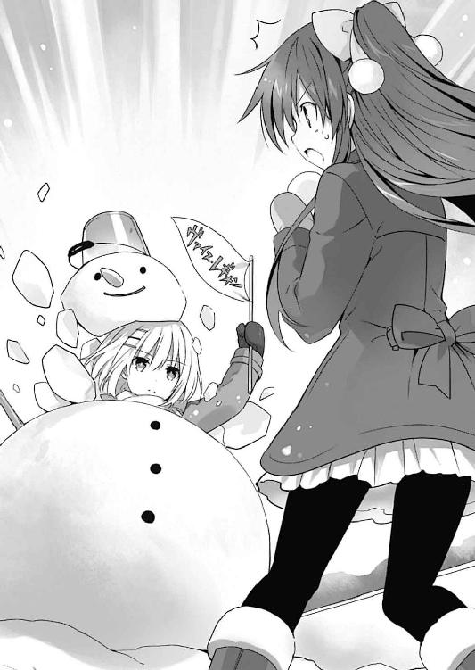
「大事なこと？」
折紙が首を傾げるような仕草を見せる。が、雪だるまのボディに阻まれてあまり頭部は動いていなかった。
「左様。もし我らが軍門に降ったとして、本当に我らが御主の意図通りに動くと思うてか？ 戦場に於いて最も恐ろしいのは、強大な敵ではなく信用のおけぬ仲間であるぞ。御主等も、背を冷たくしながら戦いたくはあるまい」
耶俱矢が「くくく......」と悪そうな笑みを浮かべながら言う。耶俱矢の言っていることを完全に理解できたわけではなかったが、十香もそれに合わせて「くくく」と悪そうな顔を作った。四糸乃も困ったような顔をしてから、「......く、くくく......」と躊躇いがちに笑った。
しかし折紙はぴくりとも表情を変えず、言葉を続けてきた。
「そう。ならばここであなた方を仕留めても構わない。でも、本当にそれでいいの？」
「どういう......ことですか？」
四糸乃が問うと、折紙は静かな視線で三人を眺めた。
「ルール説明の際、私は、勝利チームは敗北者に命令権を行使できる、と言った。そして──敗北したチームの被弾していないメンバーは、そのまま勝利チームに組み込まれる、とも」
「それが何だと......はっ!?」
言いかけて、耶俱矢がハッと肩を揺らす。
「なんだ、どうしたのだ、耶俱矢」
「......つまり折紙は、自分の仲間になれば、我らにも士道たちへの命令権を与えようと言っておるのだ」
「な、なんだと？」
十香は眉をひそめながら折紙の方に向き直った。
だが一瞬あと、思い直すようにブンブンと首を横に振る。
「いや......駄目だ。確かにエビフライと唐揚げとタコさんウインナー付きハンバーグは惜しいが......」
『十香ちゃんさっきのからまたトッピング増えてない？』
『よしのん』が何やら突っ込んでくるが、十香は構わず続けた。
「惜しいが、だからといってそんな真似はできん。第一、それではシドーたちに勝ち目がなくなってしまうではないか」
「そのルールに同意を示したのはあなたたちのはず」
「む......むう......」
確かにそう言われるとそうなのである。十香は難しげな顔をして腕組みした。最初は特に問題ないだろうと聞き流してしまったルールが、ここに来て効いてくるとは。
が、十香がうんうん悩んでいると、やがて折紙がふうと息を吐いた。
「──これ以上時間をかけていては、『チーム五・七・五』の反撃を許すことになる。参戦の意志がないのなら構わない。あとは私たちだけでやる」
「む......」
「しかしその場合、エビフライと唐揚げとタコさんウインナーとカニクリームコロッケ付きハンバーグは諦めてもらうことになる」
「な──!?」
折紙の言葉に、十香は思わず息を詰まらせた。
「か、カニクリィィィム......？」
その幻惑的な響きに、十香は目眩のような感覚を覚えた。だがすぐにハッと我に返り、ブンブンと首を横に振る。
「い、いや、しかしだな......」
「無理にとは言わない。でも残念。せっかくのエビフライと唐揚げとタコさんウインナーとカニクリームコロッケ付きチーズハンバーグおかわり自由が」
「............ッ!?」
チーズハンバーグ。そういうのもあるのか。しかもおかわり自由ときたものである。十香は視界がぐにゃりと歪んでいくのを感じた。
「と、十香さん......！」
「敵の甘言に惑わされるでない！」
四糸乃と耶俱矢が何かを叫んでくる。が、そこで、折紙が二人の耳元に口を近づけ、ぼそぼそと何かを呟いた。
すると次の瞬間、二人の顔がボンッ！ と赤くなる。
「え......？ え......っ？」
「う、うそ......そんなことまで......？」
四糸乃と耶俱矢が戸惑うように言うと、折紙がこくりとうなずいた。
そして、ビッと『チーム五・七・五』を指さしながら、静かに宣言する。
「──戦闘を、再開する」
『............』
十香と四糸乃と耶俱矢は一瞬目を見合わせると、「むう......」と小さなうなりを上げた。
「......なに、一体どうしたの？ 攻撃が止んだみたいだけど......」
言いながら、琴里が防護壁の端にゆっくりと進んでいく。
「おい、琴里、危ないぞ。もしかしたら──」
「わかってるわよ」
琴里はそう言うと左手の手袋を外し、その先端を摘まんで、防護壁の脇からヒラヒラと揺らしてみせた。そう、もしかしたら十香たちが、こちらを油断させるためにあえて攻撃の手を休めたのかもしれないのである。
だが、『ヴァイス・レギオン』はその誘いに対し、一発の雪玉も放ってこなかった。
「......来ないわね」
「......ああ」
そう言って、琴里と士道は怪訝そうな眼差しを交差させた。
四糸乃や『よしのん』の策によって、一旦攻撃の手を止めこちらの動きを誘おうとした......ということはあり得ない話ではない。だが、十香や耶俱矢の性格や反応速度からいって、琴里のフェイントに全く反応を示さないというのは考えづらかったのである。
「一体何があったのかしら。雪玉を投げ尽くしたってわけでもなさそうだけど......」
「......あっ!?」
と。士道と琴里が不審そうに唸っていると、不意に、覗き窓を覗いていた七罪がそんな声を発した。
「何だ？ 何かあったのか、七罪」
「あ、あれ......十香チームのフラッグが、取られてる！」
「は......!?」
「何ですって!? どういうことよ！」
七罪の言葉に弾かれるように、士道と琴里は目を見開くと、防護壁から頭を出して『ヴァイス・レギオン』の陣地の方を見た。
すると、盛り上げられた雪の山の上に立てられていたフラッグが、手足の生えた雪だるま──否、その中の折紙に奪取されているのが見て取れた。
「お、折紙!?」
思わず驚愕の声を上げる。が──士道と琴里はすぐに事態を察した。恐らく、折紙が文字通り雪だるまに隠れ、『ヴァイス・レギオン』のメンバーを一人も脱落させることなく、フラッグを奪取したのである。
「ちょ......ってことは......」
七罪が何かに気づいたように震えた声を発する。
その不安を示すように、十香たちは折紙と何やらしばしの間話し込んだかと思うと、再び先ほどまでの配置につき、その手に雪玉を握った。
「わっ！」
「ひ──ッ!?」
士道と琴里は息を詰まらせ、泡を食って頭を防護壁の後ろに引っ込めた。次の瞬間、今の今まで止まっていた攻撃が再開する。
「く......そうか、誰もリタイアせずにフラッグを取られたってことは、十香たちは全員折紙たちのチームに組み込まれちまうのか」
「......なるほど。折紙の奴、最初からこれを狙ってたってわけね......！」
と、五河兄妹が苦々しい表情で歯がみしていると、覗き窓を覗いていた七罪が声を上げた。
「あ......！ 折紙が、雪だるまを脱ぎ捨てて自分の陣地に戻ってく！」
「くっ、挟撃するつもりか？ なら今のうちに折紙だけでも......！」
「落ち着きなさい！ 十香と耶俱矢の砲撃を一発も食らわずに折紙に雪玉を当てるなんて不可能よ！」
「ぐ......でもこのままじゃ......！」
そうこうしていると、今まで沈黙していた左方の陣地──『鳶一小隊』からも、雪玉が放たれ始めた。恐らく、折紙が帰還したのを確認して、本格的に士道たちを叩きにきたのだろう。
無論『ヴァイス・レギオン』の攻撃ほどの物量と威力はないものの、無理に押し通ろうとすれば、たちまち白い悪魔の餌食になってしまうに違いなかった。
「投擲。さあ、勝負を決めてあげます」
「だーりぃぃぃぃん！ 琴里さぁぁぁぁん！ 七罪さぁぁぁぁん！ 待っててくださいねぇぇぇぇ！ すぐに皆さんの知らない世界を見せてあげますからねぇぇぇぇぇ！」
などと、雪玉に交じって夕弦と美九の声が届いてくる。それを聞いてか、七罪がビクッと肩を震わせた。
このままでは、やがて防護壁が崩され、士道たちは一網打尽にされてしまうだろう。そうなる前に、どうにか手を打たねばならなかった。
「考えろ......考えるんだ！ 必ず何か方法があるはずだ......！」
「って言っても......そんなに簡単な話じゃないわよ、これは」
士道の言葉に、琴里が表情を険しくする。
「......左右からの絶え間ない攻撃によって、攻撃はおろか身動きさえできないこの状況。さらに最悪なのは、折紙たちが私たちのフラッグを取るつもりがなさそうなことよ」
「わ......私たちを、全員雪玉で倒そうとしてるってこと？」
「そういうことね。私たちが万に一つでも勝てる可能性があるとすれば、ウチのフラッグを取りに来た敵に雪玉を当てることだけど......『ヴァイス・レギオン』という戦力を得た時点で、そんなリスクは背負おうとは思わないでしょうね。......こっちが付け入りたいポイントを悉く潰していく辺り、折紙らしいわ」
「そんな......じゃあ、このまま壁が崩されるのを待つしかないってこと？」
七罪が悲愴感に溢れた顔をしながらか細い声を発する。士道はそれを否定するように、拳をグッと握った。
「諦めるな......！ まだ終わっちゃいない！ たとえば......折紙がしたみたいに、雪だるまに隠れて後ろから回り込むっていうのはどうだ？」
士道が言うと、琴里が細く息を吐きながら首を横に振ってくる。
「無理よ。折紙みたいに壁を作るタイミングから雪だるまを用意していたならともかく、この状況で新しく隠れ蓑を作るなんて不可能でしょ。......それに、折紙が、一度自分の使った手に都合よく引っかかってくれると思う？」
「うぐ......じ、じゃあ、地面に積もった雪の中を潜っていくとか......」
「......より現実感がなくなったわね。いくら例年より積もってるって言ったって、これくらいの積雪量じゃ身を隠すのも難しいでしょ。這って進んだらいい的になるのがオチよ」
「ぐ、ぐう......」
士道は額に手を置きながら苦しげに呻いた。
するとその瞬間──
「わきゃっ！」
絶え間ない雪玉の攻撃に晒され続けた防護壁の一部が、ついにボロッと崩れ落ちる。ちょうどその場所にいた七罪が、慌てて残っている壁の陰に身を隠した。
「く......壁ももう限界ね」
そう言って、琴里が視線を鋭くしながら、作り置きしてあった雪玉を手に取る。
「──仕方ないわ。士道、七罪。最後の手段に出るわよ」
「最後の手段......？ 何か作戦があるのか？」
「ええ。多分成功率は、士道の作戦の一〇倍はあるわ」
琴里が自信ありげに唇の端を上げる。士道と七罪は「おおっ」と目を見開いた。
「一体どうすればいいんだ？」
「簡単よ。雪玉を手にとって、壁の陰から走り出し、敵の攻撃を華麗にかわしながら、折紙たちに雪玉をぶつけるの。一人一殺で『鳶一小隊』の陣地は空になるから、そこからさらに十香たちの攻撃を避けつつフラッグを奪取すれば私たちの勝ちよ」
言いながら、琴里が手にした雪玉を投げるようなジェスチャーをする。
それを聞いて、士道と七罪は頰に汗を垂らした。
「......ええと」
「それ、作戦......？」
「ええ。成功率は〇・一パーセントくらいあるんじゃないかしら」
「えっ、俺の作戦、成功率〇・〇一パーセントだったの？」
「ちょっと評価高すぎた？ 私おにーちゃんに甘いところあるから」
「............」
士道は渋い顔をしながらも、何も言い返さなかった。なんだかいらないことを言うとさらに評価が下がりそうであったし──何より、そんな問答をしている猶予がもう残されていなかったのだ。
──『ヴァイス・レギオン』の機関銃のような攻撃が、『チーム五・七・五』の防護壁をさらに削り取る。もはや壁は、士道たち三人がギリギリ身を隠せるくらいしか残っていなかった。次に壁が崩れるとき。それが、士道たちの敗北の瞬間であった。
「よし......！ 死なばもろともだ。やってやる！」
士道は意を決するように気を吐くと、雪玉を手に取った。そしてキッと目を鋭くし、少しでも玉の当たる範囲を狭めようと前傾姿勢を取る。
「ええ。どうせなら、華々しく散りましょう」
琴里が同意するようにうなずき、士道と同じ方向に目を向ける。──即ち、敵陣。誘宵美九、八舞夕弦、そして鳶一折紙が待ち構える、難攻不落の城である。
士道と琴里は視線を交じらせると、どちらからともなくうなずいた。
が、二人が地面を蹴る寸前で。
「......あの、ちょっといい？」
七罪が、おずおずといった調子で手を上げた。
「ん、どうした、七罪」
「そ、それやるなら、もう一つ試してみたいことがあるっていうか......」
「！ 何か思いついたの？」
「......いや、あの、思いついたってほどのことじゃないんだけど......あ、うん......やっぱいいや、なんでもない......」
士道と琴里から注視され、七罪が消え入るように肩をすぼめる。琴里が焦れるようにわしわしと頭を搔いた。
「駄目でもともとよ。何でもいいから言ってみて」
「......、え、ええとね......」
琴里に促され、七罪はたどたどしく話し始めた。
「............」
雪玉の猛攻に晒され、次第に小さくなっていく『チーム五・七・五』の防護壁を眺めながら、折紙は無言のまま息を吐いた。
戦況は、折紙の描いた絵図の通りに運んでいる。少なくとも現時点で、折紙の予想から外れる事態は起こっていない。非常に順調といえた。
「感嘆。全てマスター折紙の作戦通りです」
「うふふー、さすがですねー。私たちの勝利は目前ですー！」
夕弦と、折紙がフラッグを奪取したことにより甦った美九が、雪玉を放りながら言ってくる。折紙は小さくうなずきながら返した。
「──そう。でも、不測の事態というのは、こういうときにこそ起こりやすいもの。最後まで油断しないよう、気を引き締めて」
折紙が言うと、二人はそれに応ずるように首肯してきた。
「了解。最後まで気を抜きません」
「ですですー。何しろこれに勝てば、だーりん、琴里さん、七罪さんのフルコースを堪能できるんですもんねぇ......ふふ、うふふふふ......」
「懸念。油断しまくりです、美九」
夕弦が半眼で美九を見る。
と──ちょうどそれに合わせるようにして、戦況に変化が現れた。
当初の大きさの三分の一程度にまで削り取られていた『チーム五・七・五』の防護壁から、左右にバッと人影が躍り出たのである。
どうやら、壁がもう保たないと悟って、最後の特攻作戦に出たらしい。
「......！ 夕弦、美九」
しかしそれも予想の範疇である。折紙は自らも雪玉を手に取りながら、二人に指示を発した。
「反応。接近は許しません」
「当てちゃいますよー！」
折紙の声に応えるように、夕弦と美九がさらに多くの雪玉を投げる。
が──如何に有利な場を整えているとはいえ、移動する標的に正確に雪玉を命中させるのは非常に難しい。夕弦と美九も感覚が摑めなかったようで、上手く士道たちに雪玉を当てることができないでいた。
「くらえ......っ！」
その一瞬の隙を衝いて、士道が大きく振りかぶり、手にした雪玉を折紙目がけて放ってくる。
とはいえ、如何に当たりづらいとはいえ手数が違いすぎる。士道は雪玉を放った瞬間、『ヴァイス・レギオン』からの集中砲火を浴びて雪原に沈んでいった。
「きゃっ！」
士道と反対側から出てきた琴里も、上手く一発の雪玉を放ったが、すぐに被弾し、リタイアする。
だが、士道が放った雪玉はまだ生きている。一度放たれた雪玉は、放ったあと選手が被弾しても、地面につくまで効力を損ないはしない。つまり、如何に士道をリタイアさせたとて、折紙がこれに当たってしまったら、相打ちという形になってしまうのである。
「............っ！」
折紙は小さく息を吐くと、そのままぐぐっと身体を反らした。
まるで、一瞬自分の周りがスローモーションになるかのような感覚。士道が放った雪玉は、折紙の鼻先数ミリ上を通り抜けていった。
「............」
折紙は無言のまま、反らしていた身体を元に戻すと、地面に倒れ伏した士道を見やった。すると、雪にまみれた士道が、悔しそうな、それでいてどこか清々しそうな顔を上げてくる。
「......マジか。今のを避けちまうのかよ。凄いな、本当に」
「私でなければ──いや、私、十香、耶俱矢、夕弦以外だったら避けられなかった。あと雪玉限定なら四糸乃ももしかしたら」
「......あ、避けられる人結構いるんですね」
折紙が正直な感想を述べると、士道ががくりと肩を落とした。
「落胆することはない。今のはいい玉だった」
「はは......おう、お世辞でも嬉しいよ」
「お世辞ではない。いい玉だった。士道の玉は本当にいい玉だった」
「なんでそこ連呼するの!?」
士道が悲鳴じみた声を上げる。だが折紙は構わず続けた。
「──でも、結果は結果。この勝負、私たちの勝ち」
折紙が言うと、士道は地面に倒れたままふうと息を吐いた。
「それはちょっと気が早いんじゃないか？ よく見てみろよ。確かに俺はやられたが、まだ俺のチームが敗北したわけじゃない」
「............」
折紙はちらと辺りを見回した。士道と同じく被弾した琴里が、肩を押さえながら身を起こしているが......確かに士道の言うとおり、一人の姿が見当たらなかった。恐らく、未だ防護壁の裏に隠れているのだろう。
「確かに士道の言うとおり、ルール上の決着はまだ。でも、彼女一人でこの戦況を覆すことはまず不可能」
「......そう思うか？ 本当に？」
言って、士道が不敵に微笑んでくる。どう考えてもただの強がりであり、ブラフだ。
「............」
しかし、なぜだろうか。折紙は心がざわつくのを感じた。──何かを見落としてしまっているような気がする。しかし、それが何かがわからない。
折紙が思考を巡らせていると、士道がニッと微笑んできた。
「信じてたぜ、折紙。おまえなら──絶対にあの玉を避けてくれるってな」
「......っ!?」
折紙はハッと肩を震わせると、後方に振り返った。
──そこには。
「......ふ、フラッグ、奪取......」
まるで乗り物酔いをしたかのようにフラフラになりながらも、折紙の真後ろにあった『鳶一小隊』のフラッグを手にした七罪の姿があった。
◇
果たして、三チーム対抗雪合戦は、『チーム五・七・五』の勝利で幕を下ろした。
三つの陣地に分かれていた精霊たちが一堂に会し、その勝利を讃えるようにぱちぱちと拍手の音が鳴る。
「七罪！ よくやったな！」
士道は身体にまぶされた雪を払いながら七罪のもとに歩くと、その頭をわしわしと撫でた。
すると七罪が顔を青くしながら、その動作をやめさせるように士道の手を払ってくる。
「ちょ......待って。今気持ち悪いから頭揺らさないで......」
「あ──わ、悪い。そりゃそうだよな」
士道は手を引っ込めると、あははと苦笑した。
七罪の反応も無理はなかった。何しろ七罪はつい先ほど、雪玉に化けて士道に投げられたばかりなのである。
変身能力を持つ精霊である七罪だからこそ可能だった、滅茶苦茶な作戦である。士道も琴里も、七罪からその提案を受けたときは驚いたが......彼女は見事自分の仕事をやりおおせたのだった。
「まったく、無茶するんだから。上手くいったからいいようなものの......」
次いでやってきた琴里が、やれやれと肩をすくめながら息を吐く。
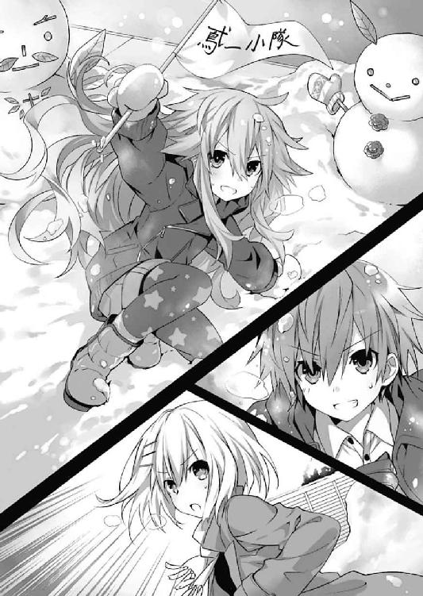
「......や、こうでもしないと勝てないと思って。......でも、うん......そうね。無茶ね。確かにそうよね。すみません。しにます」
「褒め言葉の認識センサー低すぎない!?」
放っておくとどんどん暗くなる七罪に、琴里が声を裏返らせる。
と、そこで十香が、何かを思い出したように「あ」と目を丸くした。
「そういえばシドー、この場合賞品はどうなるのだ？ シドーが夕飯のメニューを決めるのはいつものことではないのか？」
「いや、夕飯のメニュー決め権ってわけじゃないんだが......」
士道は苦笑すると、頰をぽりぽりと搔いた。
「............」
すると折紙が、着ていた服を無言で脱ぎ始める。
「な!? 何やってんだ折紙!?」
「......？ 士道の命令に備えて準備を」
「そんな命令しないから！」
「......では、一体どんなハードコアな命令を」
折紙が不思議そうに首を傾げてくる。士道はため息交じりに折紙の服を整えてから言葉を続けた。
「別に、みんなに命令しようなんて思っちゃいないよ。強いて言うなら......これからもみんな仲良くすること！ 以上だ！」
士道が宣言すると、それに同調するように琴里がうなずいた。
「そうね。私も士道のと同じで構わないわ」
「とすると......」
そこで皆の視線が、最後のチームメンバーであり、勝利の立役者である七罪に注がれた。
他人の視線があまり得意でない七罪が、ビクッと身体を震わせる。
「......あ、私も二人と同じで......」
が。そこまで言いかけたところで、七罪が何かを思い出したように言葉を止めた。
「......？ どうかした、七罪」
「何か命令があるのなら言うが良いぞ」
「......や、命令っていうか、あれなんだけど......」
七罪は、少々長めの逡巡ののち、ぼそっと呟いた。
「............かまくら」
「え？」
「......かまくら、入ってみたい」
『............』
その言葉に、皆は一瞬ぽかんとした。
だが、すぐにニッと微笑み、こくりとうなずく。
「よし、じゃあ作るか、かまくら！」
「ええ。勝者の命令は絶対だものね」
「異存はない。敗者は従うのみ」
「おお！ 作るのか!? では皆が入れるくらい大きいものにしよう」
「が、がんばり......ます！」
「かか！ よかろう、八舞の築城技術をとくと見るが良い！」
「首肯。スコップを取ってきます」
「きゃー！ 七罪さん可愛いですぅぅぅ！ かまくらが完成したら、狭い室内を利用して行う、誘宵式おしくらまんじゅうをしましょうねぇぇぇ！」
「......あ、命令追加。美九はかまくら入っちゃ駄目」
「ホワァァァァイ!? なんでですか七罪さぁぁぁぁぁぁん!?」
美九の悲鳴と皆の笑い声が、マンションの裏庭にこだました。
「シドー！ 遊びにきたぞ！」
ある寒い冬の日。五河士道が自宅のリビングでくつろいでいると、廊下の方からトントンというリズミカルな足音が響き、次いでバンと勢いよく扉が開かれた。
「ん？ おお、十香」
声の主は、五河家隣のマンションに住む精霊・夜刀神十香であった。長い夜色の髪を弾ませ、水晶のような双眸をキラキラと輝かせながら、いつものように元気のいい声を響かせてくる。
士道は身体を捻ってそちらに目をやると、ひらひらと手を振った。
「いいところにきたな。ちょうどさっき設置が終わったところだったんだ」
「設置？ 一体何を......」
と、十香はそこで、目をまん丸に見開いて驚きの表情を作った。そしてまじまじとリビング──正確に言うのであれば、リビングの中央に置いてあったテーブルのようなものを見つめる。
「むう、なんだそれは。いつものテーブルと違うぞ？」
するとそれに合わせるようにして、十香の後ろから小柄な少女が二人、そして瓜二つの顔をした双子がひょこっと顔を出した。
どうやら十香と一緒にマンションからやってきたらしい。十香と同じ精霊である四糸乃に七罪、そして八舞耶俱矢、夕弦姉妹だ。
「十香さん......どうかしましたか？」
「......そこで止まられると中入れないんだけど」
四糸乃と七罪が言うと、十香が「おお、すまん」と言って一歩横に逸れた。
するとそこで、リビングに置かれたものを見てか、八舞姉妹が目を見開く。
「ほう？ あれはまさしく、極寒の地に聳える炎の城！」
「首肯。確か名は──こたつ、と」
「こたつ？」
十香が不思議そうに首を傾げる。士道は小さくうなずきながら、八舞姉妹の説明を補足するように、こたつの天板を軽く叩いた。
「ああ。簡単に言うと、テーブルと布団を合体させたようなものだよ。中にヒーターが付いてて、布団がその暖気をとどめておいてくれるんだ」
「む......むぅ？」
十香がよくわからないといった様子で眉根を寄せる。すると一足早くこたつに入っていた士道の妹・琴里が、口にくわえたチュッパチャプスの棒をピコピコ動かしながら声を発した。
「とりあえず十香たちも入ってみるといいよ。あったかだぞー」
そう言って琴里が、ぺたー、と天板に頰を付ける。その様はまるで軟体動物か、さもなくばつきたてのお餅を思わせたが......なんだかそれを指摘すると司令官モードにトランスフォームしそうだったので、とりあえず口には出さずにおいた。
「ふむ......では入ってみるか」
「はい......！」
『おー！』
十香の声に応えるように、四糸乃と、その左手に装着されたウサギのパペット『よしのん』が手を上げる。他の精霊たちもうんうんとうなずくと、興味深げに天板を叩いたり布団を捲ったりしながら、こたつに足を入れていった。
すると。
「おお......っ!?」
「こ、これは......！」
精霊たちが驚いたように目を見開く。十香や四糸乃はもちろん、こたつのことを知っていたらしい八舞姉妹までもが、衝撃を受けるように喉を震わせる。
「むぅ......なるほど、これはエアコンやストーブとは違った趣があるな」
「ぬくぬく......です」
「うむ......これはまるで、地母神の腕に抱かれるが如き魂の救済がニルヴァーナ......」
「指摘。もうなんだかよくわかりません耶俱矢」
精霊たちが口々に言って、こたつを堪能し始める。その微笑ましい様に、士道と琴里は思わず頰を緩めてしまった。
「あはは、結構いいもんだろ。冬はやっぱこたつだよな」
「ねー。みんな来ると思って大きめの用意しといてよかっ──ん？」
と、そこで琴里が、何やらきょろきょろと辺りを見回し始めた。
「どうかしたか、琴里」
「ん......いや、七罪の姿が見えないなーって。さっきまでいたよね？」
「言われてみれば......一体どこに......って、うわっ!?」
士道は琴里に倣うように周囲を見回し、思わず声を上げた。
理由は単純。いつの間にか七罪がこたつにすっぽりと収まり、まるで亀かカタツムリのように顔だけを布団から覗かせていたのである。
「......いい......これ......なんていうか、馴染む......」
そしてほんのりと頰を染め、恍惚とした表情を作りながら、呟くように言う。どうやら大層お気に召したようである。
まるで誂えたかのような......というか、なんだかもともとこういう形の生物であるかのような様子に、思わず苦笑してしまう士道だった。
と。
「あーっ！」
精霊たちが幸せそうな顔でこたつを堪能していると、またもリビングの入口の方から声が響いてきた。
見やるとそこに、長身の少女と、人形のように表情のない少女が立っていることがわかる。十香たちとは異なり、市内の自宅に住む精霊、美九と折紙である。どうやら、十香たちがわいわいしている間に、彼女らもやってきたようだ。
「お、おう、いらっしゃい」
そんな二人の姿を見て、士道は頰に汗を垂らしながら小さく手を上げた。
折紙はジッとこちらを見つめて立っているだけだったのだが......問題は美九の方である。何やらわなわなと手を震わせながら、歓喜と興奮と欲情が一対二対七くらいの割合でミックスされたような表情を作り、こたつに群がる精霊たちに視線を注いでいた。
「お、おこたに集まる美少女図鑑......！ なんちゅうもんを見せてくれるんや......なんちゅうもんを......」
そして美九は感極まった様子でそう呟くと、「とうっ！」と床を蹴って、十香たちと同じようにこたつの中にダイブした。
否......同じように、というのは語弊があるだろうか。美九はまるでプールに飛び込むかのような格好で、頭からこたつ布団の中に潜り込んでいったのである。
そして上半身がこたつになった怪奇こたつ女状態で、平泳ぎするかのように足を蠢かせる。布団の中から、くぐもった笑い声が響いてきた。
『ふっ、ひゅひゅ、すぅぅぅぅ......っ、はぁぁぁぁ......っ！ なんですかぁここ......理想郷はこんなところにあったんですねぇ!? ユートピア......美九ユートピア！』
「ギャーッ！」
次の瞬間。こたつむりと化していた七罪が、甲高い悲鳴を上げてこたつから飛び出した。そのまま部屋の隅まで走り、興奮した猫のような調子で「フーッ！」とこたつを睨む。よく見ると、なぜか靴下が片方脱げていた。
「あぁん、いけずぅ」
七罪がいた場所から、美九がポンッ、と顔を出す。
......なんというか、相変わらずである。士道はあははと苦笑すると、膝に手を突いてよいしょと立ち上がった。
「む？ どこへ行くのだシドー」
「ん、夕飯の買い物だよ。みんな食べてくだろ？」
士道が答えると、十香が目を輝かせた。
「もちろんだ！ それでシドー、今日は何を作るのだ？」
「うーん、そうだな。せっかくこたつを出したんだし、鍋とかどうだ？ 今日は冷えるしな」
士道の言葉に、精霊たちがおおっと色めき立つ。
「うむ、それはいいな！ 楽しみだ！」
「でも、鍋っていってもいろいろあるよねー。何にするの？ 個人的にはしゃぶしゃぶに一票だけど」
こたつの天板に頰を置いたままの姿勢で、琴里が言ってくる。するとそれに続くように、皆が次々と手を挙げ始めた。
「えっ、リクエストオッケーな感じですか？ じゃあ私は豆乳鍋がいいですねー」
「わ、私は......水炊きがいいと思います」
『よしのんはウサギ鍋ー！ なんちゃってー！ たはー！』
「くくく......我に相応しきは、烈火の如き灼熱を帯びた真紅の煉獄！」
「翻訳。耶俱矢はチゲ鍋と言っています」
「きりたんぽ」
「......それより美九、いい加減靴下返してくんない？」
などと、口々に言い始める。士道は皆を制するように手のひらを広げた。
「おいおい、そんなに言われても全部は作れないって。どれか一つにしてくれよ」
「んー、そっかー」
士道が言うと、琴里がのったりとした動作で身を起こし、こたつから足を抜ききらないようにしながら、近くにあった棚に手を伸ばした。......ギリギリで届かなかった。見かねた士道がそこにあったメモ帳とペンを取ってやった。
「ありがと、おにーちゃん」
「それはいいけど......何するつもりだ？」
「うん、どうせならみんな一つずつ希望を書いてくじ引きしようと思って。それなら公平でしょ？」
言って、琴里がメモ帳を切り取り、皆に配っていく。精霊たちは「なるほど」とうなずくと、順にメモ帳にペンを走らせていった。
そして皆がリクエストを書き終えると、琴里がそれを集めてシャッフルしたのち、こたつの中に放り込む。
「って、その中に入れるのかよ!?」
「ちょうどいいじゃん。他に入れ物ないし。さ、早く」
「はいはい......っと」
と、士道がこたつの中に手を差し入れて、そこに重ねられたメモの中から一枚を選ぼうとしたとき。
「やんっ、だーりん、どこ触ってるんですかぁ」
頭と足の先をこたつから出した状態の美九が、ポッと頰を染めて恥ずかしそうに身を捩った。
『......っ!?』
精霊たちがビクッと肩を震わせる。士道は慌ててブンブンと首を横に振った。
「いやいや！ どこも触ってないからな!?」
「うふふー、別に恥ずかしがらなくてもいいんですよ、だーりん？」
「誤解を与えるようなことを言うなっ!?」
「......！ 士道、もう一度。今度は私がこたつに入ってから」
「なんで服のボタン外しながら言うんですかね折紙さん!?」
士道は悲鳴じみた声を上げると、そそくさとメモを一枚選び、手を引き抜いた。
そして心拍を落ち着けるように深呼吸をしたのち、そのメモに書かれていた文字に視線を落とす。
「ええと、じゃあ今晩のメニューは......」
と、そこで士道は眉をひそめた。
しかしそれも当然である。何しろそこに書かれていたのは──
「......闇鍋？」
士道が言うと、耶俱矢がキュピーン、と目を輝かせた。
「闇......だと？ ほほう......聞き慣れぬ名なれど、なかなかに興味をそそるではないか」
「やみなべ......一体何なのだ、それは」
十香が不思議そうに首を傾げながら問うてくる。士道はぽりぽりと頰をかきながら口を開いた。
「うーん......まあ簡単に言うと、何が入ってるかわからない鍋だな。みんなが好きな材料を持ち寄って、部屋の電気を消してから一斉に鍋に入れるんだ」
「ほう！ それは面白そうだな！」
士道の説明に、十香が目を輝かせる。士道は頰に汗を垂らしながら苦笑した。
「まあ、面白いことは面白いかもしれないけど......どんなのができるかわからないぞ？ ていうか誰が書いたんだこれ。さっき聞いた中にはなかったけど......もう一回選び直すか？」
士道はメモをこたつの上に置くと、再度布団の中に手を伸ばそうとした。
だがそこで、それを遮るように精霊たちが首を振ってくる。
「いや、私はその闇鍋をいうのをやってみたいぞ！」
「首肯。興味深いです」
「いいですねー。やっちゃいます？ あ、気分が悪くなった人は言ってくださいねー？ 私が優しく介抱してあげますからねー？」
「器に取った物は口に含まねばならないというのが闇鍋の絶対的なルール」
「............」
若干名から危険な匂いを感じたものの、皆が乗り気であるところに水を差すのも望ましくない。士道ははあと息を吐くと、肩をすくめながら微笑んだ。
「仕方ない。じゃあみんなでやってみるか。......あ、でも材料は食べられるもの限定だからな？ 自分も食べるってこと忘れるなよ？」
『おー！』
士道の言葉に応えるように、精霊たちが元気よく手を掲げた。
◇
──そして、夜。
五河家のリビングには、それぞれ買い出しを済ませた精霊たちが勢揃いしていた。
皆思い思いの具材が入ったビニール袋を携え、夕食が始まるのを今か今かと待っている。......まあ七罪のように、あまり気の乗らなそうな顔をしている精霊もいないではなかったのだけれど。
既にこたつの上には、卓上クッキングヒーターと出汁の張られた鍋が用意してあり、具材を投入するばかりとなっている。士道は皆をぐるりと見回すと、部屋の入口にある電気のスイッチに手をかざした。
「......よし、じゃあそろそろ始めるか。みんな、俺が電気を消したら、持ってきた具材を鍋に入れてくれ。当たり前だけど暗くなったら周りが見えなくなるから、今のうちに鍋の位置を確認しておいてくれよ？」
「うむ！」
「了解した」
精霊たちがこくりとうなずいてくる。士道はそれを確認してから、電気のスイッチを押した。
ちなみにその瞬間、耶俱矢が派手な身振りをしながら、
「はァッ！ 世界よ闇に染まれ！ 闇夜極黒衝！」
と叫んだ。同時に明かりが消えたため、十香や四糸乃の驚く声が聞こえてきた。耶俱矢はちょっと気持ちよさそうだった。
「さて......じゃあ具材を入れていこう」
士道が自分の席に戻りながら言うと、こたつの上からちゃぽんちゃぽんという音が聞こえてきた。
「──よし、終わったぞ、シドー」
「ん。じゃあ俺も入れるか」
士道は手探りで自分のビニール袋を探り当てると、その中に入っていた具材を鍋に投入していった。
ちなみに士道が用意したのは、鍋の定番、白菜と豚肉である。闇鍋のコンセプトから言えば少々面白みに欠けるのかもしれなかったが......今日の目的は別にゲテモノ料理を作ることではないのだ。自分も口にするものである以上、あまり冒険はしたくなかった。
......と。
「ひゃっ!?」
食材を投入し終えたところで、士道は思わず素っ頓狂な声を発した。
理由は単純。闇の中、さわっと何かが士道の尻を撫でたのである。
「む、どうしたのだ、シドー」
不思議そうな十香の声が聞こえてくる。士道は半眼を作りながらため息を吐いた。
「............、折紙。自分の席に戻りなさい」
士道が言うと、暗闇の中で何かが蠢く気配がした。
「──なぜわかったの。愛の力？」
「闇に乗じてこんなことするのはおまえくらいだからだよ！」
「そんなに私のことを信じてくれているの。うれしい」
「頼む、発言を意図的に曲解しないでくれ。......ったく、ほら、火を入れるぞ」
もう一度ため息を吐いてからそう言って、士道はクッキングヒーターのスイッチを入れた。
──それから待つこと十数分。
ぐつぐつという音とともに、リビングに何やらいい匂いが漂ってきた。
「おお......美味しそうな匂いがするぞ！」
「うんうん。闇鍋なんていうからどんなものができるかと思ったけど、結構悪くなさそうだぞー」
十香や琴里たちが声を弾ませる。電気を消しているためその表情までは見取れなかったが、嬉しそうにはしゃぐ彼女らの姿が容易に想像できた。
「さ......じゃあそろそろ食べてみようか。まずは誰からだっけ？」
「あ、私......です」
士道の声に、おずおずと返してきたのは四糸乃の声だった。
「四糸乃か。暗いから気を付けてな」
「はい......！」
『よし、じゃあ四糸乃、いってみよー。おたまはー......っと、あったあった」
暗闇の中から、カチャカチャと器が鳴る音と、お玉が出汁に沈む音──そしてそののち、はふはふという四糸乃の息遣いが聞こえてくる。
「ん......っ、もぐもぐ......」
「......ど、どう、四糸乃。もし何か変なもの入ってたらペッしていいのよ、ペッ」
四糸乃を慮ってか、七罪が心配そうな声を発する。しかし四糸乃はそのまま口に入れたものをこくんと飲み下すと、はふうと息を吐いた。
「大丈夫です......ゆで卵でした。お出汁でおでんみたいになっていて、美味しいです」
四糸乃が言うと、琴里が「お！」と声を上げる。
「私の具じゃん！ 大当たりー！」
言ってパチパチと琴里が拍手をする。
士道はふうと安堵の息を吐いた。どうやら琴里も、あまり奇抜なものを選びはしなかったようである。
まあ、とはいえそれも当然かもしれなかった。仮にも琴里は〈ラタトスク〉の司令官。精霊たちに変なものを食べさせて精神状態を乱すようなリスクを負おうとはしないだろう。
「えっと、じゃあ次は......」
「次は私」
次いで上がった声は折紙のものだった。鍋の具材をすくい上げる音と、小さな咀嚼音が聞こえてくる。
「質問。マスター折紙、何が入っていましたか？」
「......、これは多分、トマト」
夕弦の質問に、折紙が淡々と答える。するとそれに応ずるように、今度は美九が声を上げた。
「あ、それ私ですー。トマト鍋っていうのもあるって聞いたものでー。どうでしたかー？」
「問題ない」
言って、折紙が取り分けた鍋を食べ終え、こつんと音を立てて器をこたつに置く。
──こうして、五河家の精霊闇鍋は、存外平和な幕を開けた。
折紙のあとも皆が順に鍋を食べていったが、あまりに悪ふざけが過ぎるといったものは入っていないようであった。確かに鍋という料理にミスマッチなものもなくはなかったが、それもキュウリやリンゴなど、笑って済ますことのできる範疇のものである。士道たちは和気藹々と、一風変わった暗闇の食卓を楽しんでいた。
「さて、次は──」
「私だ！ 待ちかねたぞ！」
士道の声を遮るように、十香が元気のいい声を響かせる。それと同時、ぐぅぅ......と大きなお腹の音が鳴った。どうやら、随分と待たせてしまったようである。
「あはは......悪い悪い。ほら十香」
「うむ！」
十香は気持ちの良い返事をすると、器に鍋の具を盛り、それを豪快に頰ばった。
「んぐっ、むぐむぐ......」
「どう......ですか、十香さん」
「何が入ってたー？」
精霊たちが、興味深げに十香に問いを発する。すると十香は鍋をもぐもぐと咀嚼しながら返事を返した。
「うむ、これはたぶん水餃子......んぐッ!?」
が、次の瞬間。十香は言葉の途中で息を詰まらせたかと思うと、そのままビターン！ と後方に倒れ込んだ。
「と、十香!?」
「きゃー！ 大丈夫ですかーっ！」
予想外の事態に、五河家のリビングが騒然となる。暗闇の中、士道は手探りで十香のもとに近づくと、その肩をゆさゆさと揺すった。
「お、おーい、十香......？」
「ぐ......むぅ......」
士道が呼び掛けると、十香はうなされるように苦しげなうなり声を上げた。どうやら、食材を喉に詰まらせたりしたわけではないらしい。その様子に、とりあえずは安堵の息を吐く。
「一応......大丈夫みたいね」
「あ、ああ......でも、一体どうしたっていうんだ？ まさか......」
士道の脳裏に、あり得ない想像が過ぎる。
そう。今士道たちがしているのは闇鍋。何が入っているのかわからない地獄の釜である。
もしや、十香が何か──それこそ意識を失ってしまうほどに強烈な『当たり』食材を引き当ててしまったのではないか......と思ったのだ。
皆も同じ考えに至ったのだろう、信じられないといった様子で声を上げる。
「う、噓でしょ......他の誰かならまだしも、あの十香が!?」
「戦慄。にわかには信じられません......あの十香が」
「あの十香さんが倒れるだなんて......えっ、もしかして毒ですかー!? 一滴で鯨も殺す類の毒ですかー!?」
......ひどい言われようだった。
しかし、彼女らの気持ちもわからなくはない。並外れた健啖家である十香を昏倒させるなど、一体どのような──
「う......っ!?」
と、士道が考えを巡らせていると、不意に琴里が妙な声を発した。
「どうした、琴里」
「こ、これ......多分十香が食べてた器だよね？ ちょっと......」
「？ な、なんだ......？」
士道は琴里の声がする方に顔を近づけ──
「うが......っ!?」
琴里と同様、そんな声を発した。
しかしそれも当然である。何しろ十香が持っていたと思しき器からは、何やら得体の知れない悪臭が漂っていたのだから。
「な、なんだぁ、こりゃあ......」
思わず士道が鼻を摘まみながら言うと、折紙と思しきシルエットが近づいてきた。そして器に顔を近づけて、すんすんと臭いを嗅ぐ。
「......、この臭い。昔一度嗅いだことがある。恐らくシュールストレミング」
「シュール......って、あの有名な臭い缶詰か？」
「そう。でもそれだけではない。他にも幾つかの臭気成分が確認できる。それが複雑に混じることにより、凄まじい凶器へと変貌している」
「で、でもそんな臭い物、なんで今まで誰も気づかなかったんだ？」
「......あ」
士道の疑問に声を発したのは、折紙ではなく七罪だった。
「七罪、どうかしたのか？」
「......あ、いや、大したことじゃないんだけど......十香、倒れる前に水餃子って言ってた気がして」
七罪の言葉に、士道はハッと肩を震わせた。
「まさか、水餃子の皮に包んで、誰かが食べるまでわからないようにしてたっていうのか？ い、一体誰がそんな手の込んだ真似を......」
士道が言うと、リビングにいた精霊たちがざわめきだした。どうやら誰も、心当たりがないようである。
「......どういうことだ？」
士道は眉根を寄せた。当然のことであるが、この闇鍋はつい今し方士道たちが作ったものであり、具材は全て士道たちが用意したものである。皆が持ち寄った具材が謎の化学反応を起こして新たな物質に変貌したというのでなければ、十香が食べてしまった悪臭の塊も、この中の誰かが投入したものであるはずだった。
しかし、誰も名乗り出る者はいない。
噓を吐いている......というのも考えづらいだろう。もし仮に悪ふざけでそのようなものを用意してしまったとしても、十香を昏倒させてまでしらを切るような者が、この中にいるとは思えなかったのである。
......まあ、昔の折紙だったらやりかねなかったが、精霊たちと良好な関係を築けている今の彼女ならば、そんな無茶苦茶はしないだろう。
「......もしかしたら他にも何か入ってるかもしれないな。一回電気を点けて確認してみよう。いいな？」
士道が言うと、精霊たちが一斉にうなずく気配が伝わってきた。
「は、はい......！」
「よかろう。闇を晴らすことを許す」
士道はそれに返すように首肯すると、その場からすっくと立ち上がり、リビングの入口まで歩いていった。そして手探りでスイッチを探し出し、パチンと音を立てて押す。
しかし。
「あれ......？」
確かにスイッチを押したはずなのに、リビングは暗いままだった。不審に思い何度かそれを繰り返してみるも、結果は同様である。
「何してるの、おにーちゃん。早く点けてよー」
「あ、ああ......おかしいな。まさかブレーカーでも落ち──」
──と。
言いかけて、士道は言葉を止めた。
理由は単純。士道の耳の側で、小さな、しかし確かな笑い声が聞こえてきたからだ。
そう──
「──きひひ、ひひ」
その、聞き覚えのある笑い声が。
「な......!?」
士道は思わず息を詰まらせ──次の瞬間、手のひらで口元を覆われた。
「む......むぐっ！」
「不審。どうかしましたか、士道」
急にくぐもった声を発した士道を不思議に思ったのか、夕弦が問いかけてくる。するとそれに合わせるようにして、士道の足が、ずぶずぶと地面に沈み込んでいった。
「......!?」
この感覚には覚えがある。そう──『影』の中に吞み込まれる感覚だ。
士道はジタバタと手足を動かした。だが抵抗空しく、士道の身体は完全に『影』の中へと沈んでいってしまった。
「──ぷはっ！」
暗い部屋よりもさらに暗い空間へと出たのち、士道は拘束を解かれ、大きく息を吐いた。
そしてキッと視線を鋭くし、今し方自分を『影』へと引きずり込んだ相手を睨む。
「......狂三」
士道が警戒に満ちた声で言うと、士道のすぐ側に佇んだ少女は、くすくすと笑い声を漏らした。
辺りは漆黒に塗り込められたように暗いというのに、その少女の姿ははっきりと捉えられる。血のような赤と闇のような黒が織り交ぜられたドレス。左右不均等に括られた黒髪。そして──かちかちと時を刻む金色の左目。
間違いない。間違えようがない。それは、最悪の精霊とさえ呼ばれた〈ナイトメア〉、時崎狂三の姿であった。
「あら、あら。そう睨まないでくださいまし。せっかく遊びに来ましたのに、そんな対応をされると泣いてしまいますわ」
冗談めかすように狂三が言ってくる。
だが、そのおどけるような調子に、士道は冷や汗を浮かべた。
それはそうだ。何しろ士道は今、彼女の『影』の中に囚われているのだ。生殺与奪を完全に握られているといっても過言ではない。
「......一体なんのつもりだ、狂三」
「うふふ、今申し上げた通りですわ。ただ──士道さんや皆さんと、少し遊んでみたくなっただけですの」
「遊ぶ......？」
士道が眉根を寄せながら言うと、狂三は「ええ」と返してきた。
「どうやらこのところ士道さんは、うら若き乙女たちと遊びに遊びまくっているご様子......」
「なんて人聞きの悪い......」
「あら、事実ではありませんの」
狂三は士道の反応を楽しむように言って、あとを続けた。
「随分楽しそうでしたわねぇ。わたくしがいろいろと動き回らねばならなかったときに、雪山にいってスキーをしたりコテージに泊まったり天宮市に帰ってきてからも雪合戦をしたりあまつさえかまくらを作ったり......いえ別に何も問題はありませんわよ？ 別に士道さんがどれだけ女の子との遊び、略して女遊びをしようとまったく構いませんわ」
「............」
頰に汗を垂らしながら押し黙る。......構わないと言っているわりには、なんだか僻みっぽいというか、仲間に入れてもらえなかった子供が拗ねているような感じがしてならなかった。
とはいえ相手は最悪の精霊。その言葉が額面通りということもあるまい。士道は微かな緊張と戦慄を覚えながら言葉を継いだ。
「それで......遊びって、一体何をするつもりなんだよ」
「もう遊んでくれているではありませんの。──わたくしの用意した、あのメモで」
「......っ！ なんだって？」
狂三の言葉に、士道は思わず渋面を作った。
それはそうだ。狂三が出てきた時点で、この停電や、十香が食べた謎の食材が狂三の仕業であることは何となく察しが付いていた。だがまさか、この闇鍋の提案そのものが、狂三の手によるものだとは思っていなかったのである。
そんな士道の反応がお気に召したのか、狂三は大層楽しげにくすくすと笑った。
「ええ、ええ、そうですわ。皆さんが楽しそうに今晩のメニューを決めようとしていたものですから、つい老婆心で手助けをしてしまいましたの。うふふ、盛り上がりましたでしょう？」
「おまえ......一体あの鍋の中に何を入れたんだ？ まさか本当に毒じゃ......」
「そんなこといたしませんわ。言ったではありませんの。今日は遊びにきただけでしてよ。食べられないものは入れておりませんわ。十香さんもあのまま休んでいれば、すぐ目を覚まされるでしょう」
「............」
あまりに胡散臭い言葉ではあったけれど、今は信じるほかない。彼女は非常に危険な精霊ではあるが、自分の定めたルールを犯すことは好まなかったはずだ。
士道の思考を察したように、狂三が小さく笑いながら続けてくる。
「わたくしの要求はただ一つですわ。わたくしと、もっと遊んでくださいまし」
「もっと......って、まだ続けろっていうのか、あの闇鍋を......!?」
「ええ、ええ。だって、せっかくたくさんの食材を用意しましたのに、十香さんにしか食べていただけないなんて悲しいではありませんの」
「たくさんの......食材......」
その途方もない不吉さを帯びた言葉に、士道は思わず身を震わせた。
あの十香を一撃でノックアウトした特選素材がたっぷり残った鍋を、再びつつく。それが何を意味するのかは、容易に想像が付いた。
しかし、だからといって突っぱねるのも上策とは言い難かった。今狂三がその気になれば、ここにいる全員、ただでは済まないだろう。士道たちは今、狂三の酔狂によって生かされているといっても過言ではなかったのである。
「うふふ、ふふ。ご理解いただけまして？──ああ、くれぐれも皆さんには、わたくしのことはご内密に。騒がれては『処理』に困りますもの」
「く......」
脅しを含んだ狂三の言葉に、士道はぐっと奥歯を嚙んだ。
だが、今は言うとおりにするしかない。士道は拳を握ると、了解を示すように小さく手を上げた。
すると狂三がニッと笑みを濃くし、パチンと指を鳴らす。
「うぉ......っ!?」
次の瞬間、士道は奇妙な浮遊感を覚えると同時、『影』の中から元いた五河家のリビングへと帰還していた。
「──ちゃん、おにーちゃん？」
「！ あ、ああ......なんだ、琴里」
不意に名を呼ばれ、慌てて応える。すると琴里が「もう」と不満げに息を漏らした。
「さっきから呼んでるのに、無視しないでよー」
「わ、悪い。ちょっと考え事をしてた」
「もー。電気はやっぱり駄目？」
「ああ......これはしばらく無理そうだな」
言いながら士道が歩いてこたつの前にくると、今度は折紙の声が響いてきた。
「電気系の故障であれば、私が見てくる。もし大規模な停電であれば、私の部屋へ。非常用の発電機がある」
「......なんていうか、さすがよね。いつもはぶっちゃけ怖いけど、こういうときは頼もしいわ」
七罪が幾ばくかの呆れと希望を含んだ声音で言ってくる。しかし士道は、ふるふると首を横に振った。
「──みんな。闇鍋を再開しよう」
暗いリビングの中である。士道の表情が見取れたわけではないだろうが......言葉とともにただならぬ気配は伝わったらしい。精霊たちが不思議そうにのどを鳴らしたり、吐息するのが聞こえた。
「何を言っておるのだ士道。我が眷属十香が、混沌の闇に耐えられず倒れたのだぞ。斯様な闇に再び挑もうとは......勇気も過ぎれば蛮勇ぞ」
「同意。あまりに危険です」
「......わかってる。でも、頼む。詳しいことは言えないけど......今はそうするしかないんだ」
『............』
士道が真剣な調子で嘆願すると、精霊たちはしばしの間考え込むような様子を見せたのち、ふうと息を吐いた。
そしてそれに続くようにして、シュルシュルという衣擦れの音が聞こえてくる。まるで──そう、髪を括ったリボンを付け替えているかのような。
「──いいわ。なんだか知らないけれど、士道がそこまで言うってことは何か理由があるんでしょ。付き合ってあげる」
そう言ったのは、琴里の声であった。先ほどまでののんびりしたものとは違う、緊張感を帯びた声音。強固なマインドセットによる、司令官モードである。
すると琴里に続くようにして、他の精霊たちも同意を示してくる。
「ふん......よかろう。我は八舞。闇は恐れるものではなく従属させるものである」
「士道が望むなら」
「みんな......」
士道は小さく頭を下げると、決意を新たに顔を上げた。
「よし......じゃあ再開だ。次は、琴里だったな」
「ええ。じゃあいかせてもらおうかしら」
士道の声に琴里が応え、鍋を器によそう。聞く限り、その声にあまり動揺は見られなかった。
「こ、琴里、気をつけろよ？」
「そんなに心配しなくても大丈夫よ。確かに十香は倒れちゃったけど、その前のみんなは別に問題なかったわけだし。それに、いくら変な具材を引き当てても、すぐこうやって出汁で中和すれヴァッ!?」
そう言って器に口を付け、出汁を啜った瞬間。琴里が悲鳴とも苦悶とも取れない声を発して、その場に倒れ込んだ。乱雑に放られた器がこたつに当たり、鈍い音を立てる。
「琴里っ!?」
「あ、あばばばばば......」
士道が名を呼ぶと、暗闇の中、ぼんやりとした琴里のシルエットがビクンと痙攣するのが見て取れた。
「な......!?」
「琴里さんが一撃で......!?」
「動揺。まだ琴里は具材を食べてもいなかったはずです」
あの気丈な琴里の突然の脱落に、精霊たちに動揺が広がっていく。
するとそこで、七罪と思しきシルエットが鍋の方に近づき、「うっ」と息を詰まらせた。
「......ちょっと、さっきまでと出汁の臭いが違うんだけど......」
「なんだって......？」
言われて士道も同じように鍋に顔を近づけ──表情を歪めた。
「な、なんだこの臭い......」
確かに七罪の言うとおり、士道が丁寧に取った昆布出汁が、何やら得体の知れないものに変貌している。鍋の上に顔を近づけるだけで目が痛くなるような刺激臭。強いて言うなら、かつて折紙の家で出された外国のお茶（と折紙は言い張っていた）に近いような気がした。
「──うふふ、どうやら先ほど十香さんがお鍋をかき回した際に、わたくしの具材が幾つかお出汁に溶けてしまったようですわねぇ」
士道の耳元で、狂三が囁くように言ってくる。士道はビクッと肩を揺らした。どうやら彼女も、影の中から再び出てきたらしい。
「な、何だって......？」
士道は絶望に染まった声を発した。それはそうだ。何しろ鍋の出汁そのものが凶器と化してしまったというのである。これでは、狂三の具材を中和することができないのはもちろん、普通の具材でさえ侵蝕されてしまうやもしれなかった。
しかしだからといって、ここで中断することもできはしない。士道は悔しげに歯を嚙みしめると、呻くような調子で喉を絞った。
「仕方ない......みんな、できるだけ出汁を飲まないようにして、具材だけを食べるんだ。急ごう！ 早くしないと、無害な具材にまで出汁が染み込んじまう！」
「......わ、わかった......」
それに応えたのは、琴里の次に鍋を食べる順番が巡ってきた七罪だった。微かに声を震わせながらも、意を決したように鍋をよそい、食欲ではなく緊張から分泌された生唾を飲み込んでから、器に取った具材を口に入れる。
「はむ......っ......？ なにこれ。なんかつるつるしてて、果物みたんん!? ゲホッ、ぐぇっふげっふ！」
具材をひと嚙みしたかと思うと、七罪は激しく咳き込んだ。
「あー！ あああああああああっ!?」
そして口を大きく開け、絶叫を上げる。そのただならぬ様子に、士道は困惑気味に眉根を寄せた。
「な、七罪!? どうした!?」
「か......辛ッ！ 水！ 水！」
叫び、七罪が手にした器に入った出汁を飲み干す。──その、琴里を一撃でノックアウトした、出汁を。
「はぐ......ッ!?」
次の瞬間。七罪は琴里と同じように息を詰まらせてその場にバタンとダウンした。
「七罪！」
「あらあら......どうやらキャロライナ・リーパーを引き当てたようですわね」
笑いながら狂三が言ってくる。その聞き慣れない単語に、士道は首を傾げた。
「キャロ......なんだって？」
「キャロライナ・リーパーですわ。士道さん、ハバネロはご存じでして？」
「......ああ、あの滅茶苦茶辛い唐辛子だろ？」
「そのハバネロの、だいたい一〇倍くらい辛い唐辛子ですわ」
「殺す気かッ!?」
思わず声を裏返らせる。一瞬あと、ハッとして精霊たちの様子を窺ったが、皆七罪が倒れたことにざわつき、声を発していたため、どうにか気づかれずに済んでいたようだった。
「うふふ、あまり大きな声を出すと気づかれてしまいますわよ？ さ......次は士道さんの番ではありませんこと？」
「く......」
狂三の言葉に、士道は小さく息を詰まらせると、気を取り直すように深呼吸をして、お玉と器を手に取った。
既に三人もの精霊をこたつに沈めた魔の鍋である。怖くないといえば噓になった。
しかし、士道の言葉を信じてその鍋を口にしてくれた琴里たちがいる以上、士道が逃げるわけにはいかない。士道はバクバクと鼓動する心臓を落ち着けてから、鍋の中にお玉を突っ込み、その中身を器に移した。
嫌な想像をかき立てる、ずしりとした重量。しかし一度取ったものを鍋に返すことは許されない。士道は箸を手に取ると、ぴたりと手を合わせた。
「い......いただきます。う......っ」
琴里と七罪をノックアウトした出汁の臭いが、鼻腔と涙腺に絨毯爆撃を仕掛けてくる。が......直接飲み込まなければどうにか耐えられそうだった。鼻呼吸を止め、意を決して箸を器に突っ込む。
しかし。
「......ん？」
器に取った謎の具を箸で摘まみ上げ、出汁を落とすように軽く揺らしたところで、士道は眉根を寄せた。
確かにお玉で取ったときから違和感はあった。だが、こうして箸で触れてみると、その異様さがありありと感じ取れたのである。
一口で頰張るには明らかに大きな物体。出汁をたっぷり吸ったのかずしりと重く、士道の箸を器へと引き込むような錯覚さえ覚える。
一瞬はんぺんか何かかとも思ったが......違う。一口大にカットしようとしても、ぐにぐにと箸に纏わり付くだけで、まったく切ることができなかった。
まるで──そう、布のような感触である。
「おいおい......もしかして誰か、間違ってハンカチでも落としたのか？」
士道は困惑気味に言いながら、その具材を冷ましたのち、両手で摘まみ上げてみた。
暗闇の中、うっすらと見取れる輪郭。そのシルエットは想像していた四角状ではなく、むしろ三角形で──
「......って、パンツじゃねぇかっ!?」
その食材（？）の正体に気づいた士道は、思わず大声を上げた。
そう。鍋に入っていたのは、紛れもなく女物の下着だったのである。
ハンカチなどならまだしも、こんなものが偶然紛れ込むはずがない。まさかこんなものまで入れられていようとは。士道は慌てて狂三の方に向くと、ひそめた声を発した。
「......おい！ 食べられないものは入れてないんじゃなかったのかよ」
「ええ、二言はございませんわ」
「噓つけ、だったらこれは──」
と。士道の言葉の途中で、暗闇の中から折紙の声が響いた。
「うれしい。士道が引き当ててくれると信じていた」
「って、おまえかよ!?」
士道は悲鳴じみた声を上げると、手にした下着をこたつの天板の上に叩き付けた。......そういえば忘れていたが、今この場には狂三以外にも要注意人物がいるのだった。
「食べられるもの以外はダメだって言っただろ!? なんでパンツなんて......」
「それはシルク一〇〇パーセント。成分的には可食物」
折紙が淡々と答えてくる。
自信満々なその調子に、思わずうなずきそうになってしまうが、士道はすぐにブンブンと首を横に振って思い直した。
「い、いやいや......そんなこと言ったら、木の皮とか革靴だってセーフになるじゃないか。あくまで常識的な範囲内でだな......」
「私は士道の下着ならば食べることができる。このことから、パンツは食べ物であると見なされる。証明完了」
「勝手に完了しないでくれるかな!?」
士道はひとしきり叫び終えると、疲れたようにはぁとため息を吐いた。
「......他に変なものは入れてないだろうな？」
「もちろん。あとはブラしか入れていない」
「入れてんじゃねぇか!?」
「えっ、まだ入ってるんですかー!? わ、私もチャレンジしてみていいですかねー！」
「ややこしくなるから美九は黙っててくれるかな!?」
突如として色めき立った美九にぴしゃりと言う。ちなみに耶俱矢はドン引きし、夕弦は「感嘆。さすがです、マスター折紙」と感動していた。......こういうところは真似しないようにとあとできつく言っておかねばならないと思う士道だった。
すると狂三が、再び小さな声で囁いてくる。
「うふふ......まあ不可食物が入っていたわけですし、このターンは特別にクリアとしておいてさしあげますわ」
「......そいつはどうも」
複雑極まる表情でそう返答する。......とはいえ、折紙のパンツのおかげで狂三の特選素材を免れたことに変わりはない。士道はあまり言いたくない礼を心の中で言うと、自分の次の番にあたる精霊を思い起こした。
「......っと、そういえば俺が最後だったから、これで一周か。できればこれで終わりにしたいんだが......」
「もちろん、駄ァ目、ですわよ？ わたくしが満足するまでお付き合いいただきますわ」
士道の言葉を遮るように、耳元に狂三の囁き声が響く。......予想はしていたが、やはりこれで終わりにはしてくれないらしい。
「......となると、次は四糸乃に戻ることに──」
と。そこで士道は、とあることを思いついて言葉を止めた。
確かに順番は一周した。だがここには、鍋に具材を入れた参加者が、もう一人存在していたのである。
「......なあ狂三。鍋に具を入れたってことは、おまえも闇鍋に参加したってことだよな？ まさか、参加者のくせに具だけ入れて鍋を食べないなんて真似は......しないよな？」
皆に聞こえないくらいの声で、狂三を挑発するように言う。
そう。この闇鍋の中にあって最も危険な食材を多数投入した狂三が、まだ一度も鍋に手を付けていなかったのだ。
とはいえ士道は、無理矢理狂三に鍋を食べさせようとはしていなかった。狂三が、自分が作り上げたマッドモンスターに恐れをなして逃げてくれればそれでよかったのである。
狂三が霊力と闇という絶対的なアドバンテージを握っている以上、危険な手ではある。しかしプライドの高い狂三のことだ。ルールを侵したまま『遊び』を続けることには抵抗があるだろう。
だが──
「ええ、そうですわね。ではわたくしもいただきますわ」
狂三はこともなげにそう言うと、お玉を手に鍋をよそい始めた。
「えっ？」
士道は予想外の反応に目を見開いた。まさか、狂三がこんなにも素直に申し出を受けるとは思わなかったのである。
まさか、暗視スコープでも装着していて暗い中でも鍋の内容がよく見えているのだろうか？ それとも、あの強烈な出汁や具材を体内に入れても平気な自信があるとでも──
「......ひっ──」
と、士道がそんなことを考えていると、闇の中から小さな悲鳴が聞こえてきた。次いで、それと同じ声音が、幾つも聞こえてくる。
「無理無理、無理ですわ......！」
「仕方ないではありませんの。士道さんの言うことは道理でしてよ。『わたくし』が食べねば示しが付きませんわ」
「堪忍してくださいまし。勝利には犠牲が付きものなのですわ」
「これは......うぐっ、『わたくし』も相当えげつないものを引きましたわね。サルミアッキたっぷりの巾着ですわ」
その言葉とともに、狂三が怯えるように「ひっ」というのが聞こえてくる。
サルミアッキ......確か北欧地域でのみ食べられるお菓子の一種で、曰く『世界一不味い飴』、『ゴム味』、『アンモニアの塊』と称される飴である。
「ひ......ッ、げふっ、ごほごほごほっ！」
隣から苦しげな声音と、次いでその場にバターン！ と何者かが倒れる音が聞こえてくる。突然の大きな声と音に、残った精霊たちが動揺を露わにした。
「い、今の声......誰ですか？」
「えっ、誰もお鍋食べてないですよねー？ ゆ、幽霊さんですかー!?」
「え、ええと......」
士道が答えに窮していると、耳元に再び、涼しげな声が響いてきた。
「──うふふ。さ、これで満足でして？ 続きをいたしましょう？」
間違いない、今倒れたはずの狂三である。
士道は困惑に眉を歪め、先ほど何者かが倒れた音がした方向に注意を向けた。
すると未だそこには何者かの気配があり、ついでに、悪夢にうなされるかのような小さな小さな苦悶と「う......ひっく......うぅぅ......」という啜り泣きの声が聞こえてきた。
そして思い出す。狂三は確か天使の能力によって、自分の過去を切り出した分身体を無数に作ることができるのである。確かにそれも『狂三』には違いないが......
「......狂三、まさかおまえ、分身体に食べさせ──」
「さ、続きを始めようではありませんの」
士道の問いを無視し、狂三が先を促す。
地獄の闇鍋第二周目が──幕を開けた。
◇
そして、それからおよそ二〇分後。
五河家のリビングには、死屍累々の光景が広がっていた。
無論、辺りは暗闇。ある程度目が慣れたとはいえ、部屋の全容を詳しく見取ることはできない。
しかし床に横たわったシルエットから断続的に発される苦悶とうめき声と啜り泣きは、この空間を、あたかも重傷者のみを収容した野戦病院か、さもなくばこの世に未練を残した霊が数多く集まる古戦場のように感じさせていた。
「う......ぐ......」
闇鍋を続けること三周。士道は奇跡的にセーフの具を引き当てていたものの、時間とともに濃厚になっていく出汁の風味は、確実に身体を蝕んでいた。
ちなみに今士道と狂三以外で意識を保っているのは、こたつの対面にいる折紙のみである。四糸乃は七罪と同じく激辛唐辛子からの出汁コンボで沈み、夕弦は巾着に包まれたサルミアッキに意識を持っていかれた。
そして耶俱矢は、自分で入れたくさやにやられ、美九に至っては「倒れた女の子たちを介抱しますー！」と言って立ち上がったところ、こたつのコードに足を引っかけ、柱に頭をぶつけて昏倒してしまった。
その他にも、士道と狂三の周囲には、狂三によく似た嗚咽と啜り泣きを響かせる人影が数名分あったが......まあそれは余談である。
「うふふ......さすがは折紙さん。少々の刺激では倒れませんわね。士道さんも、予想以上の幸運とガッツですわ」
「......ぐ、光栄......だね......」
囁いてくる狂三に、荒い息を制しながら答える。するとそれに合わせるように、こたつの対面からカチャリと食器の音が鳴った。
「......私の、番」
折紙が微かに震える声でそう言って、鍋をよそう。
ここまで幸運にも『当たり』を引いていなかった士道とは異なり、折紙は狂三の投入した厳選食材を二度引き当ててしまっている。その強 な忍耐力でどうにか耐えているようではあったが、やはりダメージは大きいらしかった。
な忍耐力でどうにか耐えているようではあったが、やはりダメージは大きいらしかった。
「......っ！」
と。折紙が鍋の具を口に含む音が聞こえた、次の瞬間。そのまま折紙のシルエットが後方へと倒れていった。
「お──折紙っ！」
士道は思わず叫びを上げた。まさか、これまで闇鍋に耐えてきた折紙が倒れてしまうとは。やはりダメージが蓄積していたのだろうか。それとも──それほどに強力な食材を引き当ててしまったのだろうか。
と、士道が戦慄していると、折紙が倒れた方向から、苦悶でも泣き声でもない......たとえるならば子犬が主人に甘えるかのような声が聞こえてきた。
「......くぅぅん......」
「な、なんだ......？」
士道が困惑した顔をしていると、その耳元にくすくすという狂三の声が聞こえてくる。
「あらあら、どうやらあれを引き当ててしまったようですわね」
「あれ......？」
「ええ。先ほどお部屋から採取してきた士道さんの下着ですわ」
「何入れてんだおまえ!? ていうか食材じゃねえ！」
叫ぶも、狂三は悪びれる様子もなく楽しげに笑うのみだった。
「あら、折紙さん自身が先ほど食べられると仰っていたではありませんの。うふふ、あれだけの食材に耐えた折紙さんが沈むとは......押して駄目なら引いてみろとはよく言ったものですわね」
言って狂三はんん......と伸びをすると、満足げに息を吐いた。
「さて、皆さんお休みになられたようですし、わたくしもそろそろおいとまいたしますわ。まあ、士道さんかわたくし、どちらか一人になるまで続けてもよいのですけれど。こちらには、予備の胃袋がたくさん揃っておりますし」
「な......っ」
狂三の提案に、士道は思わず言葉を詰まらせた。瞬間、なぜだろうか、周囲に横たわっていた人影の一部が、ぴくりと動いた気がした。
それに気づいていない様子で、狂三がふふっと笑う。
「うふふ、冗談ですわ。楽しかったですわよ、士道さん。また遊びましょう」
「......ごめんだよ」
「あらあら、つれませんのね」
半眼を作りながら士道が言うと、狂三は小さく笑いながらそう返してきた。
そしてその場に立ち上がり、去っていこうとする。
しかし、次の瞬間。
「......ちょぉーっと、お待ちくださいまし......」
床の方からそんな声が響いたかと思うと、そこに横たわっていた人影が、不意に狂三の足をガッと摑んだ。
「......あら？」
狂三が不思議そうに首を傾げる。するとそれに合わせるようにして、周囲に蹲っていた影が三つ、むくりと起き上がった。
「どこへいこうとしておりますの......『わたくし』......」
「まだやることが残っているのではありませんこと......？」
「......わたくしたちだけがお食事をいただくだなんて、そんな恐れ多いことはできませんわ。『わたくし』にも、味わっていただきませんと」
「ひ......っ!?」
次々と響く狂三と同じ声に、狂三が息を詰まらせる。
「な、何を......！」
人影が狂三に組み付き、その動きを止める。すると一人残った人影が器に鍋の残りをたっぷりと注ぎ、ゆっくりと狂三の方に足を向けた。
「さ......たんとお上がりくださいまし、『わたくし』。遠慮はいりませんのよ？」
「これは......ふふ、十香さんのお入れになったきなこパンですわね」
「あら、それはそれは......美味しいお出汁をたくさん吸っていそうですわねぇ」
分身体が、狂三の口を開けさせ、そこに異臭を放つ鍋の具を近づけていく。
「あ......や、き......きゃぁぁぁぁぁぁぁぁっ！」
耳をつんざく狂三の絶叫が、暗いリビングに響き渡った。
「お、おい、狂三──」
そのただならぬ様子に士道が声を上げようとした、次の瞬間。パッと部屋の電気が灯り、今まで暗闇に覆われていたリビングが明るく照らされた。
「わっ!?」
突然の光に、思わず目を覆う。そして数秒のあと、ゆっくりと瞼を開けると......そこにはもう、狂三の姿はなくなっていた。
その代わり広がっていたのは、ぐったりと横たわった精霊たちの姿である。まるで戦場のような光景に、士道は思わず頰に汗を垂らした。
「な......なんだったんだ、一体......」
士道は困惑したように眉根を寄せると、とりあえず皆の介抱に取りかかった。
◇
「う、うぅ......」
暗い影の中、狂三は蹲るようにして口元を押さえていた。
「あらあら、大変ですわね......」
「ほら『わたくし』、お水ですわ」
そんな狂三の背を『狂三』が撫で、別の『狂三』がコップに入った水を差し出してくる。
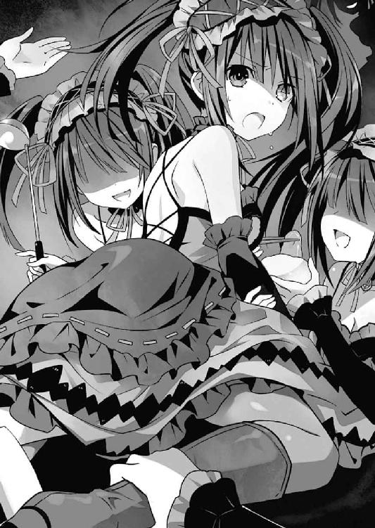
狂三は微かに震える手でそれを受け取ると、一息にごくりと飲み干した。
「はぁ......っ、はぁ......っ」
そして荒い息を吐き、よろよろとその場に立ち上がる。しかしまだ、口の中が炎症を起こしたようなヒリヒリ感と、呼吸の度に寄せては返す刺激臭は残ったままだった。
......しかしそれも当然だ。何しろ十香のきなこパンは、狂三の投入した食材の膿魔味を凝縮した一品だったのである。そんなものを無理矢理飲み込まされて、無事で済むわけがない。他の分身体たちが影に引き込んでくれたからよかったものの、狂三でさえ一瞬意識を失いそうになってしまった。
「ひ、酷い目に......遭いましたわ......」
荒い息をしながら言う。すると分身体たちが、優しく狂三の背を撫でながら返してきた。
「あら、あら。でも『わたくし』も悪いですわよ。『わたくし』たちに実食を押しつけたりして」
「そうですわ。あの『わたくし』たちの気持ちも考えてくださいまし」
「......ぐ」
狂三が苦々しく呻いていると、今度は別の分身体たちが声を上げた。
「でも、『わたくし』の気持ちもわかりますわ。『わたくし』だって、士道さんと遊びたいですわよね」
「ええっ、それならもっと素直にお願いすればよかったではありませんの」
「無理ですわよ。だって『わたくし』ですわよ？」
『あー』
「何を勝手に納得していますのっ!? 『わたくし』は別に......ぐ、うぷっ!?」
狂三は分身体たちの会話にたまらず大声を上げ──その際せり上がってきた嘔吐感に口元を押さえた。
「ああっ、落ち着いてくださいまし」
「はい、もう一杯お水ですわ」
「うう......」
狂三は分身体に背中を撫でられながら、もう二度と闇鍋はするまいと心に誓った。
あとがき
お久しぶりです橘公司です。『デート・ア・ライブ アンコール５』をお届けいたしました。いかがでしたでしょうか。お気に召したなら幸いです。
短編集『アンコール』もついに５巻目。表紙は八舞姉妹でございます。颶風の御子の私服がついに表紙に。
ちなみに、巻頭の著者プロフィールにも書きましたが、この『アンコール５』が、私橘公司のちょうど30冊目の本となります。わー、ぱちぱち！ まあ『デート・ア・ライブ マテリアル』も含めた数なんですけど、あれも半分以上小説だから１冊カウントでいいよね！
これもひとえに皆様のおかげでございます。これからも頑張りますので、何卒よろしくお願いいたします。
さて、ここから『アンコール』恒例の各話解説に入っていきます。多少のネタバレを含みますので、まだ本文をお読みになっていない方はお気を付けください。
○折紙カウンセリング
久しぶりの折紙回、と見せかけての折紙回（哲学）。
11巻で歴史改編が成されたあとの、〈デビル〉な方の折紙短編となります。天使っぽい方が〈デビル〉とはこれ如何に。
本編では11巻周辺のみの短い出番ではありますが、〈デビル〉が表に出ている折紙は結構お気に入りです。内なる衝動に抗おうとしても抗えないあたりが特に。心の中にもう一人の自分がいて、時折身体を動かされるとか中二的で格好いいですよね。もう一人の私。きっとピラミッド形のパズルとか組み上げたに違いありません。最終的にはカードで決着を着けます。もう一人の私に勝てる気がしない。
○令音ホリデー
令音さんの謎の私生活を暴け！ な短編。というわけで令音さんの休日を追う話に。イメージはわらしべ長者。少し違うのは、だいたいの事件を本人のスペックでねじ伏せるところ。
実はこれの前に、令音さんに見合い話が持ち上がる話も書いてみたのですが、いまひとつしっくりこなかったためボツに。ネタ自体はなしではないと思うので、そのうち機会があったらまたリファインしてみたいです。でも個人的にはタマちゃん先生が令音さんと一緒に婚活パーティーに行く話の方が書きたいです。
○白銀アストレイ
『デート・ア・ライブ』は作中の季節が春から始まったお話なので、この巻数になってようやく冬の話が書けるようになりました。というわけで、せっかくなので雪山に。そしてあれじゃないですか。みんなで雪山に行ったら遭難しないわけがないじゃないですか（偏見）。
確か昔店舗特典で、士道と折紙が遭難してしまう短い話を書いた覚えがあるのですが、それの短編版をようやく書くことができた感じです。しかも数年の時を経て、折紙は夕弦、美九という強い味方を得てしまいました。これが友情パワーか。士道の純潔が危ない。
○白銀マーダラー
白銀短編後編。雪吹雪くコテージで殺人事件が起きないわけがない（偏見）。雪山はかくも偏見に満ちている。担当氏が電話口で、かっまいたち！ かっまいたち！（一歩がデン○シー・ロールを放ったときみたいな感じで）と言っていました。噓です。
挿絵は十香が血まみれで倒れているという衝撃的なものですが、何気に後ろに描かれている精霊たちの部屋着姿も見所だったりします。七罪のかぼちゃパンツが可愛らしすぎてもっと私服のシーンを取ろうとおもいましたまる。
○精霊スノーウォーズ
ところ変わって天宮市。タイトルの通りみんなで雪合戦をするお話です。じゃんけんで行われたチーム分けですが、白銀アストレイのときの遭難三人組が一つのチームに。偶然って怖いですね。ちなみに各チーム名は密かなお気に入りです。『ヴァイス・レギオン』......一体誰が名付けたのでしょう。超格好いい。
そして七罪がフラッグを取ったシーンの挿絵に描かれた雪だるまも素敵です。四糸乃たちが作ったと思しきウサ耳だるまと、明らかに耶俱矢が装飾に携わったであろう『ケーニッヒ・シュネー零式』が良い味を出しています。ちなみに挿絵指定は一切していません。こういった小技を効かせてくれるのが、つなこさんの心憎いところです。
○精霊ダークマター
今回の短編集は白銀アストレイ、白銀マーダラー、精霊スノーウォーズと冬ネタが続いたので、書き下ろしも冬ならではのものを書こうということになり、闇鍋ネタに。なぜだ。
闇といえば彼女、ということで、最近出番の少ないあの人も登場しています。お話の中では描かれていませんが、みんなが書いたメモをこたつの中ですり替えたり、鍋に入れるための具をせっせと作っている彼女の姿を想像するとなんだか微笑ましくなってきます。たぶん「うぅ......くさいですわ......くさいですわ......」とか言いながら餃子を包んでいたのでしょう（※個人の想像です）。
さて最後になりましたが、今回も様々な方々のご尽力によって本を出すことができました。
イラストレーターのつなこさん、担当氏、デザイナーの草野さん、編集部や営業の方々、その他出版、流通、小売などに関わる全ての方々、そして、今この本を手に取ってくださっているあなた。本当に、ありがとうございます。
では、また次の本でお会いできることを祈っております。
二〇一六年三月 橘 公司
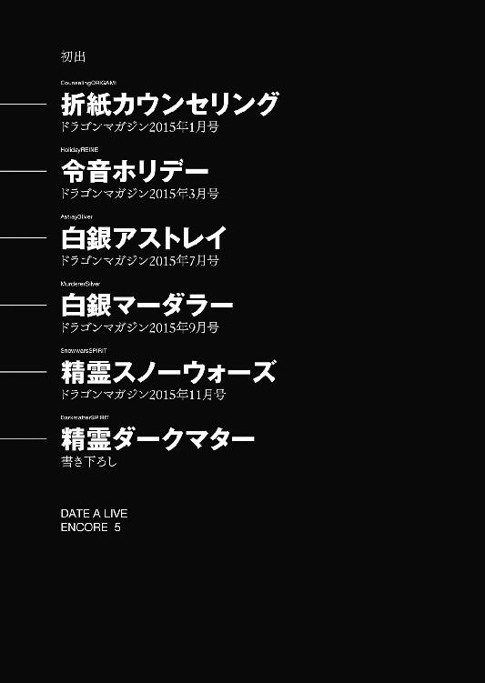
橘公司
●たちばなこうし
東京都在住。第20回ファンタジア長編小説大賞準入選作『蒼穹のカルマ』でデビュー。実はこの『アンコール５』で、デビューしてからの著作数がちょうど30冊になります。うれしい。ということで30にちなみ、作中でそろそろ30歳を迎えるタマちゃんにスポットを当てた、タマちゃん30歳おめでとう祭を......やっぱかわいそうなのでやめておきます。
カバー・口絵・本文イラスト／つなこ
カバーデザイン／草野剛
デート・ア・ライブ アンコール５
橘公司
平成28年5月20日 発行
(C)Koushi Tachibana, Tsunako 2016
本電子書籍は下記にもとづいて制作しました
富士見ファンタジア文庫『デート・ア・ライブ アンコール５』
平成28年5月25日初版発行
発行者 三坂泰二
発 行 株式会社ＫＡＤＯＫＡＷＡ
〒102-8177 東京都千代田区富士見2-13-3
電話 0570-002-301（カスタマーサポート・ナビダイヤル）
受付時間 9:00～17:00（土日 祝日 年末年始を除く）
http://www.kadokawa.co.jp/